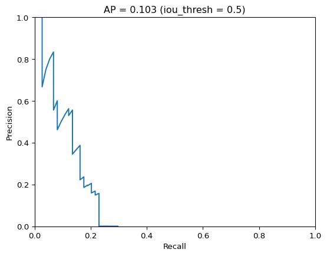
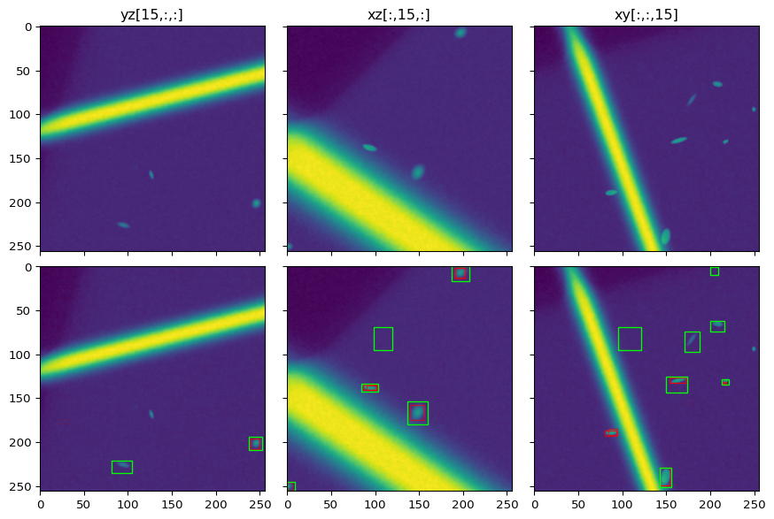
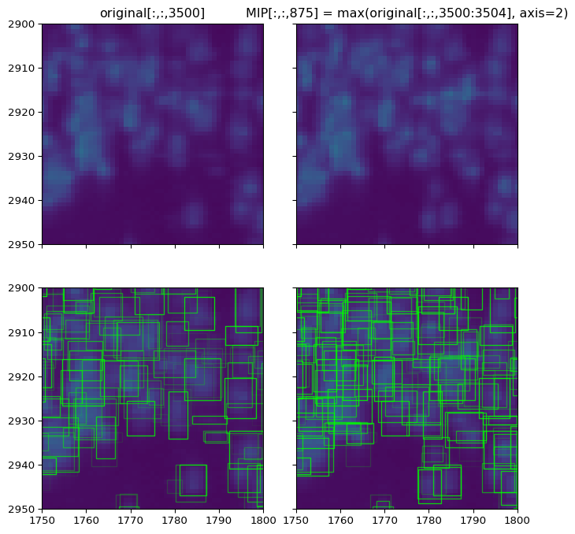
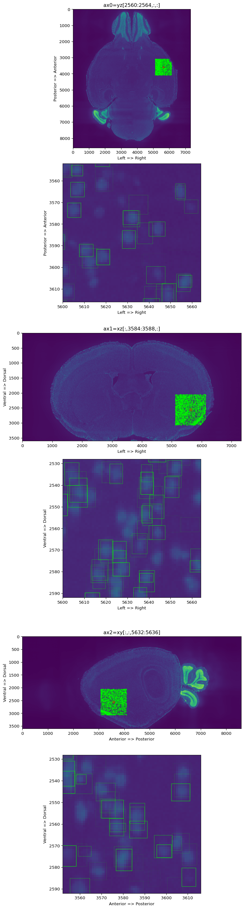
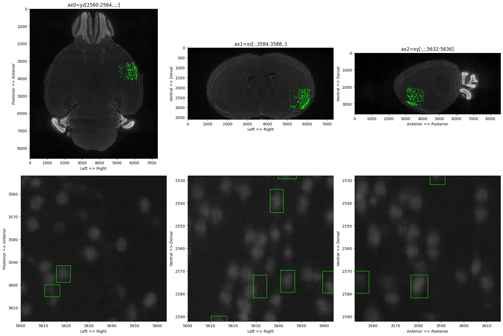

[1]:
import torch
import matplotlib.pyplot as plt
import os
import time
import numpy as np
import random
from matplotlib.patches import Rectangle
import tifffile
import h5py
from torch.utils.data import DataLoader
import imageio.v2 as imageio
from scipy.ndimage import gaussian_filter
import importlib as imp
import sys
# sys.path.append('/home/abenneck/Desktop/yolo_tiles/docs/scripts')
sys.path.append(os.path.join(os.path.split(os.getcwd())[0], 'scripts'))
import yolo_tiles
imp.reload(yolo_tiles)
from yolo_tiles import img_to_tiles, apply_model_to_tiles, load_test_image, preprocess, tileDataset, remove_bbox_in_overlap
import yolo_help
imp.reload(yolo_help)
from yolo_help import bbox_to_rectangles, imshow, convert_data, Net, get_best_bounding_box_per_cell
import yolo_post_help
imp.reload(yolo_post_help)
from yolo_post_help import remove_low_conf_bboxes, postprocess, bb_to_rec
import yolo_help_3D
imp.reload(yolo_help_3D)
from yolo_help_3D import apply_model_to_orthogonal_slices, gen_3D_GT, recon_down, vol_to_mip_rgb, orthogonal_to_3D, vol_to_mip
import yolo_avg_prec
imp.reload(yolo_avg_prec)
from yolo_avg_prec import get_AP, gt_bbox_to_pred_bbox_format, IOU_3D, yolo_output_to_list
(0) Apply 2D model to 3D volume of 2D coronal slices¶
(0.0) Extract a 3D volume from a stack of 2D slices¶
[2]:
img_dir = '/nafs/shattuck/RodentToolsData/ZW-DT-1-P56-1/Ex_488_Em_525_stitched'
outdir = '/nafs/shattuck/RodentToolsData/ZW-DT-1-P56-1/yolo_outputs_v05/'
[3]:
idx_start = 1500 # Entire slice clearly visible after gamma correction
n_slice = 120 # The number of slices to generate a cube
tile_idx = 2077 # This tile has an anchor point of ~(10_000, 7_500)
last_idx = 120
for idx, fname in enumerate(sorted(os.listdir(img_dir))[(idx_start):(idx_start+n_slice)]):
if idx < last_idx:
continue
# Load the image
img_path = os.path.join(img_dir, fname)
img = tifffile.imread(img_path)
# Preprocess using gamma correction + upsampling
start = time.time()
img_up = preprocess(img)
print(f'Finished preprocessing in {time.time()-start:.2f}s')
# Extract tiles from the preprocessed input image
padded_img, tiles = img_to_tiles(img_up, lower_threshold_bg = 0.04, verbose=True)
I_tile = tiles[tile_idx]['img']
np.save(os.path.join(outdir, f'slice_{idx}.npy'), I_tile)
print(f'Finished {idx}/{n_slice}\n')
(0.1) Stack + interpolate the slices to have one isotropic cube of data¶
[4]:
# Load and stack all the extracted tiles
slice_dir = '/nafs/shattuck/RodentToolsData/ZW-DT-1-P56-1/yolo_outputs_v05/'
vol = []
for fname in os.listdir(slice_dir):
I = np.load(os.path.join(slice_dir, fname))
vol.append(I)
vol_stacked = np.stack(vol, axis=2)
[5]:
# Generate a gif of all the slices
if False:
frames = []
for fname in os.listdir(slice_dir):
img = np.load(os.path.join(slice_dir, fname))
x = img.astype(np.float32)
x -= x.min()
x /= (x.max() if x.max() > 0 else 1.0)
img_u8 = (x * 255).astype(np.uint8)
frames.append(img_u8)
imageio.mimsave('/home/abenneck/Desktop/vol.gif', frames, duration = 100, loop=0)
[6]:
# Interpolate along the z-axis
from scipy.ndimage import map_coordinates
tile_dim = 256
x = np.arange(tile_dim)
y = np.arange(tile_dim)
z = np.linspace(0, n_slice-1, tile_dim)
X, Y, Z = np.meshgrid(x, y, z, indexing='ij')
coords = np.array([X, Y, Z])
vol_interp = map_coordinates(vol_stacked, coords, order=3)
vol_interp.shape
[6]:
(256, 256, 256)
[7]:
# Generate a 3D view of the interpolated data
# Define dimensions and grid
Nx, Ny, Nz = 256, 256, 256
X, Y, Z = np.meshgrid(np.arange(Nx), np.arange(Ny), -np.arange(Nz))
kw = {'vmin': vol_interp.min(), 'vmax': vol_interp.max(), 'levels': np.linspace(vol_interp.min(), vol_interp.max(), 10)}
# Create a figure with 3D ax
fig = plt.figure(figsize=(8,8))
ax = fig.add_subplot(111, projection='3d')
# Plot contour surfaces
_ = ax.contourf(
X[:, :, 0], Y[:, :, 0], vol_interp[:, :, 0],
zdir='z', offset=0, **kw)
_ = ax.contourf(
X[0, :, :], vol_interp[0, :, :], Z[0, :, :],
zdir='y', offset=0, **kw)
C = ax.contourf(
vol_interp[:, -1, :], Y[:, -1, :], Z[:, -1, :],
zdir='x', offset=X.max(), **kw)
# Set limits of the plot from coord limits
xmin, xmax = X.min(), X.max()
ymin, ymax = Y.min(), Y.max()
zmin, zmax = Z.min(), Z.max()
ax.set(xlim=[xmin, xmax], ylim=[ymin, ymax], zlim=[zmin, zmax])
# Plot edges
edges_kw = dict(color='0.4', linewidth=1, zorder=1e3)
ax.plot([xmax, xmax], [ymin, ymax], 0, **edges_kw)
ax.plot([xmin, xmax], [ymin, ymin], 0, **edges_kw)
ax.plot([xmax, xmax], [ymin, ymin], [zmin, zmax], **edges_kw)
# Set labels and zticks
ax.set_xlabel('X')
ax.set_ylabel('Y')
ax.set_zlabel('Z (Slice)')
ax.view_init(30, -45, 0)
ax.set_box_aspect(None, zoom=0.9)
# Show Figure
plt.show()

[8]:
fig, ax = plt.subplots(1,3, layout='tight')
ax[0].imshow(vol_interp[0,:,:])
ax[0].set_title('[0,:,:]')
ax[0].set_xlabel('Z')
ax[0].set_ylabel('Y')
ax[1].imshow(vol_interp[:,0,:])
ax[1].set_title('[:,0,:]')
ax[1].set_xlabel('X')
ax[1].set_ylabel('Z')
ax[2].imshow(vol_interp[:,:,0])
ax[2].set_title('[:,:,0]')
ax[2].set_xlabel('X')
ax[2].set_ylabel('Y')
fig.set_size_inches(9,3)

(0.2) Apply the network to each slice along all 3 cardinal planes¶
[9]:
# Load the pretrained model
model_path = '/nafs/shattuck/RodentToolsData/ZW-DT-1-P56-1/yolo_saved_weights/modelsave_bright_on_dark.pt'
net = Net()
net.load_state_dict(torch.load(model_path))
# Define some hyperparameters
ds_factor = 8
bbox_dim = 5
num_classes = 3
B = net.B
stride = net.stride
dtype = torch.float32
pads = np.array([0,0])
# Initialize reconstruction containers
recon_xy = np.ones((int(tile_dim/ds_factor), int(tile_dim/ds_factor), tile_dim, bbox_dim+num_classes))*(-np.inf)
recon_xz = np.ones((int(tile_dim/ds_factor), tile_dim, int(tile_dim/ds_factor), bbox_dim+num_classes))*(-np.inf)
recon_yz = np.ones((tile_dim, int(tile_dim/ds_factor), int(tile_dim/ds_factor), bbox_dim+num_classes))*(-np.inf)
start = time.time()
for idx in np.arange(tile_dim):
slice_xy = vol_interp[:,:,idx][None]
slice_xz = vol_interp[:,idx,:][None]
slice_yz = vol_interp[idx,:,:][None]
# Apply model to slices parallel to the XY-plane
out_xy = net((torch.tensor(slice_xy[None],dtype=dtype)))
out_xy = out_xy[0].detach().numpy()
out_xy = postprocess(out_xy, B, stride, pads, up_factor=1)
recon_xy[:,:,idx,:] = out_xy
# Apply model to slices parallel to the XZ-plane
out_xz = net((torch.tensor(slice_xz[None],dtype=dtype)))
out_xz = out_xz[0].detach().numpy()
out_xz = postprocess(out_xz, B, stride, pads, up_factor=1)
recon_xz[:,idx,:,:] = out_xz
# Apply model to slices parallel to the YZ-plane
out_yz = net((torch.tensor(slice_yz[None],dtype=dtype)))
out_yz = out_yz[0].detach().numpy()
out_yz = postprocess(out_yz, B, stride, pads, up_factor=1)
recon_yz[idx,:,:,:] = out_yz
if idx % 25 == 0:
print(f'Finished {idx}/{tile_dim}')
print(f'Finished applying model to 3 orthogonal views in {time.time()-start:.2f}s')
Finished 0/256
Finished 25/256
Finished 50/256
Finished 75/256
Finished 100/256
Finished 125/256
Finished 150/256
Finished 175/256
Finished 200/256
Finished 225/256
Finished 250/256
Finished applying model to 3 orthogonal views in 14.46s
[10]:
slice_idx = 200
nrow, ncol = 2, 3
fig, axs = plt.subplots(nrow, ncol, layout='constrained', sharex=True, sharey=True)
axs[0,0].imshow(vol_interp[slice_idx,:,:])
axs[1,0].imshow(vol_interp[slice_idx,:,:])
bb = recon_yz[slice_idx,:,:,:]
scores = recon_yz[slice_idx,:,:,-4]
predicted_rectangles = bb_to_rec(bb, fc='none', ec='lime', alpha=scores)
axs[1,0].add_collection(predicted_rectangles)
axs[0,0].set_title(f'recon_yz[{slice_idx},:,:]')
axs[0,1].imshow(vol_interp[:,slice_idx,:])
axs[1,1].imshow(vol_interp[:,slice_idx,:])
bb = recon_xz[:,slice_idx,:,:]
scores = recon_xz[:,slice_idx,:,-4]
predicted_rectangles = bb_to_rec(bb, fc='none', ec='lime', alpha=scores)
axs[1,1].add_collection(predicted_rectangles)
axs[0,1].set_title(f'recon_xz[:,{slice_idx},:]')
axs[0,2].imshow(vol_interp[:,:,slice_idx])
axs[1,2].imshow(vol_interp[:,:,slice_idx])
bb = recon_xy[:,:,slice_idx,:]
scores = recon_xy[:,:,slice_idx,-4]
predicted_rectangles = bb_to_rec(bb, fc='none', ec='lime', alpha=scores)
axs[1,2].add_collection(predicted_rectangles)
axs[0,2].set_title(f'recon_xy[:,:,{slice_idx}]')
fig.set_size_inches(ncol*3, nrow*3)

(0.3) Downsample the outputs along the ‘tile_dim’ axis¶
[11]:
conf_idx = 4
ds_factor = 8
down_dim = int(tile_dim/ds_factor)
down_xy = []
down_xz = []
down_yz = []
start = time.time()
for idx in np.arange(down_dim):
# Extract subset of 8 XY-slices to be downsampled into 1 slice
recon_xy_down = recon_xy[:,:,(idx*ds_factor):((idx+1)*ds_factor),:]
# Get idx of bbox with highest confidence at each pixel
inds_xy = np.argmax(recon_xy_down[..., conf_idx], axis = 2)
# Downsample along relevant axis using the above indeces
recon_xy_down = np.take_along_axis(recon_xy_down, inds_xy[:, :, None, None], axis=2)
# Append downsampled slice to final output for XY-slices
down_xy.append(recon_xy_down)
# Repeat for XZ-slices
recon_xz_down = recon_xz[:,(idx*ds_factor):((idx+1)*ds_factor),:,:]
inds_xz = np.argmax(recon_xz_down[..., conf_idx], axis = 1)
recon_xz_down = np.take_along_axis(recon_xz_down, inds_xz[:, None, :, None], axis=1)
down_xz.append(recon_xz_down)
# Repear for YZ-slices
recon_yz_down = recon_yz[(idx*ds_factor):((idx+1)*ds_factor),:,:,:]
inds_yz = np.argmax(recon_yz_down[..., conf_idx], axis = 0)
recon_yz_down = np.take_along_axis(recon_yz_down, inds_yz[None, :, :, None], axis=0)
down_yz.append(recon_yz_down)
# Concat lists so that they are now each 32x32x32 cubes
down_xy = np.concatenate(down_xy, axis=2)
down_xz = np.concatenate(down_xz, axis=1)
down_yz = np.concatenate(down_yz, axis=0)
print(f'Finished downsampling outputs in {time.time()-start:.2f}s')
Finished downsampling outputs in 0.02s
[18]:
# Downsample vol_interp along one axis. Useful for overlaying bbox outputs on MIPs
def vol_to_mip(vol, ax_idx, ds_factor = 8):
"""
Convert a 3D image volume (vol) into a stack of 2D MIPs along an axis (ax_idx).
This is useful for visualizing outputs from the YOLO_3D pipeline.
Parameters:
===========
vol : array of shape 256x256x256
The image volume to be 'downsampled'
ax_idx : int
The axis along which MIPs should be generated
ds_factor : int
The number of slices to use in each MIP
Returns:
========
vol_mip : array
A stack of MIPs along the 'ax_idx' axis
"""
vol_mip = []
vol_dim = vol.shape[ax_idx]
for i in np.arange(int(vol_dim/ds_factor)):
if ax_idx == 0:
vol_slice_stack = vol[(i*ds_factor):((i+1)*ds_factor), :, :]
elif ax_idx == 1:
vol_slice_stack = vol[:, (i*ds_factor):((i+1)*ds_factor), :]
elif ax_idx == 2:
vol_slice_stack = vol[:, :, (i*ds_factor):((i+1)*ds_factor)]
else:
raise Exception(f'vol only has {len(vol.shape)} axes, but ax_idx = {ax_idx} was passed')
vol_slice_max = np.max(vol_slice_stack, axis=ax_idx)
vol_mip.append(vol_slice_max)
vol_mip = np.stack(vol_mip, axis=ax_idx)
return vol_mip
vol_0 = vol_to_mip(vol_interp, 0)
vol_1 = vol_to_mip(vol_interp, 1)
vol_2 = vol_to_mip(vol_interp, 2)
[13]:
print('recon_output.shape => downsampled_output.shape')
print(f'xy: {recon_xy.shape} => {down_xy.shape}')
print(f'xz: {recon_xz.shape} => {down_xz.shape}')
print(f'yz: {recon_yz.shape} => {down_yz.shape}\n')
print('vol_interp.shape => vol_mip.shape')
print(f'xy: {vol_interp.shape} => {vol_0.shape}')
print(f'xz: {vol_interp.shape} => {vol_1.shape}')
print(f'yz: {vol_interp.shape} => {vol_2.shape}')
recon_output.shape => downsampled_output.shape
xy: (32, 32, 256, 8) => (32, 32, 32, 8)
xz: (32, 256, 32, 8) => (32, 32, 32, 8)
yz: (256, 32, 32, 8) => (32, 32, 32, 8)
vol_interp.shape => vol_mip.shape
xy: (256, 256, 256) => (32, 256, 256)
xz: (256, 256, 256) => (256, 32, 256)
yz: (256, 256, 256) => (256, 256, 32)
[14]:
slice_idx = 15 # 0:32
ds_factor = 8
orig_slice_idx = slice_idx*ds_factor # 0:256
fig, axs = plt.subplots(2, 2, layout='constrained', sharex=True, sharey=True)
axs[0,0].imshow(vol_interp[orig_slice_idx,:,:])
axs[0,0].set_title(f'original[{orig_slice_idx},:,:]')
scores = recon_yz[slice_idx,:,:,-4].ravel()
predicted_rectangles = bb_to_rec(recon_yz[slice_idx,:,:,:], fc='none', ec='lime', alpha=scores)
axs[1,0].imshow(vol_interp[slice_idx,:,:])
axs[1,0].add_collection(predicted_rectangles)
axs[0,1].imshow(vol_0[slice_idx,:,:])
axs[0,1].set_title(f'MIP[{slice_idx},:,:] = max(original[{orig_slice_idx}:{orig_slice_idx+8},:,:], axis=0)')
scores = down_yz[slice_idx,:,:,-4].ravel()
predicted_rectangles = bb_to_rec(down_yz[slice_idx,:,:,:], fc='none', ec='lime', alpha=scores)
axs[1,1].imshow(vol_0[slice_idx,:,:])
axs[1,1].add_collection(predicted_rectangles)
fig.set_size_inches(7,7)

(0.4) Stitch together 3 2D outputs into 1 3D output of the same shape¶
down_xy[0,0,0,:] = [xmin, ymin, xmax, ymax, conf, cl0, cl1, cl2] down_xz[0,0,0,:] = [xmin, zmin, xmax, zmax, conf, cl0, cl1, cl2] down_yz[0,0,0,:] = [ymin, zmin, ymax, zmax, conf, cl0, cl1, cl2][37]:
start = time.time()
bbox_dim = 7
recon_total = np.ones((down_dim, down_dim, down_dim, bbox_dim+num_classes))*(-np.inf)
for i in np.arange(down_dim):
for j in np.arange(down_dim):
for k in np.arange(down_dim):
# From meeting 02/26/26
xmin = (down_xy[i,j,k,1] + down_xz[i,j,k,1]) / 2
xmax = (down_xy[i,j,k,3] + down_xz[i,j,k,3]) / 2
ymin = (down_xy[i,j,k,0] + down_yz[i,j,k,1]) / 2
ymax = (down_xy[i,j,k,2] + down_yz[i,j,k,3]) / 2
zmin = (down_xz[i,j,k,0] + down_yz[i,j,k,0]) / 2
zmax = (down_xz[i,j,k,2] + down_yz[i,j,k,2]) / 2
# conf = np.max([down_xy[i,j,k,4], down_xz[i,j,k,4], down_yz[i,j,k,4]])
conf = np.min([down_xy[i,j,k,4], down_xz[i,j,k,4], down_yz[i,j,k,4]])
# conf = down_xy[i,j,k,4] * down_xz[i,j,k,4] * down_yz[i,j,k,4]
# conf = np.sum([down_xy[i,j,k,4], down_xz[i,j,k,4], down_yz[i,j,k,4]]) / 3
cl0 = np.max([down_xy[i,j,k,5], down_xz[k,i,j,5], down_yz[j,k,i,5]])
cl1 = np.max([down_xy[i,j,k,6], down_xz[k,i,j,6], down_yz[j,k,i,6]])
cl2 = np.max([down_xy[i,j,k,7], down_xz[k,i,j,7], down_yz[j,k,i,7]])
recon_total[i,j,k] = [xmin, xmax, ymin, ymax, zmin, zmax, conf, cl0, cl1, cl2]
print(f'Finished combining outputs in {time.time()-start:.2f}s')
Finished combining outputs in 0.66s
Summary Statistics¶
[38]:
print('Bbox details')
print(f'np.min(xmin): {np.min(recon_total[:,:,:,0])}')
print(f'np.max(xmax): {np.max(recon_total[:,:,:,1])}')
print(f'np.min(ymin): {np.min(recon_total[:,:,:,2])}')
print(f'np.max(ymax): {np.max(recon_total[:,:,:,3])}')
print(f'np.min(zmin): {np.min(recon_total[:,:,:,4])}')
print(f'np.max(zmax): {np.max(recon_total[:,:,:,5])}')
print()
print('Conf details')
print(f'min: {np.min(recon_total[:,:,:,-4])}')
print(f'max: {np.max(recon_total[:,:,:,-4])}')
print(f'avg: {np.average(recon_total[:,:,:,-4])}')
print(f'std: {np.std(recon_total[:,:,:,-4])}')
print()
print('Data at [0,0,0]')
print(recon_total[0,0,0])
Bbox details
np.min(xmin): -8.238142013549805
np.max(xmax): 262.76905822753906
np.min(ymin): -7.571131229400635
np.max(ymax): 262.87811279296875
np.min(zmin): -7.786772727966309
np.max(zmax): 263.6905975341797
Conf details
min: 4.639359041831663e-53
max: 0.6652349433787457
avg: 0.054715814889773895
std: 0.11211835098978983
Data at [0,0,0]
[-5.61961627e+00 9.99296999e+00 -4.26669455e+00 1.24777112e+01
1.43471456e+00 7.24990344e+00 7.90833776e-05 3.27794075e-01
-2.78825045e-01 -2.23635584e-01]
(0.5) Visualize the outputs¶
[39]:
slice_idx = 31 # 0:31
outdir = '/home/abenneck/Desktop/yolo3d_outputs/gif_frames_0'
# for slice_idx in np.arange(down_dim):
nrow, ncol = 2, 3
fig, axs = plt.subplots(nrow, ncol, layout='constrained', sharex=True, sharey=True)
axs[0,0].imshow(vol_0[slice_idx,:,:])
axs[0,0].set_title(f'yz[{slice_idx},:,:]')
axs[0,1].imshow(vol_1[:,slice_idx,:])
axs[0,1].set_title(f'xz[:,{slice_idx},:]')
axs[0,2].imshow(vol_2[:,:,slice_idx])
axs[0,2].set_title(f'xy[:,:,{slice_idx}]')
print('Plotting bboxes . . .')
scores = recon_total[slice_idx,:,:,-4].ravel()
predicted_rectangles = bb_to_rec(recon_total[slice_idx,:,:,:], pos = [4,2,5,3], fc='none', ec='lime', alpha=scores)
axs[1,0].imshow(vol_0[slice_idx,:,:])
axs[1,0].add_collection(predicted_rectangles)
scores = recon_total[:,slice_idx,:,-4].ravel()
predicted_rectangles = bb_to_rec(recon_total[:,slice_idx,:,:], pos = [4,0,5,1], fc='none', ec='lime', alpha=scores)
axs[1,1].imshow(vol_1[:,slice_idx,:])
axs[1,1].add_collection(predicted_rectangles)
scores = recon_total[:,:,slice_idx,-4].ravel()
predicted_rectangles = bb_to_rec(recon_total[:,:,slice_idx,:], pos = [2,0,3,1], fc='none', ec='lime', alpha=scores)
axs[1,2].imshow(vol_2[:,:,slice_idx])
axs[1,2].add_collection(predicted_rectangles)
fig.set_size_inches(ncol*3, nrow*3)
# plt.savefig(os.path.join(outdir, f'recon_slice_{slice_idx:03d}.png'))
Plotting bboxes . . .

[33]:
# Generate a gif of all the slices
if False:
frames = []
for fname in sorted(os.listdir(outdir)):
if '.ipynb' not in fname:
img = imageio.imread(os.path.join(outdir, fname))
frames.append(img)
imageio.mimsave('/home/abenneck/Desktop/yolo3d_outputs/gif0.gif', frames, duration = 1000, loop=0)
(1) Quantify model performance on a 3D simulated dataset¶
(1.1) Initialize a 3D volume w/ cells + artifacts¶
Generate the 3D simulated dataset¶
[5]:
applyPipelineToSimulatedData = False
np.random.seed(5)
N = 256
M = 350
nclasses = 2
thr_rel = 0
I, bbox, cl = gen_3D_GT(N, M, nclasses, thr_rel=thr_rel)
fig, ax = plt.subplots()
ax.imshow(I[I.shape[0] // 2,:,:,:].max(axis=-1))
ax.set_title(f'Example slice')
[5]:
Text(0.5, 1.0, 'Example slice')

Generate + save orthogonal views of the data (frames for the gif)¶
[10]:
def gen_orthogonal_frames(I, bbox):
"""
Generate N images containing the ith slice from each plane of the simulated volume I.
"""
N = I.shape[0]
M = bbox.shape[0]
for slice_idx in np.arange(N):
nrow, ncol = 1, 3
fig, axs = plt.subplots(1,3,layout='tight')
fig.set_size_inches(ncol*3, nrow*4)
fig.suptitle(f'Orthogonal views of XYZ slices for idx {slice_idx}')
for slice_ax in [0,1,2]:
# Show a slice (max over channels) with contrast normalization
if slice_ax == 0:
img = I[slice_idx,:,:,:].max(axis=-1) # (Y,X)
slice_name = 'Z'
elif slice_ax == 1:
img = I[:,slice_idx,:,:].max(axis=-1) # (Z,X)
slice_name = 'Y'
elif slice_ax == 2:
img = I[:,:,slice_idx,:].max(axis=-1) # (Z,Y)
slice_name = 'X'
else:
raise Exception(f'Invalid slice_ax: {slice_ax}')
Imin, Imax = np.percentile(img, (1, 99))
img_disp = np.clip((img - Imin) / (Imax - Imin), 0, 1)
axs[slice_ax].imshow(img_disp)
axs[slice_ax].set_title(f'{slice_name}')
axs[slice_ax].axis("off")
count = 0
for (x0, y0, z0, w, h, d) in bbox:
# draw boxes that intersect this slice
if slice_ax == 0 and z0 <= slice_idx < z0 + d:
axs[slice_ax].add_patch(Rectangle((x0, y0), w, h, fc = 'none', ec = 'k', linewidth=1.2))
count += 1
elif slice_ax == 1 and y0 <= slice_idx < y0 + w:
axs[slice_ax].add_patch(Rectangle((x0, z0), h, d, fc = 'none', ec = 'k', linewidth=1.2))
count += 1
elif slice_ax == 2 and x0 <= slice_idx < x0 + h:
axs[slice_ax].add_patch(Rectangle((y0, z0), w, d, fc = 'none', ec = 'k', linewidth=1.2))
count += 1
else:
continue
axs[slice_ax].text(5, 15, f"Boxes on slice: {count}", backgroundcolor = [1,1,1,0.5], fontsize=10, color='k')
plt.savefig(os.path.join(outdir, f'idx_{slice_idx:03d}'))
plt.close('all')
if False:
# Generate + save N frames
outdir = '/home/abenneck/Desktop/yolo3d_outputs/gif_frames_gt0'
gen_orthogonal_frames(I, bbox)
# Combine those N frames into a single .gif file
for fname in sorted(os.listdir(outdir)):
if '.ipynb' not in fname:
img = imageio.imread(os.path.join(outdir, fname))
frames.append(img)
# NOTE: duration is the number of ms to display each frame
imageio.mimsave('/home/abenneck/Desktop/yolo3d_outputs/gif_gt0.gif', frames, duration = 100, loop=0)
(1.2) Apply our earlier pipeline to the simulated 3D dataset¶
Apply 2D model to orthogonal slices¶
NOTE: Earlier data was shape [256,256,256] and simulated dataset is shape [256,256,256,3][ ]:
if applyPipelineToSimulatedData:
model_path = '/nafs/shattuck/RodentToolsData/ZW-DT-1-P56-1/yolo_saved_weights/modelsave_bright_on_dark.pt'
# model_path = '/home/abenneck/Desktop/yolo_outputs/models/nepochs_9854/modelsave.pt'
recon_xy, recon_xz, recon_yz = apply_model_to_orthogonal_slices(model_path, I)
Finished 0/256
Downsample along the slice dimension¶
[14]:
if applyPipelineToSimulatedData:
down_xy, down_xz, down_yz = recon_down(recon_xy, recon_xz, recon_yz)
Finished downsampling outputs in 0.02s
[15]:
print('recon_output.shape => downsampled_output.shape')
print(f'xy: {recon_xy.shape} => {down_xy.shape}')
print(f'xz: {recon_xz.shape} => {down_xz.shape}')
print(f'yz: {recon_yz.shape} => {down_yz.shape}')
recon_output.shape => downsampled_output.shape
xy: (32, 32, 256, 8) => (32, 32, 32, 8)
xz: (32, 256, 32, 8) => (32, 32, 32, 8)
yz: (256, 32, 32, 8) => (32, 32, 32, 8)
Generate MIP-volumes along each axis¶
[16]:
if applyPipelineToSimulatedData:
vol_0 = vol_to_mip_rgb(I, 0)
vol_1 = vol_to_mip_rgb(I, 1)
vol_2 = vol_to_mip_rgb(I, 2)
Combine 3 2D outputs into 1 3D output¶
[31]:
if applyPipelineToSimulatedData:
recon_total = orthogonal_to_3D(down_xy, down_xz, down_yz)
Finished combining outputs in 0.73s
Visualize the outputs¶
[16]:
if False and applyPipelineToSimulatedData:
slice_idx = 15 # 0:31
outdir = '/home/abenneck/Desktop/yolo3d_outputs/gif_frames_0'
# for slice_idx in np.arange(down_dim):
nrow, ncol = 2, 3
fig, axs = plt.subplots(nrow, ncol, layout='constrained', sharex=True, sharey=True)
axs[0,0].imshow(vol_0[slice_idx,:,:].max(axis=-1))
axs[0,0].set_title(f'yz[{slice_idx},:,:]')
axs[0,1].imshow(vol_1[:,slice_idx,:].max(axis=-1))
axs[0,1].set_title(f'xz[:,{slice_idx},:]')
axs[0,2].imshow(vol_2[:,:,slice_idx].max(axis=-1))
axs[0,2].set_title(f'xy[:,:,{slice_idx}]')
print('Plotting bboxes . . .')
# conf_thresh = 0.0
scores = recon_total[slice_idx,:,:,-4].ravel()
scores[scores < conf_thresh] = 0.0
predicted_rectangles = bb_to_rec(recon_total[slice_idx,:,:,:], pos = [4,2,5,3], fc='none', ec='r', alpha=scores)
axs[1,0].imshow(vol_0[slice_idx,:,:].max(axis=-1))
axs[1,0].add_collection(predicted_rectangles)
scores = recon_total[:,slice_idx,:,-4].ravel()
scores[scores < conf_thresh] = 0.0
predicted_rectangles = bb_to_rec(recon_total[:,slice_idx,:,:], pos = [4,0,5,1], fc='none', ec='r', alpha=scores)
axs[1,1].imshow(vol_1[:,slice_idx,:].max(axis=-1))
axs[1,1].add_collection(predicted_rectangles)
scores = recon_total[:,:,slice_idx,-4].ravel()
scores[scores < conf_thresh] = 0.0
predicted_rectangles = bb_to_rec(recon_total[:,:,slice_idx,:], pos = [2,0,3,1], fc='none', ec='r', alpha=scores)
axs[1,2].imshow(vol_2[:,:,slice_idx].max(axis=-1))
axs[1,2].add_collection(predicted_rectangles)
fig.set_size_inches(ncol*3, nrow*3)
# plt.savefig(os.path.join(outdir, f'recon_slice_{slice_idx:03d}.png'))
(1.3) Quantify Model Performance wrt GT bboxes¶
[103]:
if applyPipelineToSimulatedData:
AP, performance = get_AP(bbox, recon_total, iou_thresh = 0.5, verbose = False)
[111]:
if False:
for row in performance:
p_str = 'TP' if row[4] == 1 else 'FP'
print(f'{int(row[0]):<5} {p_str}: {row[2]:.3f} (conf) {row[3]:.3f} (iou) {row[8]:.3f} (prec) {row[9]:.3f} (recall)')
[102]:
if False:
rolling_AP = 0
for iou in np.arange(0.5,1,0.05):
AP, performance = get_AP(bbox, recon_total, iou_thresh = iou, verbose = False)
rolling_AP += AP
print(f'mAP: {rolling_AP / 10}')
mAP: 0.03797125300598227
[7]:
fig, ax = plt.subplots()
ax.plot(performance[:,-1], performance[:,-2])
ax.set_xlabel('Recall')
ax.set_ylabel('Precision')
ax.set_title(f'AP = {AP:.3f} (iou_thresh = 0.5)')
ax.set_xlim([0,1])
ax.set_ylim([0,1])
# for bb in performance:
# # If the bbox was a TP, plot it
# if bb[3] == 1:
# # print('Added point')
# ax.scatter(bb[-1], bb[-2], color = 'green', linewidth = 0.5)
[7]:
(0.0, 1.0)

(1.4) The Complete Pipeline¶
[6]:
time_overall = time.time()
# Generate a synthetic dataset
np.random.seed(5)
N = 256
M = 350
nclasses = 2
I, bbox, cl = gen_3D_GT(N, M, nclasses, thr_rel=0.15)
# Apply our model to the orthogonal slices
time_start = time.time()
# model_path = '/home/abenneck/Desktop/yolo_outputs/models/nepochs_9854/modelsave.pt'
model_path = '/nafs/shattuck/RodentToolsData/ZW-DT-1-P56-1/yolo_saved_weights/modelsave_bright_on_dark.pt'
recon_xy, recon_xz, recon_yz = apply_model_to_orthogonal_slices(model_path, I)
print(f'Finished applying model to all 3 orthogonal views of I in {time.time() - time_start:.2f}s')
# Downsample along the corresponding slice axis
down_xy, down_xz, down_yz = recon_down(recon_xy, recon_xz, recon_yz)
# Generate MIP-volumes for downstream visualization
vol_0 = vol_to_mip_rgb(I, 0)
vol_1 = vol_to_mip_rgb(I, 1)
vol_2 = vol_to_mip_rgb(I, 2)
# Combine the 3 orthogonal views into 1 3D view
recon_total = orthogonal_to_3D(down_xy, down_xz, down_yz)
# Quantify the performance of the model
AP, performance = get_AP(bbox, recon_total, iou_thresh = 0.5)
print(f'Finished entire pipeline in {time.time() - time_overall:.2f}s')
Finished 0/256
Finished 25/256
Finished 50/256
Finished 75/256
Finished 100/256
Finished 125/256
Finished 150/256
Finished 175/256
Finished 200/256
Finished 225/256
Finished 250/256
Finished applying model to 3 orthogonal views in 20.76s
Finished applying model to all 3 orthogonal views of I in 20.79s
Finished downsampling outputs in 0.03s
Finished combining outputs in 0.92s
Finished entire pipeline in 42.26s
Visualize results on input image volume¶
[11]:
# ds_factor = 8 # No upsampling in this case
# slice_idx = 15 # 0:31
# orig_slice = slice_idx * ds_factor
# x_orig_slice = (slice_idx) * ds_factor
# y_orig_slice = (slice_idx) * ds_factor
# z_orig_slice = (slice_idx) * ds_factor
# gt_bbox = gt_bbox_to_pred_bbox_format(bbox)
# bb_present = []
# for bb in gt_bbox:
# x_valid, y_valid, z_valid = False, False, False
# if bb[0] <= x_orig_slice and bb[1] >= x_orig_slice:
# x_valid = True
# if bb[1] <= y_orig_slice and bb[2] >= y_orig_slice:
# y_valid = True
# if bb[3] <= z_orig_slice and bb[4] >= z_orig_slice:
# z_valid = True
# bb_present.append([x_valid, y_valid, z_valid])
# bb_present = np.asarray(bb_present)
# x_bbox_plot = gt_bbox[bb_present[:,0]]
# y_bbox_plot = gt_bbox[bb_present[:,1]]
# z_bbox_plot = gt_bbox[bb_present[:,2]]
[18]:
ds_factor = 8 # No upsampling in this case
slice_idx = 15 # 0:31
outdir = '/ifshome/abenneck/docs_public/temp_outputs/yolo_gt_gif_frames'
gt_bbox = gt_bbox_to_pred_bbox_format(bbox) # (cz, cy, cx, l, w, d) => (xmin, xmax, ymin, ymax, zmin, zmax)
for slice_idx in np.arange(32):
x_orig_slice = (slice_idx) * ds_factor
y_orig_slice = (slice_idx) * ds_factor
z_orig_slice = (slice_idx) * ds_factor
# Determine which bounding cubes pass through the current slice
bb_present = []
for bb in gt_bbox:
x_valid = True if bb[0] <= x_orig_slice and bb[1] >= x_orig_slice else False
y_valid = True if bb[2] <= y_orig_slice and bb[3] >= y_orig_slice else False
z_valid = True if bb[4] <= z_orig_slice and bb[5] >= z_orig_slice else False
bb_present.append([x_valid, y_valid, z_valid])
bb_present = np.asarray(bb_present)
x_bbox_plot = gt_bbox[bb_present[:,0]]
y_bbox_plot = gt_bbox[bb_present[:,1]]
z_bbox_plot = gt_bbox[bb_present[:,2]]
# Initialize the figure
nrow, ncol = 2, 3
fig, axs = plt.subplots(nrow, ncol, layout='constrained', sharex=True, sharey=True)
axs[0,0].imshow(vol_0[slice_idx,:,:].max(axis=-1))
axs[0,0].set_title(f'yz[{slice_idx},:,:]')
axs[0,1].imshow(vol_1[:,slice_idx,:].max(axis=-1))
axs[0,1].set_title(f'xz[:,{slice_idx},:]')
axs[0,2].imshow(vol_2[:,:,slice_idx].max(axis=-1))
axs[0,2].set_title(f'xy[:,:,{slice_idx}]')
# print('Plotting bboxes . . .')
scores = recon_total[slice_idx,:,:,-4].ravel()
predicted_rectangles = bb_to_rec(recon_total[slice_idx,:,:,:], pos = [4,2,5,3], fc='none', ec='r', alpha=scores)
axs[1,0].imshow(vol_0[slice_idx,:,:].max(axis=-1))
axs[1,0].add_collection(predicted_rectangles)
gt_rectangles = bb_to_rec(x_bbox_plot, pos = [4,2,5,3], fc='none', ec='lime')
axs[1,0].add_collection(gt_rectangles)
scores = recon_total[:,slice_idx,:,-4].ravel()
predicted_rectangles = bb_to_rec(recon_total[:,slice_idx,:,:], pos = [4,0,5,1], fc='none', ec='r', alpha=scores)
axs[1,1].imshow(vol_1[:,slice_idx,:].max(axis=-1))
axs[1,1].add_collection(predicted_rectangles)
gt_rectangles = bb_to_rec(y_bbox_plot, pos = [4,0,5,1], fc='none', ec='lime')
axs[1,1].add_collection(gt_rectangles)
scores = recon_total[:,:,slice_idx,-4].ravel()
predicted_rectangles = bb_to_rec(recon_total[:,:,slice_idx,:], pos = [2,0,3,1], fc='none', ec='r', alpha=scores)
axs[1,2].imshow(vol_2[:,:,slice_idx].max(axis=-1))
axs[1,2].add_collection(predicted_rectangles)
gt_rectangles = bb_to_rec(z_bbox_plot, pos = [2,0,3,1], fc='none', ec='lime')
axs[1,2].add_collection(gt_rectangles)
fig.set_size_inches(ncol*3, nrow*3)
plt.savefig(os.path.join(outdir, f'gt_slice_{slice_idx:03d}.png'))
print(f'Finished {slice_idx+1}/{32}')
if slice_idx != 15:
plt.close(fig)
# fig.show()
# break
Finished 1/32
Finished 2/32
Finished 3/32
Finished 4/32
Finished 5/32
Finished 6/32
Finished 7/32
Finished 8/32
Finished 9/32
Finished 10/32
Finished 11/32
Finished 12/32
Finished 13/32
Finished 14/32
Finished 15/32
Finished 16/32
Finished 17/32
Finished 18/32
Finished 19/32
Finished 20/32
Finished 21/32
Finished 22/32
Finished 23/32
Finished 24/32
Finished 25/32
Finished 26/32
Finished 27/32
Finished 28/32
Finished 29/32
Finished 30/32
Finished 31/32
Finished 32/32

Visualize every GT bbox at the center of the image¶
[ ]:
ds_factor = 8
conf_idx = -4
view_dim = 64
# Convert inputs to lists
gt_bboxes = yolo_output_to_list(bbox)
gt_bboxes = gt_bbox_to_pred_bbox_format(gt_bboxes) # (cz, cy, cx, l, w, d) => (xmin, xmax, ymin, ymax, zmin, zmax)
pred_bboxes = yolo_output_to_list(recon_total)
# Sort all detections by confidence
inds = np.argsort(pred_bboxes[..., conf_idx], axis = 0) # The sorted indeces from pred_bboxes
pred_sorted = np.flip(pred_bboxes[inds], axis=0) # Note that inds sorts from lowest to highest, so flip is necessary to sort from highest to lowest
# Extract TPs after PR curve computations
# performance[i] = [pred_idx, best_gt_iou_idx, pred_conf, best_gt_iou, TP, FP, total_TP, total_FP, precision, recall]
tp_pred_bboxes = performance[performance[:,4] == 1.0]
for tp in tp_pred_bboxes:
pred_idx = int(tp[0])
gt_idx = int(tp[1])
pred_conf = tp[2]
gt_iou = tp[3]
pred_bb = pred_sorted[pred_idx]
xmin_pred, xmax_pred, ymin_pred, ymax_pred, zmin_pred, zmax_pred, conf, cl0, cl1, cl2 = pred_bb
gt_bb = gt_bboxes[gt_idx]
xmin, xmax, ymin, ymax, zmin, zmax = gt_bb
cx = (xmin + xmax) / 2
cy = (ymin + ymax) / 2
cz = (zmin + zmax) / 2
# print(f'(conf, iou) - ({pred_conf:.4f}, {gt_iou:.4f}): x - [{pred_bb[0]:.2f},{pred_bb[1]:.2f}] vs [{gt_bb[0]:.2f},{gt_bb[1]:.2f}]')
# print(f'(conf, iou) - ({pred_conf:.4f}, {gt_iou:.4f}): y - [{pred_bb[2]:.2f},{pred_bb[3]:.2f}] vs [{gt_bb[2]:.2f},{gt_bb[3]:.2f}]')
# print(f'(conf, iou) - ({pred_conf:.4f}, {gt_iou:.4f}): z - [{pred_bb[4]:.2f},{pred_bb[5]:.2f}] vs [{gt_bb[4]:.2f},{gt_bb[5]:.2f}]')
# print()
x_orig_slice = int(np.floor(cx / ds_factor))
y_orig_slice = int(np.floor(cy / ds_factor))
z_orig_slice = int(np.floor(cz / ds_factor))
# Initialize the figure
nrow, ncol = 1, 3
fig, axs = plt.subplots(nrow, ncol, layout='constrained')
axs[0].imshow(vol_0[x_orig_slice,:,:].max(axis=-1))
axs[0].add_patch(Rectangle((zmin, ymin), zmax-zmin, ymax-ymin, ec='r', fill = False))
axs[0].add_patch(Rectangle((zmin_pred, ymin_pred), zmax_pred-zmin_pred, ymax_pred-ymin_pred, ec='lime', fill = False))
axs[0].set_title(f'yz[{x_orig_slice},:,:]')
axs[0].set_xlim([cz + view_dim / 2, cz - view_dim / 2])
axs[0].set_ylim([cy + view_dim / 2, cy - view_dim / 2])
axs[0].set_xlabel('z-axis')
axs[0].set_ylabel('y-axis')
axs[0].legend(['GT', 'Predicted'])
axs[1].imshow(vol_1[:,y_orig_slice,:].max(axis=-1))
axs[1].add_patch(Rectangle((zmin, xmin), zmax-zmin, xmax-xmin, ec='r', fill = False))
axs[1].add_patch(Rectangle((zmin_pred, xmin_pred), zmax_pred-zmin_pred, xmax_pred-xmin_pred, ec='lime', fill = False))
axs[1].set_title(f'xz[:,{y_orig_slice},:]')
axs[1].set_xlim([cz + view_dim / 2, cz - view_dim / 2])
axs[1].set_ylim([cx + view_dim / 2, cx - view_dim / 2])
axs[1].set_xlabel('z-axis')
axs[1].set_ylabel('x-axis')
axs[1].legend(['GT', 'Predicted'])
axs[2].imshow(vol_2[:,:,z_orig_slice].max(axis=-1))
axs[2].add_patch(Rectangle((ymin, xmin), ymax-ymin, xmax-xmin, ec='r', fill = False))
axs[2].add_patch(Rectangle((ymin_pred, xmin_pred), ymax_pred-ymin_pred, xmax_pred-xmin_pred, ec='lime', fill = False))
axs[2].set_title(f'xz[:,:,{z_orig_slice}]')
axs[2].set_xlim([cy + view_dim / 2, cy - view_dim / 2])
axs[2].set_ylim([cx + view_dim / 2, cx - view_dim / 2])
axs[2].set_xlabel('y-axis')
axs[2].set_ylabel('x-axis')
axs[2].legend(['GT', 'Predicted'])
fig.suptitle(f'(pred_idx, gt_idx) : ({pred_idx}, {gt_idx}) / (conf, iou) : ({pred_conf:.3f}, {gt_iou:.3f})', fontsize = 20)
fig.set_size_inches(ncol*5,nrow*5)
# break
Combine frames into a gif¶
[19]:
# Generate a gif of all the slices
indir = '/ifshome/abenneck/docs_public/temp_outputs/yolo_gt_gif_frames'
outdir = '/ifshome/abenneck/docs_public/temp_outputs'
gif_fname = 'gif1.gif'
if False:
frames = []
for fname in sorted(os.listdir(indir)):
if '.ipynb' not in fname:
img = imageio.imread(os.path.join(indir, fname))
frames.append(img)
imageio.mimsave(os.path.join(outdir, gif_fname), frames, duration = 1000, loop=0)
(2) Apply the above pipeline to real HDF5 data¶
(2.0) Apply model to 2D slices from 3D volume, using tile method since images are relatively large¶
[ ]:
fname = '/nafs/shattuck/RodentToolsData/Stacked/Ex_488_Em_525_stitched_chunk32.h5'
vol = h5py.File(fname)
vol_stack = vol['stack']
fig, ax = plt.subplots(1,3)
ax[0].imshow(vol_stack[vol_stack.shape[0] // 2, :, :])
ax[1].imshow(vol_stack[:, vol_stack.shape[1] // 2, :])
ax[2].imshow(vol_stack[:, :, vol_stack.shape[2] // 2])
[2]:
start_total = time.time()
# Laod 2D YOLO model
model_path = '/nafs/shattuck/RodentToolsData/ZW-DT-1-P56-1/yolo_saved_weights/modelsave_bright_on_dark.pt'
net = Net()
net.load_state_dict(torch.load(model_path))
B = net.B
stride = net.stride
# Load HDF5 3D input image
fname = '/nafs/shattuck/RodentToolsData/Stacked/Ex_488_Em_525_stitched_chunk32.h5'
vol = h5py.File(fname)
vol_stack = vol['stack']
curr_ax = 1 # [0,1,2]
next_idx = 8587
# outdir = f'/home/abenneck/Desktop/yolo3d_outputs/Ex_488_Em_525/ax{curr_ax}'
outdir = f'/nafs/shattuck/RodentToolsData/ZW-DT-1-P56-1/yolo3D_outputs_v01/ax{curr_ax}'
for idx in np.arange(vol_stack.shape[curr_ax]):
if idx < next_idx:
continue
# Extract the slice
if curr_ax == 0:
img = vol_stack[idx,:,:]
out_fname = os.path.split(fname)[-1][:-3] + f'idx_{idx:05d}_:_:.npy'
elif curr_ax == 1:
img = vol_stack[:,idx,:]
out_fname = os.path.split(fname)[-1][:-3] + f'idx_:_{idx:05d}_:.npy'
elif curr_ax == 2:
img = vol_stack[:,:,idx]
out_fname = os.path.split(fname)[-1][:-3] + f'idx_:_:_{idx:05d}.npy'
else:
raise Exception(f'Invalid ax ({curr_ax}) supplied, only ({[k for k in range(2)]}) allowed')
# Preprocess using gamma correction + upsampling
start = time.time()
img_up = preprocess(img)
print(f'Finished preprocessing in {time.time()-start:.2f}s')
# Extract tiles from the preprocessed input image
padded_img, tiles = img_to_tiles(img_up, lower_threshold_bg = 0.04, verbose=True)
# Apply model to tiles + apply bbox edge filtering
print('Applying model to tiles . . .')
out = apply_model_to_tiles(tiles, model_path, padded_img.shape[0], padded_img.shape[1], verbose=True)
# Convert the raw model output into a more useful data structure
print('Postprocessing . . .')
pads = (np.array(padded_img.shape) - np.array(img_up.shape))/2
out = torch.tensor(out.clone().detach(), dtype=torch.float32)
out = postprocess(out, B, stride, pads, up_factor=2, verbose=True)
# Save the processed output
out_path = os.path.join(outdir, out_fname)
if True:
np.save(out_path, out)
# # (11/19/25) Save some additional metadata in an npz file
# out_fnamez = (img_path.split('/')[-1]).split('.')[0] + '_metadata.npz'
# out_pathz = os.path.join(outdir, out_fnamez)
# if False:
# np.savez(out_pathz,
# units = 'um',
# nrow_orig_img = img.shape[0],
# ncol_orig_img = img.shape[1],
# drow_orig_img = 1.866,
# dcol_orig_img = 1.866,
# dslice_orig_img = 2.0,
# nrow_upsampled_img = img_up.shape[0],
# ncol_upsampled_img = img_up.shape[1],
# drow_upsampled_img = 3.732,
# dcol_upsampled_img = 3.732,
# pad_row_top = pads[0],
# pad_row_bot = pads[0],
# pad_col_left = pads[1],
# pad_col_right = pads[1],
# nrow = out.shape[0],
# ncol = out.shape[1],
# drow = 7.464,
# dcol = 7.464,
# note = "Bbox coords refer to the original image, with (0,0) corresponding to the top left pixel center"
# )
print(f'Saved the outputs for image {idx}/{vol_stack.shape[curr_ax]} in {time.time()-start_total:.2f}s\n')
start_total = time.time()
Finished preprocessing in 1.19s
Finished extracting all tiles in 3.13s
Applying model to tiles . . .
Finished tiles 0:100/2178 in 0.28s
Finished tiles 100:300/2178 in 0.90s
Finished applying model to entire image in 5.02s with 204/2178 (0.094) tiles marked as foreground
Postprocessing . . .
Finished postprocessing in 0.11s
/tmp/ipykernel_399209/1616186617.py:53: UserWarning: To copy construct from a tensor, it is recommended to use sourceTensor.clone().detach() or sourceTensor.clone().detach().requires_grad_(True), rather than torch.tensor(sourceTensor).
out = torch.tensor(out.clone().detach(), dtype=torch.float32)
Saved the outputs for image 8429/8587 in 36.27s
Finished preprocessing in 1.23s
Finished extracting all tiles in 3.14s
Applying model to tiles . . .
Finished tiles 0:100/2178 in 0.27s
Finished tiles 100:300/2178 in 0.94s
Finished applying model to entire image in 4.52s with 172/2178 (0.079) tiles marked as foreground
Postprocessing . . .
Finished postprocessing in 0.12s
Saved the outputs for image 8430/8587 in 10.38s
Finished preprocessing in 1.37s
Finished extracting all tiles in 3.65s
Applying model to tiles . . .
Finished tiles 0:100/2178 in 1.02s
Finished tiles 100:300/2178 in 1.62s
Finished applying model to entire image in 6.77s with 151/2178 (0.069) tiles marked as foreground
Postprocessing . . .
Finished postprocessing in 0.21s
Saved the outputs for image 8431/8587 in 62.59s
Finished preprocessing in 2.15s
Finished extracting all tiles in 4.21s
Applying model to tiles . . .
Finished tiles 0:100/2178 in 0.36s
Finished tiles 100:300/2178 in 1.87s
Finished applying model to entire image in 8.86s with 152/2178 (0.070) tiles marked as foreground
Postprocessing . . .
Finished postprocessing in 0.36s
Saved the outputs for image 8432/8587 in 17.48s
Finished preprocessing in 1.79s
Finished extracting all tiles in 4.35s
Applying model to tiles . . .
Finished tiles 0:100/2178 in 3.39s
Finished tiles 100:300/2178 in 12.45s
Finished applying model to entire image in 51.88s with 151/2178 (0.069) tiles marked as foreground
Postprocessing . . .
Finished postprocessing in 0.17s
Saved the outputs for image 8433/8587 in 59.84s
Finished preprocessing in 1.80s
Finished extracting all tiles in 4.17s
Applying model to tiles . . .
Finished tiles 0:100/2178 in 3.50s
Finished tiles 100:300/2178 in 15.49s
Finished applying model to entire image in 77.48s with 223/2178 (0.102) tiles marked as foreground
Postprocessing . . .
Finished postprocessing in 0.18s
Saved the outputs for image 8434/8587 in 85.38s
Finished preprocessing in 1.31s
Finished extracting all tiles in 3.25s
Applying model to tiles . . .
Finished tiles 0:100/2178 in 0.30s
Finished tiles 100:300/2178 in 0.92s
Finished applying model to entire image in 4.97s with 186/2178 (0.085) tiles marked as foreground
Postprocessing . . .
Finished postprocessing in 0.20s
Saved the outputs for image 8435/8587 in 11.47s
Finished preprocessing in 1.65s
Finished extracting all tiles in 3.80s
Applying model to tiles . . .
Finished tiles 0:100/2178 in 0.42s
Finished tiles 100:300/2178 in 1.88s
Finished tiles 300:1100/2178 in 6.27s
Finished applying model to entire image in 11.10s with 249/2178 (0.114) tiles marked as foreground
Postprocessing . . .
Finished postprocessing in 0.32s
Saved the outputs for image 8436/8587 in 18.59s
Finished preprocessing in 1.62s
Finished extracting all tiles in 3.65s
Applying model to tiles . . .
Finished tiles 0:100/2178 in 1.12s
Finished tiles 100:300/2178 in 1.51s
Finished applying model to entire image in 10.05s with 209/2178 (0.096) tiles marked as foreground
Postprocessing . . .
Finished postprocessing in 0.14s
Saved the outputs for image 8437/8587 in 17.01s
Finished preprocessing in 2.06s
Finished extracting all tiles in 4.92s
Applying model to tiles . . .
Finished tiles 0:100/2178 in 0.31s
Finished tiles 100:300/2178 in 0.97s
Finished applying model to entire image in 5.83s with 230/2178 (0.106) tiles marked as foreground
Postprocessing . . .
Finished postprocessing in 0.13s
Saved the outputs for image 8438/8587 in 14.57s
Finished preprocessing in 1.56s
Finished extracting all tiles in 4.07s
Applying model to tiles . . .
Finished tiles 0:100/2178 in 1.05s
Finished tiles 100:300/2178 in 1.56s
Finished applying model to entire image in 8.01s with 201/2178 (0.092) tiles marked as foreground
Postprocessing . . .
Finished postprocessing in 0.21s
Saved the outputs for image 8439/8587 in 15.16s
Finished preprocessing in 1.81s
Finished extracting all tiles in 4.56s
Applying model to tiles . . .
Finished tiles 0:100/2178 in 0.87s
Finished tiles 100:300/2178 in 2.06s
Finished applying model to entire image in 11.82s with 219/2178 (0.101) tiles marked as foreground
Postprocessing . . .
Finished postprocessing in 0.25s
Saved the outputs for image 8440/8587 in 20.17s
Finished preprocessing in 2.19s
Finished extracting all tiles in 3.74s
Applying model to tiles . . .
Finished tiles 0:100/2178 in 0.50s
Finished tiles 100:300/2178 in 3.51s
Finished applying model to entire image in 8.06s with 218/2178 (0.100) tiles marked as foreground
Postprocessing . . .
Finished postprocessing in 0.11s
Saved the outputs for image 8441/8587 in 15.72s
Finished preprocessing in 1.26s
Finished extracting all tiles in 3.45s
Applying model to tiles . . .
Finished tiles 0:100/2178 in 0.40s
Finished tiles 100:300/2178 in 1.12s
Finished applying model to entire image in 6.31s with 197/2178 (0.090) tiles marked as foreground
Postprocessing . . .
Finished postprocessing in 0.14s
Saved the outputs for image 8442/8587 in 12.49s
Finished preprocessing in 1.60s
Finished extracting all tiles in 4.01s
Applying model to tiles . . .
Finished tiles 0:100/2178 in 0.81s
Finished tiles 100:300/2178 in 1.37s
Finished applying model to entire image in 8.17s with 160/2178 (0.073) tiles marked as foreground
Postprocessing . . .
Finished postprocessing in 0.14s
Saved the outputs for image 8443/8587 in 15.54s
Finished preprocessing in 1.62s
Finished extracting all tiles in 3.69s
Applying model to tiles . . .
Finished tiles 0:100/2178 in 0.56s
Finished tiles 100:300/2178 in 1.10s
Finished applying model to entire image in 8.30s with 181/2178 (0.083) tiles marked as foreground
Postprocessing . . .
Finished postprocessing in 0.30s
Saved the outputs for image 8444/8587 in 15.76s
Finished preprocessing in 1.65s
Finished extracting all tiles in 3.87s
Applying model to tiles . . .
Finished tiles 0:100/2178 in 0.26s
Finished tiles 100:300/2178 in 0.90s
Finished applying model to entire image in 5.24s with 204/2178 (0.094) tiles marked as foreground
Postprocessing . . .
Finished postprocessing in 0.12s
Saved the outputs for image 8445/8587 in 12.50s
Finished preprocessing in 1.27s
Finished extracting all tiles in 3.93s
Applying model to tiles . . .
Finished tiles 0:100/2178 in 0.90s
Finished tiles 100:300/2178 in 2.43s
Finished applying model to entire image in 14.55s with 197/2178 (0.090) tiles marked as foreground
Postprocessing . . .
Finished postprocessing in 0.27s
Saved the outputs for image 8446/8587 in 21.39s
Finished preprocessing in 2.17s
Finished extracting all tiles in 5.47s
Applying model to tiles . . .
Finished tiles 0:100/2178 in 1.42s
Finished tiles 100:300/2178 in 1.37s
Finished applying model to entire image in 9.61s with 189/2178 (0.087) tiles marked as foreground
Postprocessing . . .
Finished postprocessing in 0.18s
Saved the outputs for image 8447/8587 in 19.37s
Finished preprocessing in 2.17s
Finished extracting all tiles in 5.37s
Applying model to tiles . . .
Finished tiles 0:100/2178 in 0.91s
Finished tiles 100:300/2178 in 1.00s
Finished applying model to entire image in 5.93s with 178/2178 (0.082) tiles marked as foreground
Postprocessing . . .
Finished postprocessing in 0.11s
Saved the outputs for image 8448/8587 in 44.66s
Finished preprocessing in 1.27s
Finished extracting all tiles in 3.44s
Applying model to tiles . . .
Finished tiles 0:100/2178 in 0.41s
Finished tiles 100:300/2178 in 1.17s
Finished applying model to entire image in 9.16s with 204/2178 (0.094) tiles marked as foreground
Postprocessing . . .
Finished postprocessing in 0.27s
Saved the outputs for image 8449/8587 in 15.58s
Finished preprocessing in 1.62s
Finished extracting all tiles in 3.67s
Applying model to tiles . . .
Finished tiles 0:100/2178 in 0.38s
Finished tiles 100:300/2178 in 1.09s
Finished applying model to entire image in 9.96s with 187/2178 (0.086) tiles marked as foreground
Postprocessing . . .
Finished postprocessing in 0.31s
Saved the outputs for image 8450/8587 in 17.20s
Finished preprocessing in 1.63s
Finished extracting all tiles in 3.85s
Applying model to tiles . . .
Finished tiles 0:100/2178 in 0.62s
Finished tiles 100:300/2178 in 2.65s
Finished applying model to entire image in 9.61s with 218/2178 (0.100) tiles marked as foreground
Postprocessing . . .
Finished postprocessing in 0.14s
Saved the outputs for image 8451/8587 in 16.76s
Finished preprocessing in 1.54s
Finished extracting all tiles in 3.21s
Applying model to tiles . . .
Finished tiles 0:100/2178 in 0.30s
Finished tiles 100:300/2178 in 0.97s
Finished applying model to entire image in 5.82s with 212/2178 (0.097) tiles marked as foreground
Postprocessing . . .
Finished postprocessing in 0.28s
Saved the outputs for image 8452/8587 in 12.53s
Finished preprocessing in 1.63s
Finished extracting all tiles in 3.87s
Applying model to tiles . . .
Finished tiles 0:100/2178 in 0.62s
Finished tiles 100:300/2178 in 2.22s
Finished applying model to entire image in 9.86s with 207/2178 (0.095) tiles marked as foreground
Postprocessing . . .
Finished postprocessing in 0.31s
Saved the outputs for image 8453/8587 in 17.46s
Finished preprocessing in 1.97s
Finished extracting all tiles in 3.72s
Applying model to tiles . . .
Finished tiles 0:100/2178 in 0.32s
Finished tiles 100:300/2178 in 2.21s
Finished applying model to entire image in 9.53s with 184/2178 (0.084) tiles marked as foreground
Postprocessing . . .
Finished postprocessing in 0.28s
Saved the outputs for image 8454/8587 in 17.19s
Finished preprocessing in 1.63s
Finished extracting all tiles in 4.26s
Applying model to tiles . . .
Finished tiles 0:100/2178 in 0.33s
Finished tiles 100:300/2178 in 0.92s
Finished applying model to entire image in 5.01s with 207/2178 (0.095) tiles marked as foreground
Postprocessing . . .
Finished postprocessing in 0.11s
Saved the outputs for image 8455/8587 in 12.55s
Finished preprocessing in 1.26s
Finished extracting all tiles in 3.82s
Applying model to tiles . . .
Finished tiles 0:100/2178 in 0.40s
Finished tiles 100:300/2178 in 2.35s
Finished tiles 300:1100/2178 in 6.60s
Finished applying model to entire image in 12.44s with 251/2178 (0.115) tiles marked as foreground
Postprocessing . . .
Finished postprocessing in 0.19s
Saved the outputs for image 8456/8587 in 19.19s
Finished preprocessing in 2.09s
Finished extracting all tiles in 3.70s
Applying model to tiles . . .
Finished tiles 0:100/2178 in 0.48s
Finished tiles 100:300/2178 in 1.34s
Finished applying model to entire image in 9.69s with 214/2178 (0.098) tiles marked as foreground
Postprocessing . . .
Finished postprocessing in 0.32s
Saved the outputs for image 8457/8587 in 17.67s
Finished preprocessing in 1.62s
Finished extracting all tiles in 4.01s
Applying model to tiles . . .
Finished tiles 0:100/2178 in 0.97s
Finished tiles 100:300/2178 in 2.67s
Finished applying model to entire image in 9.05s with 200/2178 (0.092) tiles marked as foreground
Postprocessing . . .
Finished postprocessing in 0.12s
Saved the outputs for image 8458/8587 in 16.31s
Finished preprocessing in 1.26s
Finished extracting all tiles in 3.84s
Applying model to tiles . . .
Finished tiles 0:100/2178 in 0.38s
Finished tiles 100:300/2178 in 1.21s
Finished applying model to entire image in 11.36s with 224/2178 (0.103) tiles marked as foreground
Postprocessing . . .
Finished postprocessing in 0.21s
Saved the outputs for image 8459/8587 in 18.07s
Finished preprocessing in 2.16s
Finished extracting all tiles in 3.97s
Applying model to tiles . . .
Finished tiles 0:100/2178 in 0.98s
Finished tiles 100:300/2178 in 4.79s
Finished applying model to entire image in 15.87s with 222/2178 (0.102) tiles marked as foreground
Postprocessing . . .
Finished postprocessing in 0.31s
Saved the outputs for image 8460/8587 in 24.20s
Finished preprocessing in 1.95s
Finished extracting all tiles in 3.64s
Applying model to tiles . . .
Finished tiles 0:100/2178 in 0.33s
Finished tiles 100:300/2178 in 0.87s
Finished applying model to entire image in 5.75s with 222/2178 (0.102) tiles marked as foreground
Postprocessing . . .
Finished postprocessing in 0.11s
Saved the outputs for image 8461/8587 in 13.07s
Finished preprocessing in 1.59s
Finished extracting all tiles in 3.63s
Applying model to tiles . . .
Finished tiles 0:100/2178 in 0.64s
Finished tiles 100:300/2178 in 1.80s
Finished applying model to entire image in 7.74s with 180/2178 (0.083) tiles marked as foreground
Postprocessing . . .
Finished postprocessing in 0.28s
Saved the outputs for image 8462/8587 in 14.82s
Finished preprocessing in 1.57s
Finished extracting all tiles in 3.68s
Applying model to tiles . . .
Finished tiles 0:100/2178 in 0.42s
Finished tiles 100:300/2178 in 2.34s
Finished applying model to entire image in 12.22s with 190/2178 (0.087) tiles marked as foreground
Postprocessing . . .
Finished postprocessing in 0.21s
Saved the outputs for image 8463/8587 in 19.49s
Finished preprocessing in 1.63s
Finished extracting all tiles in 3.96s
Applying model to tiles . . .
Finished tiles 0:100/2178 in 1.13s
Finished tiles 100:300/2178 in 1.46s
Finished applying model to entire image in 6.60s with 198/2178 (0.091) tiles marked as foreground
Postprocessing . . .
Finished postprocessing in 0.12s
Saved the outputs for image 8464/8587 in 13.77s
Finished preprocessing in 1.22s
Finished extracting all tiles in 3.46s
Applying model to tiles . . .
Finished tiles 0:100/2178 in 0.35s
Finished tiles 100:300/2178 in 1.83s
Finished tiles 300:1100/2178 in 5.09s
Finished applying model to entire image in 10.73s with 244/2178 (0.112) tiles marked as foreground
Postprocessing . . .
Finished postprocessing in 0.27s
Saved the outputs for image 8465/8587 in 17.12s
Finished preprocessing in 2.18s
Finished extracting all tiles in 5.11s
Applying model to tiles . . .
Finished tiles 0:100/2178 in 0.36s
Finished tiles 100:300/2178 in 1.04s
Finished tiles 300:1100/2178 in 8.77s
Finished applying model to entire image in 12.58s with 231/2178 (0.106) tiles marked as foreground
Postprocessing . . .
Finished postprocessing in 0.22s
Saved the outputs for image 8466/8587 in 22.01s
Finished preprocessing in 1.77s
Finished extracting all tiles in 3.85s
Applying model to tiles . . .
Finished tiles 0:100/2178 in 0.79s
Finished tiles 100:300/2178 in 1.07s
Finished applying model to entire image in 7.24s with 216/2178 (0.099) tiles marked as foreground
Postprocessing . . .
Finished postprocessing in 0.12s
Saved the outputs for image 8467/8587 in 14.55s
Finished preprocessing in 1.26s
Finished extracting all tiles in 3.85s
Applying model to tiles . . .
Finished tiles 0:100/2178 in 0.43s
Finished tiles 100:300/2178 in 2.01s
Finished tiles 300:1100/2178 in 8.05s
Finished applying model to entire image in 14.98s with 254/2178 (0.117) tiles marked as foreground
Postprocessing . . .
Finished postprocessing in 0.32s
Saved the outputs for image 8468/8587 in 21.94s
Finished preprocessing in 2.03s
Finished extracting all tiles in 4.53s
Applying model to tiles . . .
Finished tiles 0:100/2178 in 0.89s
Finished tiles 100:300/2178 in 1.35s
Finished tiles 300:1100/2178 in 3.36s
Finished applying model to entire image in 8.38s with 236/2178 (0.108) tiles marked as foreground
Postprocessing . . .
Finished postprocessing in 0.12s
Saved the outputs for image 8469/8587 in 16.89s
Finished preprocessing in 1.63s
Finished extracting all tiles in 3.71s
Applying model to tiles . . .
Finished tiles 0:100/2178 in 0.86s
Finished tiles 100:300/2178 in 2.35s
Finished applying model to entire image in 8.75s with 210/2178 (0.096) tiles marked as foreground
Postprocessing . . .
Finished postprocessing in 0.12s
Saved the outputs for image 8470/8587 in 15.80s
Finished preprocessing in 1.24s
Finished extracting all tiles in 3.64s
Applying model to tiles . . .
Finished tiles 0:100/2178 in 1.26s
Finished tiles 100:300/2178 in 3.25s
Finished applying model to entire image in 15.62s with 222/2178 (0.102) tiles marked as foreground
Postprocessing . . .
Finished postprocessing in 0.24s
Saved the outputs for image 8471/8587 in 22.34s
Finished preprocessing in 1.70s
Finished extracting all tiles in 3.71s
Applying model to tiles . . .
Finished tiles 0:100/2178 in 0.60s
Finished tiles 100:300/2178 in 2.31s
Finished applying model to entire image in 10.89s with 214/2178 (0.098) tiles marked as foreground
Postprocessing . . .
Finished postprocessing in 0.20s
Saved the outputs for image 8472/8587 in 18.46s
Finished preprocessing in 1.58s
Finished extracting all tiles in 3.71s
Applying model to tiles . . .
Finished tiles 0:100/2178 in 1.06s
Finished tiles 100:300/2178 in 0.87s
Finished applying model to entire image in 5.84s with 204/2178 (0.094) tiles marked as foreground
Postprocessing . . .
Finished postprocessing in 0.12s
Saved the outputs for image 8473/8587 in 12.81s
Finished preprocessing in 1.24s
Finished extracting all tiles in 4.77s
Applying model to tiles . . .
Finished tiles 0:100/2178 in 0.33s
Finished tiles 100:300/2178 in 2.15s
Finished applying model to entire image in 12.28s with 223/2178 (0.102) tiles marked as foreground
Postprocessing . . .
Finished postprocessing in 0.26s
Saved the outputs for image 8474/8587 in 20.14s
Finished preprocessing in 1.86s
Finished extracting all tiles in 3.71s
Applying model to tiles . . .
Finished tiles 0:100/2178 in 0.37s
Finished tiles 100:300/2178 in 1.13s
Finished applying model to entire image in 7.53s with 190/2178 (0.087) tiles marked as foreground
Postprocessing . . .
Finished postprocessing in 0.13s
Saved the outputs for image 8475/8587 in 14.74s
Finished preprocessing in 2.14s
Finished extracting all tiles in 4.45s
Applying model to tiles . . .
Finished tiles 0:100/2178 in 1.47s
Finished tiles 100:300/2178 in 1.72s
Finished applying model to entire image in 7.54s with 201/2178 (0.092) tiles marked as foreground
Postprocessing . . .
Finished postprocessing in 0.12s
Saved the outputs for image 8476/8587 in 15.93s
Finished preprocessing in 1.28s
Finished extracting all tiles in 3.21s
Applying model to tiles . . .
Finished tiles 0:100/2178 in 0.33s
Finished tiles 100:300/2178 in 1.07s
Finished tiles 300:1100/2178 in 4.57s
Finished applying model to entire image in 8.56s with 239/2178 (0.110) tiles marked as foreground
Postprocessing . . .
Finished postprocessing in 0.34s
Saved the outputs for image 8477/8587 in 14.99s
Finished preprocessing in 1.58s
Finished extracting all tiles in 3.78s
Applying model to tiles . . .
Finished tiles 0:100/2178 in 0.93s
Finished tiles 100:300/2178 in 1.49s
Finished applying model to entire image in 10.19s with 224/2178 (0.103) tiles marked as foreground
Postprocessing . . .
Finished postprocessing in 0.33s
Saved the outputs for image 8478/8587 in 17.52s
Finished preprocessing in 1.64s
Finished extracting all tiles in 3.85s
Applying model to tiles . . .
Finished tiles 0:100/2178 in 2.23s
Finished tiles 100:300/2178 in 1.46s
Finished applying model to entire image in 10.52s with 200/2178 (0.092) tiles marked as foreground
Postprocessing . . .
Finished postprocessing in 0.29s
Saved the outputs for image 8479/8587 in 18.04s
Finished preprocessing in 1.66s
Finished extracting all tiles in 3.82s
Applying model to tiles . . .
Finished tiles 0:100/2178 in 1.80s
Finished tiles 100:300/2178 in 1.47s
Finished tiles 300:1100/2178 in 4.03s
Finished applying model to entire image in 10.94s with 229/2178 (0.105) tiles marked as foreground
Postprocessing . . .
Finished postprocessing in 0.09s
Saved the outputs for image 8480/8587 in 47.10s
Finished preprocessing in 1.24s
Finished extracting all tiles in 3.18s
Applying model to tiles . . .
Finished tiles 0:100/2178 in 0.29s
Finished tiles 100:300/2178 in 0.99s
Finished tiles 300:1100/2178 in 6.85s
Finished applying model to entire image in 10.74s with 242/2178 (0.111) tiles marked as foreground
Postprocessing . . .
Finished postprocessing in 0.27s
Saved the outputs for image 8481/8587 in 16.78s
Finished preprocessing in 2.19s
Finished extracting all tiles in 4.64s
Applying model to tiles . . .
Finished tiles 0:100/2178 in 0.78s
Finished tiles 100:300/2178 in 1.77s
Finished applying model to entire image in 11.00s with 225/2178 (0.103) tiles marked as foreground
Postprocessing . . .
Finished postprocessing in 0.20s
Saved the outputs for image 8482/8587 in 19.97s
Finished preprocessing in 1.59s
Finished extracting all tiles in 3.70s
Applying model to tiles . . .
Finished tiles 0:100/2178 in 0.62s
Finished tiles 100:300/2178 in 2.05s
Finished applying model to entire image in 10.81s with 205/2178 (0.094) tiles marked as foreground
Postprocessing . . .
Finished postprocessing in 0.34s
Saved the outputs for image 8483/8587 in 17.98s
Finished preprocessing in 1.25s
Finished extracting all tiles in 3.19s
Applying model to tiles . . .
Finished tiles 0:100/2178 in 0.27s
Finished tiles 100:300/2178 in 0.99s
Finished applying model to entire image in 7.67s with 199/2178 (0.091) tiles marked as foreground
Postprocessing . . .
Finished postprocessing in 0.13s
Saved the outputs for image 8484/8587 in 13.76s
Finished preprocessing in 1.80s
Finished extracting all tiles in 3.70s
Applying model to tiles . . .
Finished tiles 0:100/2178 in 0.31s
Finished tiles 100:300/2178 in 1.04s
Finished applying model to entire image in 11.33s with 219/2178 (0.101) tiles marked as foreground
Postprocessing . . .
Finished postprocessing in 0.17s
Saved the outputs for image 8485/8587 in 18.70s
Finished preprocessing in 2.08s
Finished extracting all tiles in 4.18s
Applying model to tiles . . .
Finished tiles 0:100/2178 in 0.66s
Finished tiles 100:300/2178 in 2.47s
Finished applying model to entire image in 9.90s with 202/2178 (0.093) tiles marked as foreground
Postprocessing . . .
Finished postprocessing in 0.25s
Saved the outputs for image 8486/8587 in 18.24s
Finished preprocessing in 1.72s
Finished extracting all tiles in 3.33s
Applying model to tiles . . .
Finished tiles 0:100/2178 in 0.28s
Finished tiles 100:300/2178 in 1.04s
Finished applying model to entire image in 6.62s with 218/2178 (0.100) tiles marked as foreground
Postprocessing . . .
Finished postprocessing in 0.28s
Saved the outputs for image 8487/8587 in 13.62s
Finished preprocessing in 2.17s
Finished extracting all tiles in 3.91s
Applying model to tiles . . .
Finished tiles 0:100/2178 in 0.69s
Finished tiles 100:300/2178 in 1.98s
Finished tiles 300:1100/2178 in 4.28s
Finished applying model to entire image in 9.41s with 234/2178 (0.107) tiles marked as foreground
Postprocessing . . .
Finished postprocessing in 0.13s
Saved the outputs for image 8488/8587 in 17.34s
Finished preprocessing in 2.15s
Finished extracting all tiles in 5.20s
Applying model to tiles . . .
Finished tiles 0:100/2178 in 0.65s
Finished tiles 100:300/2178 in 2.32s
Finished applying model to entire image in 11.64s with 223/2178 (0.102) tiles marked as foreground
Postprocessing . . .
Finished postprocessing in 0.31s
Saved the outputs for image 8489/8587 in 20.99s
Finished preprocessing in 1.60s
Finished extracting all tiles in 3.42s
Applying model to tiles . . .
Finished tiles 0:100/2178 in 0.27s
Finished tiles 100:300/2178 in 0.98s
Finished applying model to entire image in 5.15s with 212/2178 (0.097) tiles marked as foreground
Postprocessing . . .
Finished postprocessing in 0.12s
Saved the outputs for image 8490/8587 in 11.72s
Finished preprocessing in 2.10s
Finished extracting all tiles in 4.32s
Applying model to tiles . . .
Finished tiles 0:100/2178 in 0.99s
Finished tiles 100:300/2178 in 2.02s
Finished tiles 300:1100/2178 in 5.91s
Finished applying model to entire image in 11.90s with 266/2178 (0.122) tiles marked as foreground
Postprocessing . . .
Finished postprocessing in 0.24s
Saved the outputs for image 8491/8587 in 20.30s
Finished preprocessing in 1.64s
Finished extracting all tiles in 3.76s
Applying model to tiles . . .
Finished tiles 0:100/2178 in 0.51s
Finished tiles 100:300/2178 in 2.04s
Finished tiles 300:1100/2178 in 4.38s
Finished applying model to entire image in 10.15s with 249/2178 (0.114) tiles marked as foreground
Postprocessing . . .
Finished postprocessing in 0.31s
Saved the outputs for image 8492/8587 in 17.38s
Finished preprocessing in 1.58s
Finished extracting all tiles in 4.85s
Applying model to tiles . . .
Finished tiles 0:100/2178 in 0.48s
Finished tiles 100:300/2178 in 1.18s
Finished applying model to entire image in 5.94s with 217/2178 (0.100) tiles marked as foreground
Postprocessing . . .
Finished postprocessing in 0.11s
Saved the outputs for image 8493/8587 in 14.02s
Finished preprocessing in 1.23s
Finished extracting all tiles in 4.72s
Applying model to tiles . . .
Finished tiles 0:100/2178 in 1.74s
Finished tiles 100:300/2178 in 1.27s
Finished applying model to entire image in 12.52s with 213/2178 (0.098) tiles marked as foreground
Postprocessing . . .
Finished postprocessing in 0.30s
Saved the outputs for image 8494/8587 in 20.22s
Finished preprocessing in 1.81s
Finished extracting all tiles in 3.68s
Applying model to tiles . . .
Finished tiles 0:100/2178 in 0.66s
Finished tiles 100:300/2178 in 1.09s
Finished tiles 300:1100/2178 in 3.75s
Finished applying model to entire image in 7.72s with 235/2178 (0.108) tiles marked as foreground
Postprocessing . . .
Finished postprocessing in 0.24s
Saved the outputs for image 8495/8587 in 15.08s
Finished preprocessing in 2.13s
Finished extracting all tiles in 3.72s
Applying model to tiles . . .
Finished tiles 0:100/2178 in 0.65s
Finished tiles 100:300/2178 in 1.82s
Finished tiles 300:1100/2178 in 4.66s
Finished applying model to entire image in 8.87s with 245/2178 (0.112) tiles marked as foreground
Postprocessing . . .
Finished postprocessing in 0.13s
Saved the outputs for image 8496/8587 in 16.44s
Finished preprocessing in 1.28s
Finished extracting all tiles in 3.42s
Applying model to tiles . . .
Finished tiles 0:100/2178 in 2.50s
Finished tiles 100:300/2178 in 2.21s
Finished tiles 300:1100/2178 in 5.22s
Finished applying model to entire image in 11.74s with 235/2178 (0.108) tiles marked as foreground
Postprocessing . . .
Finished postprocessing in 0.31s
Saved the outputs for image 8497/8587 in 18.10s
Finished preprocessing in 1.65s
Finished extracting all tiles in 3.74s
Applying model to tiles . . .
Finished tiles 0:100/2178 in 1.13s
Finished tiles 100:300/2178 in 1.14s
Finished applying model to entire image in 11.08s with 224/2178 (0.103) tiles marked as foreground
Postprocessing . . .
Finished postprocessing in 0.35s
Saved the outputs for image 8498/8587 in 18.64s
Finished preprocessing in 1.88s
Finished extracting all tiles in 3.73s
Applying model to tiles . . .
Finished tiles 0:100/2178 in 1.27s
Finished tiles 100:300/2178 in 1.17s
Finished applying model to entire image in 10.04s with 226/2178 (0.104) tiles marked as foreground
Postprocessing . . .
Finished postprocessing in 0.12s
Saved the outputs for image 8499/8587 in 17.83s
Finished preprocessing in 1.24s
Finished extracting all tiles in 3.31s
Applying model to tiles . . .
Finished tiles 0:100/2178 in 0.29s
Finished tiles 100:300/2178 in 0.93s
Finished tiles 300:1100/2178 in 6.01s
Finished applying model to entire image in 10.12s with 235/2178 (0.108) tiles marked as foreground
Postprocessing . . .
Finished postprocessing in 0.30s
Saved the outputs for image 8500/8587 in 16.52s
Finished preprocessing in 2.16s
Finished extracting all tiles in 4.16s
Applying model to tiles . . .
Finished tiles 0:100/2178 in 2.08s
Finished tiles 100:300/2178 in 1.92s
Finished applying model to entire image in 14.26s with 225/2178 (0.103) tiles marked as foreground
Postprocessing . . .
Finished postprocessing in 0.17s
Saved the outputs for image 8501/8587 in 22.67s
Finished preprocessing in 2.15s
Finished extracting all tiles in 3.75s
Applying model to tiles . . .
Finished tiles 0:100/2178 in 1.19s
Finished tiles 100:300/2178 in 1.06s
Finished applying model to entire image in 6.92s with 188/2178 (0.086) tiles marked as foreground
Postprocessing . . .
Finished postprocessing in 0.11s
Saved the outputs for image 8502/8587 in 14.53s
Finished preprocessing in 1.30s
Finished extracting all tiles in 3.18s
Applying model to tiles . . .
Finished tiles 0:100/2178 in 0.42s
Finished tiles 100:300/2178 in 2.86s
Finished applying model to entire image in 8.55s with 198/2178 (0.091) tiles marked as foreground
Postprocessing . . .
Finished postprocessing in 0.26s
Saved the outputs for image 8503/8587 in 14.88s
Finished preprocessing in 1.62s
Finished extracting all tiles in 3.78s
Applying model to tiles . . .
Finished tiles 0:100/2178 in 1.09s
Finished tiles 100:300/2178 in 1.10s
Finished tiles 300:1100/2178 in 5.45s
Finished applying model to entire image in 11.03s with 270/2178 (0.124) tiles marked as foreground
Postprocessing . . .
Finished postprocessing in 0.19s
Saved the outputs for image 8504/8587 in 18.34s
Finished preprocessing in 2.18s
Finished extracting all tiles in 5.03s
Applying model to tiles . . .
Finished tiles 0:100/2178 in 0.46s
Finished tiles 100:300/2178 in 1.13s
Finished tiles 300:1100/2178 in 6.34s
Finished applying model to entire image in 12.05s with 249/2178 (0.114) tiles marked as foreground
Postprocessing . . .
Finished postprocessing in 0.24s
Saved the outputs for image 8505/8587 in 21.38s
Finished preprocessing in 1.21s
Finished extracting all tiles in 3.20s
Applying model to tiles . . .
Finished tiles 0:100/2178 in 0.29s
Finished tiles 100:300/2178 in 0.95s
Finished tiles 300:1100/2178 in 4.28s
Finished applying model to entire image in 8.67s with 234/2178 (0.107) tiles marked as foreground
Postprocessing . . .
Finished postprocessing in 0.30s
Saved the outputs for image 8506/8587 in 15.02s
Finished preprocessing in 2.09s
Finished extracting all tiles in 5.36s
Applying model to tiles . . .
Finished tiles 0:100/2178 in 0.61s
Finished tiles 100:300/2178 in 2.78s
Finished applying model to entire image in 12.75s with 211/2178 (0.097) tiles marked as foreground
Postprocessing . . .
Finished postprocessing in 0.19s
Saved the outputs for image 8507/8587 in 21.96s
Finished preprocessing in 2.17s
Finished extracting all tiles in 3.90s
Applying model to tiles . . .
Finished tiles 0:100/2178 in 0.76s
Finished tiles 100:300/2178 in 1.14s
Finished applying model to entire image in 9.12s with 221/2178 (0.101) tiles marked as foreground
Postprocessing . . .
Finished postprocessing in 0.10s
Saved the outputs for image 8508/8587 in 16.89s
Finished preprocessing in 1.26s
Finished extracting all tiles in 3.16s
Applying model to tiles . . .
Finished tiles 0:100/2178 in 0.46s
Finished tiles 100:300/2178 in 2.62s
Finished tiles 300:1100/2178 in 3.35s
Finished applying model to entire image in 9.20s with 229/2178 (0.105) tiles marked as foreground
Postprocessing . . .
Finished postprocessing in 0.14s
Saved the outputs for image 8509/8587 in 15.20s
Finished preprocessing in 2.17s
Finished extracting all tiles in 3.91s
Applying model to tiles . . .
Finished tiles 0:100/2178 in 0.59s
Finished tiles 100:300/2178 in 1.10s
Finished applying model to entire image in 8.88s with 201/2178 (0.092) tiles marked as foreground
Postprocessing . . .
Finished postprocessing in 0.17s
Saved the outputs for image 8510/8587 in 16.88s
Finished preprocessing in 1.96s
Finished extracting all tiles in 3.86s
Applying model to tiles . . .
Finished tiles 0:100/2178 in 0.52s
Finished tiles 100:300/2178 in 1.09s
Finished applying model to entire image in 9.40s with 214/2178 (0.098) tiles marked as foreground
Postprocessing . . .
Finished postprocessing in 0.28s
Saved the outputs for image 8511/8587 in 17.32s
Finished preprocessing in 2.12s
Finished extracting all tiles in 3.66s
Applying model to tiles . . .
Finished tiles 0:100/2178 in 0.61s
Finished tiles 100:300/2178 in 1.54s
Finished tiles 300:1100/2178 in 6.97s
Finished applying model to entire image in 13.15s with 253/2178 (0.116) tiles marked as foreground
Postprocessing . . .
Finished postprocessing in 0.14s
Saved the outputs for image 8512/8587 in 48.61s
Finished preprocessing in 1.28s
Finished extracting all tiles in 3.18s
Applying model to tiles . . .
Finished tiles 0:100/2178 in 0.29s
Finished tiles 100:300/2178 in 0.96s
Finished tiles 300:1100/2178 in 9.49s
Finished applying model to entire image in 14.53s with 239/2178 (0.110) tiles marked as foreground
Postprocessing . . .
Finished postprocessing in 0.16s
Saved the outputs for image 8513/8587 in 20.75s
Finished preprocessing in 1.61s
Finished extracting all tiles in 3.74s
Applying model to tiles . . .
Finished tiles 0:100/2178 in 0.69s
Finished tiles 100:300/2178 in 1.14s
Finished tiles 300:1100/2178 in 5.07s
Finished applying model to entire image in 11.86s with 243/2178 (0.112) tiles marked as foreground
Postprocessing . . .
Finished postprocessing in 0.32s
Saved the outputs for image 8514/8587 in 19.36s
Finished preprocessing in 2.12s
Finished extracting all tiles in 5.44s
Applying model to tiles . . .
Finished tiles 0:100/2178 in 0.56s
Finished tiles 100:300/2178 in 1.11s
Finished applying model to entire image in 5.44s with 203/2178 (0.093) tiles marked as foreground
Postprocessing . . .
Finished postprocessing in 0.11s
Saved the outputs for image 8515/8587 in 14.69s
Finished preprocessing in 1.21s
Finished extracting all tiles in 3.62s
Applying model to tiles . . .
Finished tiles 0:100/2178 in 1.14s
Finished tiles 100:300/2178 in 1.91s
Finished applying model to entire image in 9.24s with 165/2178 (0.076) tiles marked as foreground
Postprocessing . . .
Finished postprocessing in 0.18s
Saved the outputs for image 8516/8587 in 15.77s
Finished preprocessing in 1.57s
Finished extracting all tiles in 3.72s
Applying model to tiles . . .
Finished tiles 0:100/2178 in 1.25s
Finished tiles 100:300/2178 in 2.57s
Finished applying model to entire image in 9.42s with 166/2178 (0.076) tiles marked as foreground
Postprocessing . . .
Finished postprocessing in 0.32s
Saved the outputs for image 8517/8587 in 16.80s
Finished preprocessing in 1.68s
Finished extracting all tiles in 3.71s
Applying model to tiles . . .
Finished tiles 0:100/2178 in 1.35s
Finished tiles 100:300/2178 in 2.08s
Finished tiles 300:1100/2178 in 4.54s
Finished applying model to entire image in 9.87s with 227/2178 (0.104) tiles marked as foreground
Postprocessing . . .
Finished postprocessing in 0.20s
Saved the outputs for image 8518/8587 in 17.33s
Finished preprocessing in 1.20s
Finished extracting all tiles in 3.22s
Applying model to tiles . . .
Finished tiles 0:100/2178 in 0.29s
Finished tiles 100:300/2178 in 0.96s
Finished tiles 300:1100/2178 in 5.62s
Finished applying model to entire image in 9.91s with 240/2178 (0.110) tiles marked as foreground
Postprocessing . . .
Finished postprocessing in 0.26s
Saved the outputs for image 8519/8587 in 16.14s
Finished preprocessing in 1.56s
Finished extracting all tiles in 3.68s
Applying model to tiles . . .
Finished tiles 0:100/2178 in 0.45s
Finished tiles 100:300/2178 in 1.98s
Finished tiles 300:1100/2178 in 5.05s
Finished applying model to entire image in 10.81s with 243/2178 (0.112) tiles marked as foreground
Postprocessing . . .
Finished postprocessing in 0.29s
Saved the outputs for image 8520/8587 in 18.08s
Finished preprocessing in 1.96s
Finished extracting all tiles in 3.70s
Applying model to tiles . . .
Finished tiles 0:100/2178 in 0.93s
Finished tiles 100:300/2178 in 1.68s
Finished tiles 300:1100/2178 in 5.17s
Finished applying model to entire image in 11.43s with 230/2178 (0.106) tiles marked as foreground
Postprocessing . . .
Finished postprocessing in 0.30s
Saved the outputs for image 8521/8587 in 18.99s
Finished preprocessing in 1.68s
Finished extracting all tiles in 3.28s
Applying model to tiles . . .
Finished tiles 0:100/2178 in 0.33s
Finished tiles 100:300/2178 in 0.98s
Finished tiles 300:1100/2178 in 2.55s
Finished applying model to entire image in 7.59s with 234/2178 (0.107) tiles marked as foreground
Postprocessing . . .
Finished postprocessing in 0.19s
Saved the outputs for image 8522/8587 in 14.38s
Finished preprocessing in 1.58s
Finished extracting all tiles in 3.74s
Applying model to tiles . . .
Finished tiles 0:100/2178 in 0.80s
Finished tiles 100:300/2178 in 1.68s
Finished tiles 300:1100/2178 in 6.95s
Finished applying model to entire image in 13.49s with 222/2178 (0.102) tiles marked as foreground
Postprocessing . . .
Finished postprocessing in 0.20s
Saved the outputs for image 8523/8587 in 20.73s
Finished preprocessing in 1.58s
Finished extracting all tiles in 3.71s
Applying model to tiles . . .
Finished tiles 0:100/2178 in 0.52s
Finished tiles 100:300/2178 in 1.76s
Finished applying model to entire image in 12.42s with 217/2178 (0.100) tiles marked as foreground
Postprocessing . . .
Finished postprocessing in 0.15s
Saved the outputs for image 8524/8587 in 19.49s
Finished preprocessing in 1.26s
Finished extracting all tiles in 3.24s
Applying model to tiles . . .
Finished tiles 0:100/2178 in 0.31s
Finished tiles 100:300/2178 in 0.96s
Finished tiles 300:1100/2178 in 4.72s
Finished applying model to entire image in 10.22s with 234/2178 (0.107) tiles marked as foreground
Postprocessing . . .
Finished postprocessing in 0.27s
Saved the outputs for image 8525/8587 in 16.65s
Finished preprocessing in 2.11s
Finished extracting all tiles in 4.74s
Applying model to tiles . . .
Finished tiles 0:100/2178 in 1.56s
Finished tiles 100:300/2178 in 1.28s
Finished applying model to entire image in 9.52s with 208/2178 (0.096) tiles marked as foreground
Postprocessing . . .
Finished postprocessing in 0.33s
Saved the outputs for image 8526/8587 in 18.59s
Finished preprocessing in 1.66s
Finished extracting all tiles in 3.71s
Applying model to tiles . . .
Finished tiles 0:100/2178 in 0.76s
Finished tiles 100:300/2178 in 2.69s
Finished tiles 300:1100/2178 in 5.08s
Finished applying model to entire image in 12.21s with 240/2178 (0.110) tiles marked as foreground
Postprocessing . . .
Finished postprocessing in 0.11s
Saved the outputs for image 8527/8587 in 19.69s
Finished preprocessing in 1.25s
Finished extracting all tiles in 3.18s
Applying model to tiles . . .
Finished tiles 0:100/2178 in 0.29s
Finished tiles 100:300/2178 in 1.01s
Finished tiles 300:1100/2178 in 3.40s
Finished applying model to entire image in 7.16s with 214/2178 (0.098) tiles marked as foreground
Postprocessing . . .
Finished postprocessing in 0.16s
Saved the outputs for image 8528/8587 in 13.18s
Finished preprocessing in 1.57s
Finished extracting all tiles in 3.81s
Applying model to tiles . . .
Finished tiles 0:100/2178 in 1.69s
Finished tiles 100:300/2178 in 1.23s
Finished applying model to entire image in 9.32s with 178/2178 (0.082) tiles marked as foreground
Postprocessing . . .
Finished postprocessing in 0.16s
Saved the outputs for image 8529/8587 in 16.62s
Finished preprocessing in 2.14s
Finished extracting all tiles in 3.85s
Applying model to tiles . . .
Finished tiles 0:100/2178 in 0.87s
Finished tiles 100:300/2178 in 2.68s
Finished applying model to entire image in 11.45s with 164/2178 (0.075) tiles marked as foreground
Postprocessing . . .
Finished postprocessing in 0.19s
Saved the outputs for image 8530/8587 in 19.57s
Finished preprocessing in 1.47s
Finished extracting all tiles in 3.23s
Applying model to tiles . . .
Finished tiles 0:100/2178 in 0.28s
Finished tiles 100:300/2178 in 0.92s
Finished applying model to entire image in 3.88s with 157/2178 (0.072) tiles marked as foreground
Postprocessing . . .
Finished postprocessing in 0.16s
Saved the outputs for image 8531/8587 in 10.43s
Finished preprocessing in 1.62s
Finished extracting all tiles in 3.65s
Applying model to tiles . . .
Finished tiles 0:100/2178 in 1.42s
Finished tiles 100:300/2178 in 2.40s
Finished applying model to entire image in 10.93s with 188/2178 (0.086) tiles marked as foreground
Postprocessing . . .
Finished postprocessing in 0.35s
Saved the outputs for image 8532/8587 in 18.46s
Finished preprocessing in 2.05s
Finished extracting all tiles in 3.75s
Applying model to tiles . . .
Finished tiles 0:100/2178 in 0.65s
Finished tiles 100:300/2178 in 2.45s
Finished applying model to entire image in 9.35s with 203/2178 (0.093) tiles marked as foreground
Postprocessing . . .
Finished postprocessing in 0.21s
Saved the outputs for image 8533/8587 in 17.23s
Finished preprocessing in 1.69s
Finished extracting all tiles in 3.98s
Applying model to tiles . . .
Finished tiles 0:100/2178 in 0.31s
Finished tiles 100:300/2178 in 0.84s
Finished applying model to entire image in 4.65s with 182/2178 (0.084) tiles marked as foreground
Postprocessing . . .
Finished postprocessing in 0.12s
Saved the outputs for image 8534/8587 in 11.91s
Finished preprocessing in 1.38s
Finished extracting all tiles in 3.96s
Applying model to tiles . . .
Finished tiles 0:100/2178 in 0.46s
Finished tiles 100:300/2178 in 1.28s
Finished applying model to entire image in 11.63s with 200/2178 (0.092) tiles marked as foreground
Postprocessing . . .
Finished postprocessing in 0.17s
Saved the outputs for image 8535/8587 in 18.65s
Finished preprocessing in 2.02s
Finished extracting all tiles in 4.57s
Applying model to tiles . . .
Finished tiles 0:100/2178 in 1.32s
Finished tiles 100:300/2178 in 2.21s
Finished tiles 300:1100/2178 in 4.29s
Finished applying model to entire image in 9.66s with 215/2178 (0.099) tiles marked as foreground
Postprocessing . . .
Finished postprocessing in 0.15s
Saved the outputs for image 8536/8587 in 18.04s
Finished preprocessing in 2.13s
Finished extracting all tiles in 3.89s
Applying model to tiles . . .
Finished tiles 0:100/2178 in 0.33s
Finished tiles 100:300/2178 in 0.91s
Finished tiles 300:1100/2178 in 2.87s
Finished applying model to entire image in 5.78s with 220/2178 (0.101) tiles marked as foreground
Postprocessing . . .
Finished postprocessing in 0.12s
Saved the outputs for image 8537/8587 in 13.57s
Finished preprocessing in 1.46s
Finished extracting all tiles in 3.73s
Applying model to tiles . . .
Finished tiles 0:100/2178 in 1.89s
Finished tiles 100:300/2178 in 1.25s
Finished tiles 300:1100/2178 in 4.13s
Finished applying model to entire image in 9.96s with 233/2178 (0.107) tiles marked as foreground
Postprocessing . . .
Finished postprocessing in 0.30s
Saved the outputs for image 8538/8587 in 16.76s
Finished preprocessing in 2.08s
Finished extracting all tiles in 5.30s
Applying model to tiles . . .
Finished tiles 0:100/2178 in 0.54s
Finished tiles 100:300/2178 in 1.70s
Finished tiles 300:1100/2178 in 7.77s
Finished applying model to entire image in 14.17s with 229/2178 (0.105) tiles marked as foreground
Postprocessing . . .
Finished postprocessing in 0.15s
Saved the outputs for image 8539/8587 in 23.63s
Finished preprocessing in 2.14s
Finished extracting all tiles in 3.64s
Applying model to tiles . . .
Finished tiles 0:100/2178 in 0.31s
Finished tiles 100:300/2178 in 1.03s
Finished tiles 300:1100/2178 in 2.88s
Finished applying model to entire image in 9.59s with 262/2178 (0.120) tiles marked as foreground
Postprocessing . . .
Finished postprocessing in 0.29s
Saved the outputs for image 8540/8587 in 17.34s
Finished preprocessing in 2.07s
Finished extracting all tiles in 4.57s
Applying model to tiles . . .
Finished tiles 0:100/2178 in 0.46s
Finished tiles 100:300/2178 in 1.22s
Finished tiles 300:1100/2178 in 6.56s
Finished applying model to entire image in 11.98s with 275/2178 (0.126) tiles marked as foreground
Postprocessing . . .
Finished postprocessing in 0.20s
Saved the outputs for image 8541/8587 in 20.79s
Finished preprocessing in 2.14s
Finished extracting all tiles in 4.50s
Applying model to tiles . . .
Finished tiles 0:100/2178 in 0.52s
Finished tiles 100:300/2178 in 1.58s
Finished applying model to entire image in 7.28s with 205/2178 (0.094) tiles marked as foreground
Postprocessing . . .
Finished postprocessing in 0.15s
Saved the outputs for image 8542/8587 in 16.04s
Finished preprocessing in 1.60s
Finished extracting all tiles in 3.46s
Applying model to tiles . . .
Finished tiles 0:100/2178 in 0.31s
Finished tiles 100:300/2178 in 1.02s
Finished applying model to entire image in 5.59s with 205/2178 (0.094) tiles marked as foreground
Postprocessing . . .
Finished postprocessing in 0.27s
Saved the outputs for image 8543/8587 in 12.81s
Finished preprocessing in 1.25s
Finished extracting all tiles in 3.24s
Applying model to tiles . . .
Finished tiles 0:100/2178 in 0.30s
Finished tiles 100:300/2178 in 1.24s
Finished applying model to entire image in 6.64s with 196/2178 (0.090) tiles marked as foreground
Postprocessing . . .
Finished postprocessing in 0.22s
Saved the outputs for image 8544/8587 in 41.59s
Finished preprocessing in 1.85s
Finished extracting all tiles in 5.12s
Applying model to tiles . . .
Finished tiles 0:100/2178 in 0.86s
Finished tiles 100:300/2178 in 2.27s
Finished applying model to entire image in 13.05s with 207/2178 (0.095) tiles marked as foreground
Postprocessing . . .
Finished postprocessing in 0.19s
Saved the outputs for image 8545/8587 in 22.11s
Finished preprocessing in 2.06s
Finished extracting all tiles in 5.27s
Applying model to tiles . . .
Finished tiles 0:100/2178 in 0.44s
Finished tiles 100:300/2178 in 2.98s
Finished tiles 300:1100/2178 in 4.68s
Finished applying model to entire image in 9.97s with 242/2178 (0.111) tiles marked as foreground
Postprocessing . . .
Finished postprocessing in 0.13s
Saved the outputs for image 8546/8587 in 19.01s
Finished preprocessing in 1.23s
Finished extracting all tiles in 3.31s
Applying model to tiles . . .
Finished tiles 0:100/2178 in 1.01s
Finished tiles 100:300/2178 in 1.77s
Finished tiles 300:1100/2178 in 3.95s
Finished applying model to entire image in 10.36s with 223/2178 (0.102) tiles marked as foreground
Postprocessing . . .
Finished postprocessing in 0.14s
Saved the outputs for image 8547/8587 in 16.44s
Finished preprocessing in 1.88s
Finished extracting all tiles in 3.78s
Applying model to tiles . . .
Finished tiles 0:100/2178 in 0.62s
Finished tiles 100:300/2178 in 1.08s
Finished applying model to entire image in 9.27s with 216/2178 (0.099) tiles marked as foreground
Postprocessing . . .
Finished postprocessing in 0.24s
Saved the outputs for image 8548/8587 in 17.07s
Finished preprocessing in 1.59s
Finished extracting all tiles in 3.68s
Applying model to tiles . . .
Finished tiles 0:100/2178 in 0.68s
Finished tiles 100:300/2178 in 1.22s
Finished tiles 300:1100/2178 in 5.25s
Finished applying model to entire image in 13.16s with 244/2178 (0.112) tiles marked as foreground
Postprocessing . . .
Finished postprocessing in 0.13s
Saved the outputs for image 8549/8587 in 20.37s
Finished preprocessing in 1.26s
Finished extracting all tiles in 3.19s
Applying model to tiles . . .
Finished tiles 0:100/2178 in 0.24s
Finished tiles 100:300/2178 in 0.82s
Finished applying model to entire image in 7.35s with 174/2178 (0.080) tiles marked as foreground
Postprocessing . . .
Finished postprocessing in 0.31s
Saved the outputs for image 8550/8587 in 13.68s
Finished preprocessing in 1.55s
Finished extracting all tiles in 3.68s
Applying model to tiles . . .
Finished tiles 0:100/2178 in 0.60s
Finished tiles 100:300/2178 in 1.27s
Finished applying model to entire image in 9.06s with 189/2178 (0.087) tiles marked as foreground
Postprocessing . . .
Finished postprocessing in 0.17s
Saved the outputs for image 8551/8587 in 16.01s
Finished preprocessing in 1.88s
Finished extracting all tiles in 3.72s
Applying model to tiles . . .
Finished tiles 0:100/2178 in 0.85s
Finished tiles 100:300/2178 in 1.35s
Finished tiles 300:1100/2178 in 6.06s
Finished applying model to entire image in 11.18s with 230/2178 (0.106) tiles marked as foreground
Postprocessing . . .
Finished postprocessing in 0.17s
Saved the outputs for image 8552/8587 in 18.89s
Finished preprocessing in 2.14s
Finished extracting all tiles in 3.25s
Applying model to tiles . . .
Finished tiles 0:100/2178 in 0.32s
Finished tiles 100:300/2178 in 0.95s
Finished applying model to entire image in 4.80s with 190/2178 (0.087) tiles marked as foreground
Postprocessing . . .
Finished postprocessing in 0.29s
Saved the outputs for image 8553/8587 in 12.25s
Finished preprocessing in 2.14s
Finished extracting all tiles in 4.75s
Applying model to tiles . . .
Finished tiles 0:100/2178 in 0.83s
Finished tiles 100:300/2178 in 2.55s
Finished applying model to entire image in 8.55s with 157/2178 (0.072) tiles marked as foreground
Postprocessing . . .
Finished postprocessing in 0.14s
Saved the outputs for image 8554/8587 in 17.33s
Finished preprocessing in 2.06s
Finished extracting all tiles in 5.47s
Applying model to tiles . . .
Finished tiles 0:100/2178 in 1.18s
Finished tiles 100:300/2178 in 1.51s
Finished applying model to entire image in 6.79s with 167/2178 (0.077) tiles marked as foreground
Postprocessing . . .
Finished postprocessing in 0.33s
Saved the outputs for image 8555/8587 in 16.27s
Finished preprocessing in 1.60s
Finished extracting all tiles in 3.67s
Applying model to tiles . . .
Finished tiles 0:100/2178 in 0.27s
Finished tiles 100:300/2178 in 0.86s
Finished applying model to entire image in 3.90s with 150/2178 (0.069) tiles marked as foreground
Postprocessing . . .
Finished postprocessing in 0.12s
Saved the outputs for image 8556/8587 in 10.77s
Finished preprocessing in 1.21s
Finished extracting all tiles in 3.70s
Applying model to tiles . . .
Finished tiles 0:100/2178 in 1.10s
Finished tiles 100:300/2178 in 2.30s
Finished applying model to entire image in 7.54s with 145/2178 (0.067) tiles marked as foreground
Postprocessing . . .
Finished postprocessing in 0.14s
Saved the outputs for image 8557/8587 in 14.17s
Finished preprocessing in 1.58s
Finished extracting all tiles in 3.67s
Applying model to tiles . . .
Finished tiles 0:100/2178 in 0.92s
Finished tiles 100:300/2178 in 1.90s
Finished applying model to entire image in 9.24s with 174/2178 (0.080) tiles marked as foreground
Postprocessing . . .
Finished postprocessing in 0.32s
Saved the outputs for image 8558/8587 in 16.50s
Finished preprocessing in 2.14s
Finished extracting all tiles in 4.86s
Applying model to tiles . . .
Finished tiles 0:100/2178 in 0.70s
Finished tiles 100:300/2178 in 1.42s
Finished applying model to entire image in 7.43s with 187/2178 (0.086) tiles marked as foreground
Postprocessing . . .
Finished postprocessing in 0.12s
Saved the outputs for image 8559/8587 in 16.49s
Finished preprocessing in 1.25s
Finished extracting all tiles in 3.25s
Applying model to tiles . . .
Finished tiles 0:100/2178 in 0.29s
Finished tiles 100:300/2178 in 0.98s
Finished tiles 300:1100/2178 in 3.49s
Finished applying model to entire image in 8.28s with 221/2178 (0.101) tiles marked as foreground
Postprocessing . . .
Finished postprocessing in 0.30s
Saved the outputs for image 8560/8587 in 14.66s
Finished preprocessing in 2.17s
Finished extracting all tiles in 5.53s
Applying model to tiles . . .
Finished tiles 0:100/2178 in 1.10s
Finished tiles 100:300/2178 in 1.70s
Finished tiles 300:1100/2178 in 8.39s
Finished applying model to entire image in 14.20s with 220/2178 (0.101) tiles marked as foreground
Postprocessing . . .
Finished postprocessing in 0.30s
Saved the outputs for image 8561/8587 in 23.97s
Finished preprocessing in 1.61s
Finished extracting all tiles in 3.74s
Applying model to tiles . . .
Finished tiles 0:100/2178 in 1.13s
Finished tiles 100:300/2178 in 1.10s
Finished applying model to entire image in 7.00s with 177/2178 (0.081) tiles marked as foreground
Postprocessing . . .
Finished postprocessing in 0.13s
Saved the outputs for image 8562/8587 in 13.98s
Finished preprocessing in 1.24s
Finished extracting all tiles in 3.30s
Applying model to tiles . . .
Finished tiles 0:100/2178 in 0.42s
Finished tiles 100:300/2178 in 2.04s
Finished applying model to entire image in 10.99s with 169/2178 (0.078) tiles marked as foreground
Postprocessing . . .
Finished postprocessing in 0.16s
Saved the outputs for image 8563/8587 in 17.09s
Finished preprocessing in 1.62s
Finished extracting all tiles in 4.09s
Applying model to tiles . . .
Finished tiles 0:100/2178 in 1.36s
Finished tiles 100:300/2178 in 3.63s
Finished applying model to entire image in 11.37s with 209/2178 (0.096) tiles marked as foreground
Postprocessing . . .
Finished postprocessing in 0.18s
Saved the outputs for image 8564/8587 in 19.15s
Finished preprocessing in 1.61s
Finished extracting all tiles in 3.72s
Applying model to tiles . . .
Finished tiles 0:100/2178 in 0.52s
Finished tiles 100:300/2178 in 2.46s
Finished applying model to entire image in 7.67s with 193/2178 (0.089) tiles marked as foreground
Postprocessing . . .
Finished postprocessing in 0.11s
Saved the outputs for image 8565/8587 in 14.59s
Finished preprocessing in 1.23s
Finished extracting all tiles in 3.35s
Applying model to tiles . . .
Finished tiles 0:100/2178 in 1.81s
Finished tiles 100:300/2178 in 1.40s
Finished applying model to entire image in 10.06s with 206/2178 (0.095) tiles marked as foreground
Postprocessing . . .
Finished postprocessing in 0.25s
Saved the outputs for image 8566/8587 in 16.23s
Finished preprocessing in 1.78s
Finished extracting all tiles in 4.36s
Applying model to tiles . . .
Finished tiles 0:100/2178 in 1.03s
Finished tiles 100:300/2178 in 1.49s
Finished tiles 300:1100/2178 in 4.69s
Finished applying model to entire image in 11.50s with 226/2178 (0.104) tiles marked as foreground
Postprocessing . . .
Finished postprocessing in 0.16s
Saved the outputs for image 8567/8587 in 19.62s
Finished preprocessing in 1.78s
Finished extracting all tiles in 3.73s
Applying model to tiles . . .
Finished tiles 0:100/2178 in 0.80s
Finished tiles 100:300/2178 in 2.01s
Finished tiles 300:1100/2178 in 4.84s
Finished applying model to entire image in 10.26s with 247/2178 (0.113) tiles marked as foreground
Postprocessing . . .
Finished postprocessing in 0.18s
Saved the outputs for image 8568/8587 in 17.74s
Finished preprocessing in 1.26s
Finished extracting all tiles in 3.24s
Applying model to tiles . . .
Finished tiles 0:100/2178 in 0.30s
Finished tiles 100:300/2178 in 0.91s
Finished applying model to entire image in 7.13s with 199/2178 (0.091) tiles marked as foreground
Postprocessing . . .
Finished postprocessing in 0.28s
Saved the outputs for image 8569/8587 in 13.23s
Finished preprocessing in 1.75s
Finished extracting all tiles in 3.89s
Applying model to tiles . . .
Finished tiles 0:100/2178 in 0.92s
Finished tiles 100:300/2178 in 1.94s
Finished applying model to entire image in 9.35s with 195/2178 (0.090) tiles marked as foreground
Postprocessing . . .
Finished postprocessing in 0.17s
Saved the outputs for image 8570/8587 in 17.09s
Finished preprocessing in 2.15s
Finished extracting all tiles in 4.87s
Applying model to tiles . . .
Finished tiles 0:100/2178 in 0.72s
Finished tiles 100:300/2178 in 2.40s
Finished applying model to entire image in 10.45s with 199/2178 (0.091) tiles marked as foreground
Postprocessing . . .
Finished postprocessing in 0.19s
Saved the outputs for image 8571/8587 in 19.36s
Finished preprocessing in 1.64s
Finished extracting all tiles in 3.27s
Applying model to tiles . . .
Finished tiles 0:100/2178 in 0.27s
Finished tiles 100:300/2178 in 0.91s
Finished applying model to entire image in 4.23s with 160/2178 (0.073) tiles marked as foreground
Postprocessing . . .
Finished postprocessing in 0.15s
Saved the outputs for image 8572/8587 in 11.11s
Finished preprocessing in 2.09s
Finished extracting all tiles in 3.70s
Applying model to tiles . . .
Finished tiles 0:100/2178 in 0.38s
Finished tiles 100:300/2178 in 3.01s
Finished applying model to entire image in 9.11s with 162/2178 (0.074) tiles marked as foreground
Postprocessing . . .
Finished postprocessing in 0.32s
Saved the outputs for image 8573/8587 in 17.14s
Finished preprocessing in 1.76s
Finished extracting all tiles in 4.35s
Applying model to tiles . . .
Finished tiles 0:100/2178 in 1.32s
Finished tiles 100:300/2178 in 2.50s
Finished applying model to entire image in 7.87s with 171/2178 (0.079) tiles marked as foreground
Postprocessing . . .
Finished postprocessing in 0.29s
Saved the outputs for image 8574/8587 in 16.17s
Finished preprocessing in 1.56s
Finished extracting all tiles in 3.72s
Applying model to tiles . . .
Finished tiles 0:100/2178 in 0.29s
Finished tiles 100:300/2178 in 0.91s
Finished applying model to entire image in 4.76s with 190/2178 (0.087) tiles marked as foreground
Postprocessing . . .
Finished postprocessing in 0.11s
Saved the outputs for image 8575/8587 in 11.72s
Finished preprocessing in 1.25s
Finished extracting all tiles in 4.11s
Applying model to tiles . . .
Finished tiles 0:100/2178 in 1.22s
Finished tiles 100:300/2178 in 2.68s
Finished tiles 300:1100/2178 in 5.93s
Finished applying model to entire image in 13.23s with 215/2178 (0.099) tiles marked as foreground
Postprocessing . . .
Finished postprocessing in 0.29s
Saved the outputs for image 8576/8587 in 55.75s
Finished preprocessing in 2.14s
Finished extracting all tiles in 3.97s
Applying model to tiles . . .
Finished tiles 0:100/2178 in 0.40s
Finished tiles 100:300/2178 in 1.53s
Finished applying model to entire image in 10.44s with 161/2178 (0.074) tiles marked as foreground
Postprocessing . . .
Finished postprocessing in 0.20s
Saved the outputs for image 8577/8587 in 18.67s
Finished preprocessing in 2.09s
Finished extracting all tiles in 3.69s
Applying model to tiles . . .
Finished tiles 0:100/2178 in 0.33s
Finished tiles 100:300/2178 in 0.94s
Finished applying model to entire image in 4.18s with 175/2178 (0.080) tiles marked as foreground
Postprocessing . . .
Finished postprocessing in 0.11s
Saved the outputs for image 8578/8587 in 11.65s
Finished preprocessing in 1.78s
Finished extracting all tiles in 4.51s
Applying model to tiles . . .
Finished tiles 0:100/2178 in 0.54s
Finished tiles 100:300/2178 in 1.06s
Finished applying model to entire image in 9.37s with 161/2178 (0.074) tiles marked as foreground
Postprocessing . . .
Finished postprocessing in 0.17s
Saved the outputs for image 8579/8587 in 17.41s
Finished preprocessing in 2.15s
Finished extracting all tiles in 4.00s
Applying model to tiles . . .
Finished tiles 0:100/2178 in 0.90s
Finished tiles 100:300/2178 in 1.42s
Finished applying model to entire image in 5.92s with 122/2178 (0.056) tiles marked as foreground
Postprocessing . . .
Finished postprocessing in 0.14s
Saved the outputs for image 8580/8587 in 13.87s
Finished preprocessing in 1.61s
Finished extracting all tiles in 3.74s
Applying model to tiles . . .
Finished tiles 0:100/2178 in 0.38s
Finished tiles 100:300/2178 in 2.43s
Finished applying model to entire image in 6.53s with 197/2178 (0.090) tiles marked as foreground
Postprocessing . . .
Finished postprocessing in 0.12s
Saved the outputs for image 8581/8587 in 13.59s
Finished preprocessing in 1.22s
Finished extracting all tiles in 3.48s
Applying model to tiles . . .
Finished tiles 0:100/2178 in 1.30s
Finished tiles 100:300/2178 in 1.51s
Finished applying model to entire image in 9.41s with 177/2178 (0.081) tiles marked as foreground
Postprocessing . . .
Finished postprocessing in 0.30s
Saved the outputs for image 8582/8587 in 15.69s
Finished preprocessing in 2.15s
Finished extracting all tiles in 4.64s
Applying model to tiles . . .
Finished tiles 0:100/2178 in 0.93s
Finished tiles 100:300/2178 in 2.62s
Finished applying model to entire image in 11.67s with 202/2178 (0.093) tiles marked as foreground
Postprocessing . . .
Finished postprocessing in 0.16s
Saved the outputs for image 8583/8587 in 20.42s
Finished preprocessing in 1.88s
Finished extracting all tiles in 3.71s
Applying model to tiles . . .
Finished tiles 0:100/2178 in 0.37s
Finished tiles 100:300/2178 in 1.62s
Finished applying model to entire image in 5.44s with 188/2178 (0.086) tiles marked as foreground
Postprocessing . . .
Finished postprocessing in 0.11s
Saved the outputs for image 8584/8587 in 12.77s
Finished preprocessing in 1.23s
Finished extracting all tiles in 3.23s
Applying model to tiles . . .
Finished tiles 0:100/2178 in 0.82s
Finished tiles 100:300/2178 in 1.52s
Finished applying model to entire image in 7.52s with 175/2178 (0.080) tiles marked as foreground
Postprocessing . . .
Finished postprocessing in 0.18s
Saved the outputs for image 8585/8587 in 13.56s
Finished preprocessing in 2.11s
Finished extracting all tiles in 3.28s
Applying model to tiles . . .
Finished tiles 0:100/2178 in 0.36s
Finished tiles 100:300/2178 in 1.25s
Finished applying model to entire image in 3.78s with 84/2178 (0.039) tiles marked as foreground
Postprocessing . . .
Finished postprocessing in 0.32s
Saved the outputs for image 8586/8587 in 11.46s
(2.1) Downsample each dataset along the ‘slice’ dimension¶
[ ]:
# curr_ax, idx_start = 0, 3600
# curr_ax, idx_start = 1, 8587
curr_ax, idx_start = 2, 7321
indir = f'/nafs/shattuck/RodentToolsData/ZW-DT-1-P56-1/yolo3D_outputs_v01/ax{curr_ax}'
outdir = f'/nafs/shattuck/RodentToolsData/ZW-DT-1-P56-1/yolo3D_outputs_v01/ax{curr_ax}_down'
conf_idx = 4
n_files = len(os.listdir(indir))
ds_factor = 4
ds_count = 0
recon_down = []
time_start = time.time()
for idx, fname in enumerate(sorted(os.listdir(indir))):
if idx < idx_start:
continue
# Increment count for current number of slices in the "to-be-downsampled" stack
ds_count += 1
# Load slice data
data = np.load(os.path.join(indir, fname))
# Append slice to the stack before downsampling
recon_down.append(data)
# Downsample every 'ds_factor' (4) slices
if ds_count == ds_factor:
recon_down = np.stack(recon_down)
inds = np.argmax(recon_down[..., conf_idx], axis = 0)
recon_down_out = np.take_along_axis(recon_down, inds[None, :, :, None], axis=0)
recon_down_out = recon_down_out[0]
# Save downsampled output
out_fname = fname[:30] + f'_ax{curr_ax}_{idx-3:05d}:{idx:05d}.npy'
np.save(os.path.join(outdir, out_fname), recon_down_out)
print(f'Downsampled slices {idx-3}-{idx}/{n_files} in {time.time()-time_start:.02f}s and saved outputs at {out_fname}')
# break
# Reset counts + empty the primary data structure
time_start = time.time()
recon_down = []
ds_count = 0
Plot the Results¶
[2]:
# Set parameters
ds_factor = 4
curr_ax = 2 # [0,1,2]
orig_slice_idx = 3500 # {0:[0,3600],1:[0,8587],2:[0,7321]}
out_slice_idx = int(orig_slice_idx/ds_factor)
# Load HDF5 3D input image
if curr_ax == 0:
fname = '/nafs/shattuck/RodentToolsData/Stacked/Ex_488_Em_525_stitched_chunk32.h5'
vol = h5py.File(fname)
vol_stack = vol['stack']
img = vol_stack[orig_slice_idx, :, :]
img_title = f'original[{orig_slice_idx},:,:]'
img_mip = vol_to_mip(vol_stack, curr_ax, ds_factor = 4, slice_idx = orig_slice_idx)
img_mip_title = f'MIP[{out_slice_idx},:,:] = max(original[{orig_slice_idx}:{orig_slice_idx+4},:,:], axis={curr_ax})'
slice_fname = f'/nafs/shattuck/RodentToolsData/ZW-DT-1-P56-1/yolo3D_outputs_v01/ax{curr_ax}/Ex_488_Em_525_stitched_chunk32idx_{orig_slice_idx:05d}_:_:.npy'
elif curr_ax == 1:
fname = '/nafs/shattuck/RodentToolsData/Stacked/Ex_488_Em_525_stitched_chunk32.h5'
vol = h5py.File(fname)
vol_stack = vol['stack']
img = vol_stack[:, orig_slice_idx, :]
img_title = f'original[:,{orig_slice_idx},:]'
img_mip = vol_to_mip(vol_stack, curr_ax, ds_factor = 4, slice_idx = orig_slice_idx)
img_mip_title = f'MIP[:,{out_slice_idx},:] = max(original[:,{orig_slice_idx}:{orig_slice_idx+4},:], axis={curr_ax})'
slice_fname = f'/nafs/shattuck/RodentToolsData/ZW-DT-1-P56-1/yolo3D_outputs_v01/ax{curr_ax}/Ex_488_Em_525_stitched_chunk32idx_:_{orig_slice_idx:05d}_:.npy'
else: # curr_ax = 2
fname = '/nafs/shattuck/RodentToolsData/Stacked/Ex_488_Em_525_stitched_full_sag.h5'
vol = h5py.File(fname)
vol_stack = vol['stack']
img = vol_stack[:, :, orig_slice_idx]
img_title = f'original[:,:,{orig_slice_idx}]'
img_mip = vol_to_mip(vol_stack, curr_ax, ds_factor = 4, slice_idx = orig_slice_idx)
img_mip_title = f'MIP[:,:,{out_slice_idx}] = max(original[:,:,{orig_slice_idx}:{orig_slice_idx+4}], axis={curr_ax})'
slice_fname = f'/nafs/shattuck/RodentToolsData/ZW-DT-1-P56-1/yolo3D_outputs_v01/ax{curr_ax}/Ex_488_Em_525_stitched_full_sagidx_:_:_{orig_slice_idx:05d}.npy'
print('Finished loading images')
# Load output files
recon_orig = np.load(slice_fname)
slice_fname_ds = f'/nafs/shattuck/RodentToolsData/ZW-DT-1-P56-1/yolo3D_outputs_v01/ax{curr_ax}_down/Ex_488_Em_525_stitched_full_sa_ax{curr_ax}_{orig_slice_idx:05d}:{orig_slice_idx+3:05d}.npy'
recon_ds = np.load(slice_fname_ds)
print('Finished loading outputs')
# Generate visualization
fig, axs = plt.subplots(2, 2, layout='constrained', sharex=True, sharey=True)
axs[0,0].imshow(img)
axs[0,0].set_title(img_title)
time_start = time.time()
scores = recon_orig[:,:,-4].ravel()
predicted_rectangles = bb_to_rec(recon_orig, fc='none', ec='lime', alpha=scores)
axs[1,0].imshow(img)
axs[1,0].add_collection(predicted_rectangles)
print(f'Finished orig bboxes in {time.time()-time_start:.02f}s')
axs[0,1].imshow(img_mip)
axs[0,1].set_title(img_mip_title)
time_start = time.time()
scores = recon_ds[:,:,-4].ravel()
predicted_rectangles = bb_to_rec(recon_ds, fc='none', ec='lime', alpha=scores)
axs[1,1].imshow(img_mip)
axs[1,1].add_collection(predicted_rectangles)
print(f'Finished ds bboxes in {time.time()-time_start:.02f}s')
for ax_i in axs:
for ax in ax_i:
# ax.set_xlim([4500,4750])
# ax.set_ylim([1250,1000])
# ax.set_xlim([5000,5250])
# ax.set_ylim([1250,1000])
ax.set_xlim([1750,1800])
ax.set_ylim([2950,2900])
fig.set_size_inches(7,7)
Finished loading images
Finished loading outputs
Finished orig bboxes in 40.88s
Finished ds bboxes in 37.54s

(2.2) Stitch together downsampled slices + save ijk cubes¶
[ ]:
outdir = '/ifshome/abenneck/docs_public/temp_outputs'
# Transverse / Axial / Horizontal slices - [DV, AP, LR]
indir0 = '/nafs/shattuck/RodentToolsData/ZW-DT-1-P56-1/yolo3D_outputs_v01/ax0_down'
data0 = np.load(os.path.join(indir0,os.listdir(indir0)[0]))
shape0 = data0.shape
# Coronal slices - [AP, DV, LR]
indir1 = '/nafs/shattuck/RodentToolsData/ZW-DT-1-P56-1/yolo3D_outputs_v01/ax1_down'
data1 = np.load(os.path.join(indir1,os.listdir(indir1)[0]))
shape1 = data1.shape
# Sagittal slices - [LR, DV, AP]
indir2 = '/nafs/shattuck/RodentToolsData/ZW-DT-1-P56-1/yolo3D_outputs_v01/ax2_down'
data2 = np.load(os.path.join(indir2,os.listdir(indir2)[0]))
shape2 = data2.shape
out_dim = 256 # The desired shape of the output cube
final_shape = np.array([shape1[0], shape0[0], shape0[1]]) # [DV, AP, LR]
bbox_dim = 7 # Used to init 3D recon (Number of scalars at each pixel which define a bbox at a voxel in the output)
num_classes = 3 # Used to init 3D recon (Number of class probabilities in the original data)
# (05/14/26) Revised - {i: DV, j: AP, k: LR}
n_cube_i = int(np.ceil(final_shape[0] / out_dim)) # Num complete cubes along respective axis
n_cube_j = int(np.ceil(final_shape[1] / out_dim)) # Num complete cubes along respective axis
n_cube_k = int(np.ceil(final_shape[2] / out_dim)) # Num complete cubes along respective axis
print(f'Total Cubes Shape: ({n_cube_i}, {n_cube_j}, {n_cube_k})')
[ ]:
saveOutputs = True
# outdir = '/nafs/shattuck/RodentToolsData/ZW-DT-1-P56-1/yolo3D_outputs_v01/cubes'
outdir = '/ifshome/abenneck/docs_public/temp_outputs'
# Transverse / Axial / Horizontal slices - [DV, AP, LR]
indir0 = '/nafs/shattuck/RodentToolsData/ZW-DT-1-P56-1/yolo3D_outputs_v01/ax0_down'
data0 = np.load(os.path.join(indir0,os.listdir(indir0)[0]))
shape0 = data0.shape
# Coronal slices - [AP, DV, LR]
indir1 = '/nafs/shattuck/RodentToolsData/ZW-DT-1-P56-1/yolo3D_outputs_v01/ax1_down'
data1 = np.load(os.path.join(indir1,os.listdir(indir1)[0]))
shape1 = data1.shape
# Sagittal slices - [LR, DV, AP]
indir2 = '/nafs/shattuck/RodentToolsData/ZW-DT-1-P56-1/yolo3D_outputs_v01/ax2_down'
data2 = np.load(os.path.join(indir2,os.listdir(indir2)[0]))
shape2 = data2.shape
out_dim = 256 # The desired shape of the output cube
final_shape = np.array([shape1[0], shape0[0], shape0[1]]) # [DV, AP, LR]
bbox_dim = 7 # Used to init 3D recon (Number of scalars at each pixel which define a bbox at a voxel in the output)
num_classes = 3 # Used to init 3D recon (Number of class probabilities in the original data)
# (05/14/26) Revised - {i: DV, j: AP, k: LR}
n_cube_i = int(np.ceil(final_shape[0] / out_dim)) # Num complete cubes along respective axis
n_cube_j = int(np.ceil(final_shape[1] / out_dim)) # Num complete cubes along respective axis
n_cube_k = int(np.ceil(final_shape[2] / out_dim)) # Num complete cubes along respective axis
print(f'Total Cubes Shape: ({n_cube_i}, {n_cube_j}, {n_cube_k})')
next_i = 2
next_j = 1
next_k = 3
updateEdgesOnly = False
# Load 256 slices from each dir, stack them into 3 volumes, and combine the volumes into a 3D representation
for i in np.arange(n_cube_i): # NOTE: Originally, included a (+1) to each np.arange(...) to include edge case cubes
if i < next_i:
continue
for j in np.arange(n_cube_j):
if j < next_j and i <= next_i:
continue
for k in np.arange(n_cube_k):
if k < next_k and i <= next_i and j <= next_j:
continue
# Only update the edge cases
if updateEdgesOnly and i != 3 and j != 8 and k != 7:
continue
# If cube lies on edge of volume, adjust relative idx accordingly
edge_str = 'edge ' if i == n_cube_i - 1 or j == n_cube_j - 1 or k == n_cube_k - 1 else ''
i_start, i_end = i*out_dim, min((i+1)*out_dim, final_shape[0])
j_start, j_end = j*out_dim, min((j+1)*out_dim, final_shape[1])
k_start, k_end = k*out_dim, min((k+1)*out_dim, final_shape[2])
print(f'Starting {edge_str}cube ({i},{j},{k}) . . .')
time_total = time.time()
# Load and stack outputs from ax0 (DV) slices
time_start = time.time()
out_stack0 = []
count0 = 0
idx_start0 = i*out_dim
for idx, fname in enumerate(sorted(os.listdir(indir0))):
if idx < idx_start0:
continue
out_slice = np.memmap(os.path.join(indir0,fname), dtype=np.float32, shape = shape0)
# TODO: Extract relevant 256x256 image from whole image before adding image to the stack
# out_slice = out_slice[(j*out_dim):edge_j_end_idx,(k*out_dim):edge_k_end_idx,:]
out_slice = out_slice[j_start:j_end, k_start:k_end, :]
out_stack0.append(out_slice)
count0 += 1
if count0 == out_dim:
count0 = 0
break
out_stack0 = np.stack(out_stack0, axis = 0)
# After stacking, shape is [DV, LR, AP], so bbox info is [LR, AP]
print(f'Finished ax0 in {time.time()-time_start:.2f}s with shape {out_stack0.shape}')
# Load and stack outputs from ax1 (AP) slices
time_start = time.time()
out_stack1 = []
count1 = 0
idx_start1 = j*out_dim
for idx, fname in enumerate(sorted(os.listdir(indir1))):
if idx < idx_start1:
continue
out_slice = np.memmap(os.path.join(indir1,fname), dtype=np.float32, shape = shape1)
# TODO: Extract relevant 256x256 image from whole image before adding image to the stack
# out_slice = out_slice[(i*out_dim):edge_i_end_idx,(k*out_dim):edge_k_end_idx,:]
out_slice = out_slice[i_start:i_end, k_start:k_end, :]
out_stack1.append(out_slice)
count1 += 1
if count1 == out_dim:
count1 = 0
break
out_stack1 = np.stack(out_stack1, axis = 0).transpose(1,0,2,3)
# After stacking, shape is [AP, LR, DV] CHANGED FROM MEETING (formerly [AP, DV, LR])
# After transposing, shape is [LR, AP, DV], BUT bbox info is still [LR, DV]
print(f'Finished ax1 in {time.time()-time_start:.2f}s with shape {out_stack1.shape}')
# Load and stack outputs from ax2 (LR) slices
time_start = time.time()
out_stack2 = []
count2 = 0
idx_start2 = k*out_dim
for idx, fname in enumerate(sorted(os.listdir(indir2))):
if idx < idx_start2:
continue
out_slice = np.memmap(os.path.join(indir2,fname), dtype=np.float32, shape = shape2)
# TODO: Extract relevant 256x256 image from whole image before adding image to the stack
# out_slice = out_slice[(i*out_dim):edge_i_end_idx,(j*out_dim):edge_j_end_idx,:]
out_slice = out_slice[i_start:i_end, j_start:j_end, :]
out_stack2.append(out_slice)
count2 += 1
if count2 == out_dim:
count2 = 0
break
out_stack2 = np.stack(out_stack2, axis = 0).transpose(1,2,0,3)
# After stacking, shape is [LR, AP, DV] CHANGED FROM MEETING (formerly [LR, DV, AP])
# After transposing, shape is [DV, AP, LR], BUT bbox info is still [AP, DV]
print(f'Finished ax2 in {time.time()-time_start:.2f}s with shape {out_stack2.shape}')
# Combine the 3 volumes into 1 volume where each elem is a bounding cube
i_lim = i_end - i_start
j_lim = j_end - j_start
k_lim = k_end - k_start
recon_total = np.zeros((out_dim, out_dim, out_dim, bbox_dim+num_classes))
print(f'valid region=({i_lim},{j_lim},{k_lim}), ', f'output shape=({out_dim},{out_dim},{out_dim})')
# Original
# for i_ in np.arange(i_lim):
# for j_ in np.arange(j_lim):
# for k_ in np.arange(k_lim):
# xmin = (out_stack2[i_,j_,k_,1] + out_stack1[i_,j_,k_,1]) / 2
# xmax = (out_stack2[i_,j_,k_,3] + out_stack1[i_,j_,k_,3]) / 2
# ymin = (out_stack2[i_,j_,k_,0] + out_stack0[i_,j_,k_,1]) / 2
# ymax = (out_stack2[i_,j_,k_,2] + out_stack0[i_,j_,k_,3]) / 2
# zmin = (out_stack1[i_,j_,k_,0] + out_stack0[i_,j_,k_,0]) / 2
# zmax = (out_stack1[i_,j_,k_,2] + out_stack0[i_,j_,k_,2]) / 2
# conf = np.min([out_stack0[i_,j_,k_,4], out_stack1[i_,j_,k_,4], out_stack2[i_,j_,k_,4]])
# cl0 = np.mean([out_stack0[i_,j_,k_,5], out_stack1[i_,j_,k_,5], out_stack2[i_,j_,k_,5]])
# cl1 = np.mean([out_stack0[i_,j_,k_,6], out_stack1[i_,j_,k_,6], out_stack2[i_,j_,k_,6]])
# cl2 = np.mean([out_stack0[i_,j_,k_,7], out_stack1[i_,j_,k_,7], out_stack2[i_,j_,k_,7]])
# recon_total[i_,j_,k_] = [xmin, xmax, ymin, ymax, zmin, zmax, conf, cl0, cl1, cl2]
# (05/15/26) Revised - Vectorized instead of loops
# x: {DV}, y: {AP}, z: {LR}
# xmin = (out_stack2[..., 1] + out_stack1[..., 1]) / 2 # In stack 2: [APmin, DVmin, APmax, DVmax] & in stack 1: [LRmin, DVmin, LRmax, DVmax]
# xmax = (out_stack2[..., 3] + out_stack1[..., 3]) / 2 # Same as above, but max instead of min
# ymin = (out_stack2[..., 0] + out_stack0[..., 1]) / 2 # In stack 2: [APmin, DVmin, APmax, DVmax] & in stack 0: [LRmin, APmin, LRmax, APmax]
# ymax = (out_stack2[..., 2] + out_stack0[..., 3]) / 2 # Same as above, but max instead of min
# zmin = (out_stack1[..., 0] + out_stack0[..., 0]) / 2 # In stack 1: [LRmin, DVmin, LRmax, DVmax] & in stack 0: [LRmin, APmin, LRmax, APmax]
# zmax = (out_stack1[..., 2] + out_stack0[..., 2]) / 2 # Same as above, but max instead of min
xmin = np.minimum(out_stack2[..., 1], out_stack1[..., 1]) # In stack 2: [APmin, DVmin, APmax, DVmax] & in stack 1: [LRmin, DVmin, LRmax, DVmax]
xmax = np.maximum(out_stack2[..., 3], out_stack1[..., 3]) # Same as above, but max instead of min
ymin = np.minimum(out_stack2[..., 0], out_stack0[..., 1]) # In stack 2: [APmin, DVmin, APmax, DVmax] & in stack 0: [LRmin, APmin, LRmax, APmax]
ymax = np.maximum(out_stack2[..., 2], out_stack0[..., 3]) # Same as above, but max instead of min
zmin = np.minimum(out_stack1[..., 0], out_stack0[..., 0]) # In stack 1: [LRmin, DVmin, LRmax, DVmax] & in stack 0: [LRmin, APmin, LRmax, APmax]
zmax = np.maximum(out_stack1[..., 2], out_stack0[..., 2]) # Same as above, but max instead of min
conf = np.minimum(out_stack0[..., 4], np.minimum(out_stack1[..., 4], out_stack2[..., 4]))
cl0 = np.mean(np.stack([out_stack0[..., 5], out_stack1[..., 5], out_stack2[..., 5]], axis = 0), axis = 0)
cl1 = np.mean(np.stack([out_stack0[..., 6], out_stack1[..., 6], out_stack2[..., 6]], axis = 0), axis = 0)
cl2 = np.mean(np.stack([out_stack0[..., 7], out_stack1[..., 7], out_stack2[..., 7]], axis = 0), axis = 0)
recon_total[..., 0] = xmin
recon_total[..., 1] = xmax
recon_total[..., 2] = ymin
recon_total[..., 3] = ymax
recon_total[..., 4] = zmin
recon_total[..., 5] = zmax
recon_total[..., 6] = conf
recon_total[..., 7] = cl0
recon_total[..., 8] = cl1
recon_total[..., 9] = cl2
# Save output cube using ijk format in fname
if saveOutputs:
out_fname = f'i{i:04d}_j{j:04d}_k{k:04d}_d{out_dim}_Ex_488_Em_525.npy'
# out_fname = f'i{i:04d}_j{j:04d}_k{k:04d}_di{i_lim}_dj{j_lim}_dk{k_lim}_Ex_488_Em_525.npy'
np.save(os.path.join(outdir, out_fname), recon_total)
print(f'Saved cube ({i},{j},{k}) with shape {recon_total.shape} in {time.time()-time_total:.2f}s as {out_fname} in {outdir}\n')
break
break
break
Plot Results¶
[2]:
# Set key parameters
outdir = '/nafs/shattuck/RodentToolsData/ZW-DT-1-P56-1/yolo3D_outputs_v01/cubes'
ds_factor = 4
out_dim = 256
filterLowConf, c_thresh = False, 0.25
orig_slice_dim = out_dim * ds_factor # 1024 - The size (in pixels) of a slice after being processed by the YOLO model BEFORE any postprocessing
view_dim = 64 # The size of the zoomed in subfigure in pixels
shiftx = (orig_slice_dim - view_dim) / 2
shifty = (orig_slice_dim - view_dim) / 2
# Load output cube + extract data from relevant slices
# i, j, k = 2,1,3
# out_fname = f'i{i:04d}_j{j:04d}_k{k:04d}_d{out_dim}_Ex_488_Em_525.npy'
# data = np.load(os.path.join(outdir, out_fname))
# data = recon_total
outdir_new = '/nafs/shattuck/RodentToolsData/ZW-DT-1-P56-1/yolo_3D_outputs_v03'
i,j,k,d = 2,3,5,256
data_fname = os.path.join(outdir_new, f'i{i:04d}_j{j:04d}_k{k:04d}_d{d}_Ex_488_Em_525.npy')
# data_fname = '/ifshome/abenneck/docs_public/temp_outputs/i0002_j0001_k0003_d256_Ex_488_Em_525.npy'
data = np.load(data_fname)
orig_slice_idx0 = int((i + 0.5) * orig_slice_dim) # Idx of the first img slice in the stack to be downsampled, from the middle of ax0
down_slice_idx0 = int((orig_slice_idx0 % orig_slice_dim) / ds_factor)
data0 = data[down_slice_idx0,:,:,:]
print(f'Ax0 - Orig => Down idx: {orig_slice_idx0} => {down_slice_idx0}')
orig_slice_idx1 = int((j + 0.5) * orig_slice_dim) # Idx of the first img slice in the stack to be downsampled, from the middle of ax1
down_slice_idx1 = int((orig_slice_idx1 % orig_slice_dim) / ds_factor)
data1 = data[:,down_slice_idx1,:,:]
print(f'Ax1 - Orig => Down idx: {orig_slice_idx1} => {down_slice_idx1}')
orig_slice_idx2 = int((k + 0.5) * orig_slice_dim) # Idx of the first img slice in the stack to be downsampled, from the middle of ax2
# orig_slice_idx2 = 3500 # Idx of the first img slice in the stack to be downsampled, from the middle of ax2
down_slice_idx2 = int((orig_slice_idx2 % orig_slice_dim) / ds_factor)
data2 = data[:,:,down_slice_idx2,:]
print(f'Ax2 - Orig => Down idx: {orig_slice_idx2} => {down_slice_idx2}')
# Load original HDF5 3D images + convert to MIPs for visualization
time_start = time.time()
fname = '/nafs/shattuck/RodentToolsData/Stacked/Ex_488_Em_525_stitched_chunk32.h5'
vol = h5py.File(fname)
vol_stack = vol['stack']
img_mip0 = vol_to_mip(vol_stack, 0, ds_factor = 4, slice_idx = orig_slice_idx0)
img_mip0 = preprocess(img_mip0, gamma = True, upsample = False)
fname = '/nafs/shattuck/RodentToolsData/Stacked/Ex_488_Em_525_stitched_chunk32.h5'
vol = h5py.File(fname)
vol_stack = vol['stack']
img_mip1 = vol_to_mip(vol_stack, 1, ds_factor = 4, slice_idx = orig_slice_idx1)
img_mip1 = preprocess(img_mip1, gamma = True, upsample = False)
fname = '/nafs/shattuck/RodentToolsData/Stacked/Ex_488_Em_525_stitched_full_sag.h5'
vol = h5py.File(fname)
vol_stack = vol['stack']
img_mip2 = vol_to_mip(vol_stack, 2, ds_factor = 4, slice_idx = orig_slice_idx2)
img_mip2 = preprocess(img_mip2, gamma = True, upsample = False)
print(f'Finished loading images in {time.time()-time_start:.2f}s')
print('Plotting bboxes . . .')
# Initialize output figure
time_start = time.time()
nrow, ncol = 6, 1
fig, axs = plt.subplots(nrow, ncol, layout='constrained')
# Plot ax0 (img + bboxes) AND (zoomed img + bboxes)
scores0 = data0[:,:,-4].ravel()
if filterLowConf:
scores0 = [0 if elem < c_thresh else 1 for elem in scores0]
xlim0 = [orig_slice_idx2 - (orig_slice_dim / 2) + shiftx, orig_slice_idx2 - (orig_slice_dim / 2) + shiftx + view_dim]
ylim0 = [orig_slice_idx1 - (orig_slice_dim / 2) + shifty, orig_slice_idx1 - (orig_slice_dim / 2) + shifty + view_dim]
pos0 = [4, 2, 5, 3] # Original
# pos0 = [4, 3, 5, 2]
axs[0].imshow(img_mip0)
predicted_rectangles = bb_to_rec(data0, pos = pos0, fc='none', ec='lime', alpha=scores0)
axs[0].add_collection(predicted_rectangles)
axs[0].add_patch(Rectangle((xlim0[0],ylim0[0]),xlim0[1]-xlim0[0],ylim0[1]-ylim0[0],fc='none',ec='r'))
axs[0].set_title(f'ax0=yz[{orig_slice_idx0}:{orig_slice_idx0+ds_factor},:,:]')
axs[0].set_xlabel('Left => Right')
axs[0].set_ylabel('Posterior => Anterior')
predicted_rectangles = bb_to_rec(data0, pos = pos0, fc='none', ec='lime', alpha=scores0)
axs[1].imshow(img_mip0)
axs[1].add_collection(predicted_rectangles)
axs[1].set_xlim(xlim0)
axs[1].set_ylim([ylim0[1], ylim0[0]])
axs[1].set_xlabel('Left => Right')
axs[1].set_ylabel('Posterior => Anterior')
# Plot ax1 (img + bboxes) AND (zoomed img + bboxes)
scores1 = data1[:,:,-4].ravel()
if filterLowConf:
scores1 = [0 if elem < c_thresh else 1 for elem in scores1]
xlim1 = [orig_slice_idx2 - (orig_slice_dim / 2) + shiftx, orig_slice_idx2 - (orig_slice_dim / 2) + shiftx + view_dim]
ylim1 = [orig_slice_idx0 - (orig_slice_dim / 2) + shifty, orig_slice_idx0 - (orig_slice_dim / 2) + shifty + view_dim]
pos1 = [4, 0, 5, 1]
# pos1 = [4, 0, 5, 1]
axs[2].imshow(img_mip1)
predicted_rectangles = bb_to_rec(data1, pos = pos1, fc='none', ec='lime', alpha=scores1)
axs[2].add_collection(predicted_rectangles)
axs[2].set_title(f'ax1=xz[:,{orig_slice_idx1}:{orig_slice_idx1+ds_factor},:]')
axs[2].add_patch(Rectangle((xlim1[0],ylim1[0]),xlim1[1]-xlim1[0],ylim1[1]-ylim1[0],fc='none',ec='r'))
axs[2].set_xlabel('Left => Right')
axs[2].set_ylabel('Ventral => Dorsal')
predicted_rectangles = bb_to_rec(data1, pos = pos1, fc='none', ec='lime', alpha=scores1)
axs[3].imshow(img_mip1)
axs[3].add_collection(predicted_rectangles)
axs[3].set_xlim(xlim1)
axs[3].set_ylim([ylim1[1], ylim1[0]])
axs[3].set_xlabel('Left => Right')
axs[3].set_ylabel('Ventral => Dorsal')
# Plot ax2 (img + bboxes) AND (zoomed img + bboxes)
scores2 = data2[:,:,-4].ravel()
if filterLowConf:
scores2 = [0 if elem < c_thresh else 1 for elem in scores2]
xlim2 = [orig_slice_idx1 - (orig_slice_dim / 2) + shiftx, orig_slice_idx1 - (orig_slice_dim / 2) + shiftx + view_dim]
ylim2 = [orig_slice_idx0 - (orig_slice_dim / 2) + shifty, orig_slice_idx0 - (orig_slice_dim / 2) + shifty + view_dim]
# xlim2 = [1750, 1800]
# ylim2 = [2900, 2950]
pos2 = [2, 0, 3, 1]
# pos2 = [3, 0, 2, 1]
axs[4].imshow(img_mip2)
predicted_rectangles = bb_to_rec(data2, pos = pos2, fc='none', ec='lime', alpha=scores2)
axs[4].add_collection(predicted_rectangles)
axs[4].set_title(f'ax2=xy[:,:,{orig_slice_idx2}:{orig_slice_idx2+ds_factor}]')
axs[4].add_patch(Rectangle((xlim2[0],ylim2[0]),xlim2[1]-xlim2[0],ylim2[1]-ylim2[0],fc='none',ec='r'))
axs[4].set_xlabel('Anterior => Posterior')
axs[4].set_ylabel('Ventral => Dorsal')
predicted_rectangles = bb_to_rec(data2, pos = pos2, fc='none', ec='lime', alpha=scores2)
axs[5].imshow(img_mip2)
axs[5].add_collection(predicted_rectangles)
axs[5].set_xlim(xlim2)
axs[5].set_ylim([ylim2[1], ylim2[0]])
axs[5].set_xlabel('Anterior => Posterior')
axs[5].set_ylabel('Ventral => Dorsal')
fig.set_size_inches(ncol*8, nrow*5)
# plt.savefig(os.path.join(outdir, f'recon_slice_{slice_idx:03d}.png'))
print(f'Finished plotting everything in {time.time()-time_start:.2f}s')
Ax0 - Orig => Down idx: 2560 => 128
Ax1 - Orig => Down idx: 3584 => 128
Ax2 - Orig => Down idx: 5632 => 128
Finished loading images in 105.78s
Plotting bboxes . . .
Finished plotting everything in 9.43s

(2.3) Max pool ijk cubes (s=256) by a factor of 2¶
[10]:
indir = '/nafs/shattuck/RodentToolsData/ZW-DT-1-P56-1/yolo3D_outputs_v01/cubes'
n_cubes = len(os.listdir(indir))
next_idx = 287
outdir = '/nafs/shattuck/RodentToolsData/ZW-DT-1-P56-1/yolo3D_outputs_v01/cubes_128'
# outdir = '/nafs/shattuck/RodentToolsData/ZW-DT-1-P56-1/yolo3D_outputs_v01/cubes_64'
ds_factor = 2
conf_idx = -4
for idx, fname in enumerate(sorted(os.listdir(indir))):
if idx < next_idx:
continue
data = np.load(os.path.join(indir, fname))
d_in = int(np.max(data.shape[:-1])) if idx + 1 != n_cubes else 256 # For the 1 cube opposite cube 0,0,0
d_out = int(d_in / ds_factor)
n_bbox = data.shape[-1]
print(f'Input Shape: {data.shape}')
# If input file is NOT a cube, pad with 0s to make it a cube
if data.shape != (d_in, d_in, d_in, n_bbox):
data_container = np.zeros((d_in, d_in, d_in, n_bbox))
data_container[:data.shape[0], :data.shape[1], :data.shape[2], :] = data
data = data_container
# Initialize output cube of size d_in / ds_factor
out_shape = [d_out, d_out, d_out, n_bbox]
data_out = np.zeros(out_shape)
print(f'Starting ({idx}/{n_cubes}) {fname} . . .')
time_start = time.time()
# Perform a voxelwise operation to maxpool 2x2x2 local regions into 1 voxel of highest confidence
for i in np.arange(int(out_shape[0])):
for j in np.arange(int(out_shape[1])):
for k in np.arange(int(out_shape[2])):
# Extract the 2x2x2 cube to be maxpooled into 1 voxel
sub_data = data[(i*ds_factor):((i+1)*ds_factor),(j*ds_factor):((j+1)*ds_factor),(k*ds_factor):((k+1)*ds_factor)]
sub_data = sub_data.reshape((ds_factor**3, data.shape[-1]))
# Get idx of bbox with highest confidence at each pixel
idx_max_conf = np.argmax(sub_data[..., conf_idx])
# Append max from local region to final output
data_out[i,j,k] = sub_data[idx_max_conf]
if False and i == j and j == k:
print(f'Voxel ({i}, {j}, {k})')
print(f'All voxels: {sub_data}')
print(f'Best voxel: {sub_data[idx_max_conf]}\n')
# break
# break
# break
print(f'Finished maxpooling {fname} with shape {data_out.shape} in {time.time() - time_start:.2f}s')
out_fname = fname.replace(f'd{data.shape[0]:.0f}',f'd{data.shape[0] / ds_factor:.0f}')
np.save(os.path.join(outdir, out_fname), data_out)
print(f'Saved {out_fname}\n')
# break
Input Shape: (131, 98, 38, 10)
Starting (287/288) i0003_j0008_k0007_d256_Ex_488_Em_525.npy . . .
Finished maxpooling i0003_j0008_k0007_d256_Ex_488_Em_525.npy with shape (128, 128, 128, 10) in 7.52s
Saved i0003_j0008_k0007_d128_Ex_488_Em_525.npy
[4]:
indir = '/nafs/shattuck/RodentToolsData/ZW-DT-1-P56-1/yolo3D_outputs_v01/cubes'
data0 = np.load(os.path.join(indir,'i0000_j0000_k0000_d256_Ex_488_Em_525.npy'))
print(data0.shape)
data1 = np.load(os.path.join(indir,'i0000_j0000_k0007_d256_Ex_488_Em_525.npy'))
print(data1.shape)
# print(data1[100,100,100])
(256, 256, 256, 10)
(256, 256, 38, 10)
(2.4) Average downsampling on ijk cubes (s=128) by a factor of 2¶
[15]:
indir = '/nafs/shattuck/RodentToolsData/ZW-DT-1-P56-1/yolo3D_outputs_v01/cubes_128'
n_cubes = len(os.listdir(indir))
next_idx = 0
outdir = '/nafs/shattuck/RodentToolsData/ZW-DT-1-P56-1/yolo3D_outputs_v01/cubes_64'
ds_factor = 2
conf_idx = -4
for idx, fname in enumerate(sorted(os.listdir(indir))):
if idx < next_idx:
continue
data = np.load(os.path.join(indir, fname))
d_in = int(np.max(data.shape[:-1]))
d_out = int(d_in / ds_factor)
n_bbox = 5 # Number of features at a voxel in the output volume
# Initialize output cube of size d_in / ds_factor
out_shape = [d_out, d_out, d_out, n_bbox]
data_out = np.zeros(out_shape)
print(f'Starting ({idx}/{n_cubes}) {fname} . . .')
time_start = time.time()
# Perform a voxelwise operation to downsample 2x2x2 local regions into 1 'avg voxel'
for i in np.arange(int(out_shape[0])):
for j in np.arange(int(out_shape[1])):
for k in np.arange(int(out_shape[2])):
# Extract the 2x2x2 cube to be maxpooled into 1 voxel
sub_data = data[(i*ds_factor):((i+1)*ds_factor),(j*ds_factor):((j+1)*ds_factor),(k*ds_factor):((k+1)*ds_factor)]
sub_data = sub_data.reshape((ds_factor**3, data.shape[-1]))
# Perform 'average downsampling' on this 2x2x2 cube
E_num_cells = np.sum(sub_data[:, conf_idx])
vol = (sub_data[:, 1] - sub_data[:, 0])*(sub_data[:, 3]-sub_data[:, 2])*(sub_data[:, 5]-sub_data[:, 4])
avg_vol = (vol @ sub_data[:,conf_idx]) / E_num_cells
avg_f1 = (sub_data[:,-3] @ sub_data[:,conf_idx]) / E_num_cells
avg_f2 = (sub_data[:,-2] @ sub_data[:,conf_idx]) / E_num_cells
avg_f3 = (sub_data[:,-1] @ sub_data[:,conf_idx]) / E_num_cells
avg_voxel = [avg_vol, E_num_cells, avg_f1, avg_f2, avg_f3]
# Append max from local region to final output
data_out[i,j,k] = avg_voxel
if False and i == j and j == k:
print(f'Voxel ({i}, {j}, {k})')
print(f'All voxels: {sub_data}')
print(f'Avg voxel: {avg_voxel}\n')
# break
# break
# break
print(f'Finished average downsampling {fname} in {time.time() - time_start:.2f}s, {data.shape} => {data_out.shape}')
out_fname = fname.replace(f'd{data.shape[0]:.0f}',f'd{data.shape[0] / ds_factor:.0f}')
np.save(os.path.join(outdir, out_fname), data_out)
print(f'Saved {out_fname}\n')
# break
Starting (179/288) i0002_j0004_k0003_d128_Ex_488_Em_525.npy . . .
Finished average downsampling i0002_j0004_k0003_d128_Ex_488_Em_525.npy in 5.03s, (128, 128, 128, 10) => (64, 64, 64, 5)
---------------------------------------------------------------------------
PermissionError Traceback (most recent call last)
Cell In[15], line 58
55 print(f'Finished average downsampling {fname} in {time.time() - time_start:.2f}s, {data.shape} => {data_out.shape}')
57 out_fname = fname.replace(f'd{data.shape[0]:.0f}',f'd{data.shape[0] / ds_factor:.0f}')
---> 58 np.save(os.path.join(outdir, out_fname), data_out)
60 print(f'Saved {out_fname}\n')
61 # break
File /nafs/dtward/intelpython3/lib/python3.9/site-packages/numpy/lib/npyio.py:542, in save(file, arr, allow_pickle, fix_imports)
540 if not file.endswith('.npy'):
541 file = file + '.npy'
--> 542 file_ctx = open(file, "wb")
544 with file_ctx as fid:
545 arr = np.asanyarray(arr)
PermissionError: [Errno 13] Permission denied: '/nafs/shattuck/RodentToolsData/ZW-DT-1-P56-1/yolo3D_outputs_v01/cubes_64/i0002_j0004_k0003_d64_Ex_488_Em_525.npy'
(3) Apply NMS¶
[2]:
def compute_iou(data0,data1=None):
'''
compute iou, uses xyzxyz convention on last axis.
All leading dimensions keep as is
Assume we have 2 datasets (the output cubes), data0 and data1
'''
if data1 is None:
data1 = data0
# get volume of first
vol0 = ((data0[...,3] - data0[...,0]) * (data0[...,4] - data0[...,1]) * (data0[...,5] - data0[...,2]))[...,:,None]
vol1 = ((data1[...,3] - data1[...,0]) * (data1[...,4] - data1[...,1]) * (data1[...,5] - data1[...,2]))[...,None,:]
# Note the fancy indexing - If data0 is size M and data1 is size N, these volumes will be size MxN
#print(vol0.shape,vol1.shape)
# get volume of intersection
slice0 = np.maximum( data0[...,0][...,:,None], data1[...,0][...,None,:])
slice1 = np.minimum( data0[...,3][...,:,None], data1[...,3][...,None,:])
row0 = np.maximum( data0[...,1][...,:,None], data1[...,1][...,None,:])
row1 = np.minimum( data0[...,4][...,:,None], data1[...,4][...,None,:])
col0 = np.maximum( data0[...,2][...,:,None], data1[...,2][...,None,:])
col1 = np.minimum( data0[...,5][...,:,None], data1[...,5][...,None,:])
l0 = (slice1-slice0).clip(min=0)
l1 = (row1-row0).clip(min=0)
l2 = (col1-col0).clip(min=0)
intersection = l0*l1*l2
return intersection / (vol0 + vol1 - intersection)
def NMS_help(data_small, data_large, r = 5, conf_thresh = 0.25, nms_thresh = 0.25, bb_order = "001122", verbose=True):
"""
Perform 'NMS' on a data cube output from the YOLO pipeline. Note that after postprocessing, the bbox values are stored in 001122 format,
but in this function, they must be permuted to 012012.
"""
# Permute the bbox scalars if necessary
if bb_order == "001122":
permutation = [0,2,4,1,3,5,6,7,8,9]
data_large = data_large[...,permutation]
# Make a copy of our data, so the new one will get edited, without modifying the original
data_out = data_large.copy()
# linear complexity nms
removed = np.zeros_like(data_out[...,0],dtype=bool)
for i in range(data_small.shape[0]): # loop through slice i
print('.',end='')
imin = np.clip(i-r,0,data_out.shape[0]-1)
imax = np.clip(i+r,0,data_out.shape[0]-1)
for j in range(data_small.shape[1]): # loop through rows j
jmin = np.clip(j-r,0,data_out.shape[1]-1)
jmax = np.clip(j+r,0,data_out.shape[1]-1)
for k in range(data_small.shape[2]): # loop through columns k
thisdata = data_out[i,j,k]
# if the confidence at this pixel is less than a threshold, just set it to zero and continue
if thisdata[6] < conf_thresh:
removed[i,j,k] = True
continue
kmin = np.clip(k-r,0,data_out.shape[2]-1)
kmax = np.clip(k+r,0,data_out.shape[2]-1)
# cut out a rectangular prism around pixel i,j,k
cutout = data_out[imin:imax,jmin:jmax,kmin:kmax]
# compute pairwise IOU: TODO threshold the cutout so we're only looking at neighbors with higher confidence (not equal or less) so there are less of them, and this step is faster
iou = compute_iou(thisdata[None],cutout.reshape(-1,cutout.shape[-1])).reshape(cutout.shape[:3]).reshape(cutout.shape[:3])
# under what situation do we keep this?
# we keep it if, out of all the ones with iou greater than thresh, this one has the highest prob
# the candidates to compare with should not be this pixel (i,j,k). if we implement the todo above, the iou < 1 will not be necessary
candidates = (iou >= nms_thresh)*(iou < 1) # exactly 1 means it is the same one, there should be a better way to exclude
if not np.any(candidates):
continue
# evaluate the confidence on the neighbors
probs = cutout[candidates][...,6]
# if none of them are a higher confidence than ijk, we keep ijk
if thisdata[6] > np.max(probs):
continue
# otherwise it's not the biggest among those that overlap, so we remove ijk
removed[i,j,k] = True
# Update the conf of bboxes marked for removal to 0
data_out[...,6] = np.where(removed,0,data_out[...,6])
# When writing this out, reverse the permutation from 012012 back to 001122
if bb_order == "001122":
permutation = [0,3,1,4,2,5,6,7,8,9]
data_out = data_out[...,permutation]
if verbose:
print(f'{np.mean(removed)*100:.2f}% of bboxes removed')
return data_out
def NMS(indir, outdir, r = 5, next_idx = 0, conf_thresh = 0.25, nms_thresh = 0.25, verbose = False):
"""
Apply a modified form of non-maximum suppression (NMS) to every file from 'indir'.
Note that indir should contain all of the (.npy) files output from the 3D YOLO pipeline, and NO OTHER files
"""
for i, fname in enumerate(sorted(os.listdir(indir))):
if i < next_idx:
continue
if '.npy' not in fname:
print(f'INVALID FILE TYPE: Skipping {fname}')
continue
if verbose:
print(f'(cube {i+1}/{len(sorted(os.listdir(indir)))}) Starting {fname} . . .')
start = time.time()
# Determine i,j,k of the cube
fname_split = fname.split('_')
cube_i = int(fname_split[0][1:])
cube_j = int(fname_split[1][1:])
cube_k = int(fname_split[2][1:])
# Load cube i,j,k into memory
fpath = os.path.join(indir, fname)
cube_small = np.load(fpath, mmap_mode = 'r')
# Initialize large cube of 0s + copy original cube using (0,0,0) as the anchor
large_shape = (cube_small.shape[0] + r, cube_small.shape[1] + r, cube_small.shape[2] + r, cube_small.shape[3])
cube_large = np.zeros(large_shape, dtype=np.float32)
cube_large[:cube_small.shape[0], :cube_small.shape[1], :cube_small.shape[2], :] = cube_small
# (i+1,j,k) Append the first 'r' slices of cube (i+1),j,k to the adjacent side of cube i,j,k
next_fname = fname.replace(f'i{cube_i:04d}', f'i{cube_i+1:04d}')
if os.path.exists(os.path.join(indir, next_fname)):
next_cube = np.load(os.path.join(indir, next_fname), mmap_mode = 'r')
cube_large[cube_small.shape[0]:, :cube_small.shape[1], :cube_small.shape[2]] = next_cube[:r,:,:]
# (i,j+1,k) Append the first 'r' rows of cube i,(j+1),k to the adjacent side of cube i,j,k
next_fname = fname.replace(f'j{cube_j:04d}', f'j{cube_j+1:04d}')
if os.path.exists(os.path.join(indir, next_fname)):
next_cube = np.load(os.path.join(indir, next_fname), mmap_mode = 'r')
cube_large[:cube_small.shape[0], cube_small.shape[1]:, :cube_small.shape[2]] = next_cube[:,:r,:]
# (i,j,k+1) Append the first 'r' cols of cube i,j,(k+1) to the adjacent side of cube i,j,k
next_fname = fname.replace(f'k{cube_k:04d}', f'k{cube_k+1:04d}')
if os.path.exists(os.path.join(indir, next_fname)):
next_cube = np.load(os.path.join(indir, next_fname), mmap_mode = 'r')
cube_large[:cube_small.shape[0], :cube_small.shape[1], cube_small.shape[2]:] = next_cube[:,:,:r]
# (i+1,j+1,k)
next_fname = fname.replace(f'i{cube_i:04d}', f'i{cube_i+1:04d}')
next_fname = next_fname.replace(f'j{cube_j:04d}', f'j{cube_j+1:04d}')
if os.path.exists(os.path.join(indir, next_fname)):
next_cube = np.load(os.path.join(indir, next_fname), mmap_mode = 'r')
cube_large[cube_small.shape[0]:, cube_small.shape[1]:, :cube_small.shape[2]] = next_cube[:r,:r,:]
# (i+1,j,k+1)
next_fname = fname.replace(f'i{cube_i:04d}', f'i{cube_i+1:04d}')
next_fname = next_fname.replace(f'k{cube_k:04d}', f'k{cube_k+1:04d}')
if os.path.exists(os.path.join(indir, next_fname)):
next_cube = np.load(os.path.join(indir, next_fname), mmap_mode = 'r')
cube_large[cube_small.shape[0]:, :cube_small.shape[1], cube_small.shape[2]:] = next_cube[:r,:,:r]
# (i,j+1,k+1)
next_fname = fname.replace(f'j{cube_j:04d}', f'j{cube_j+1:04d}')
next_fname = next_fname.replace(f'k{cube_k:04d}', f'k{cube_k+1:04d}')
if os.path.exists(os.path.join(indir, next_fname)):
next_cube = np.load(os.path.join(indir, next_fname), mmap_mode = 'r')
cube_large[:cube_small.shape[0], cube_small.shape[1]:, cube_small.shape[2]:] = next_cube[:,:r,:r]
# (i+1,j+1,k+1)
next_fname = fname.replace(f'i{cube_i:04d}', f'i{cube_i+1:04d}')
next_fname = next_fname.replace(f'j{cube_j:04d}', f'j{cube_j+1:04d}')
next_fname = next_fname.replace(f'k{cube_k:04d}', f'k{cube_k+1:04d}')
if os.path.exists(os.path.join(indir, next_fname)):
next_cube = np.load(os.path.join(indir, next_fname), mmap_mode = 'r')
cube_large[cube_small.shape[0]:, cube_small.shape[1]:, cube_small.shape[2]:] = next_cube[:r,:r,:r]
# Apply NMS to the larger volume
cube_out = NMS_help(cube_small, cube_large, r = r, conf_thresh = conf_thresh, nms_thresh = nms_thresh, verbose = verbose)
# Trim off the 'r' extra slices along each dim + save result with similar fname
cube_out = cube_out[:cube_small.shape[0], :cube_small.shape[1], :cube_small.shape[2], :]
out_fname = fname[:-4] + '_NMS.npy'
np.save(os.path.join(outdir, out_fname), cube_out)
if verbose:
print(f'Finished cube {i+1}/{len(sorted(os.listdir(indir)))} in {time.time() - start:.2f}s\n')
return cube_out
next_idx = 28
cube_NMS = NMS('/nafs/shattuck/RodentToolsData/ZW-DT-1-P56-1/yolo_3D_outputs_v03', '/nafs/shattuck/RodentToolsData/ZW-DT-1-P56-1/yolo_3D_outputs_v03_NMS', next_idx = next_idx, verbose = True)
(cube 29/288) Starting i0000_j0003_k0004_d256_Ex_488_Em_525.npy . . .
................................................................................................................................................................................................................................................................90.74% of bboxes removed
Finished cube 29/288 in 134.15s
(cube 30/288) Starting i0000_j0003_k0005_d256_Ex_488_Em_525.npy . . .
................................................................................................................................................................................................................................................................92.67% of bboxes removed
Finished cube 30/288 in 83.81s
(cube 31/288) Starting i0000_j0003_k0006_d256_Ex_488_Em_525.npy . . .
................................................................................................................................................................................................................................................................94.36% of bboxes removed
Finished cube 31/288 in 15.77s
(cube 32/288) Starting i0000_j0003_k0007_d256_Ex_488_Em_525.npy . . .
................................................................................................................................................................................................................................................................85.27% of bboxes removed
Finished cube 32/288 in 2.75s
(cube 33/288) Starting i0000_j0004_k0000_d256_Ex_488_Em_525.npy . . .
................................................................................................................................................................................................................................................................94.36% of bboxes removed
Finished cube 33/288 in 39.04s
(cube 34/288) Starting i0000_j0004_k0001_d256_Ex_488_Em_525.npy . . .
................................................................................................................................................................................................................................................................92.44% of bboxes removed
Finished cube 34/288 in 78.01s
(cube 35/288) Starting i0000_j0004_k0002_d256_Ex_488_Em_525.npy . . .
................................................................................................................................................................................................................................................................90.05% of bboxes removed
Finished cube 35/288 in 124.87s
(cube 36/288) Starting i0000_j0004_k0003_d256_Ex_488_Em_525.npy . . .
................................................................................................................................................................................................................................................................89.17% of bboxes removed
Finished cube 36/288 in 179.61s
(cube 37/288) Starting i0000_j0004_k0004_d256_Ex_488_Em_525.npy . . .
................................................................................................................................................................................................................................................................89.70% of bboxes removed
Finished cube 37/288 in 143.98s
(cube 38/288) Starting i0000_j0004_k0005_d256_Ex_488_Em_525.npy . . .
................................................................................................................................................................................................................................................................91.18% of bboxes removed
Finished cube 38/288 in 116.53s
(cube 39/288) Starting i0000_j0004_k0006_d256_Ex_488_Em_525.npy . . .
................................................................................................................................................................................................................................................................94.29% of bboxes removed
Finished cube 39/288 in 19.73s
(cube 40/288) Starting i0000_j0004_k0007_d256_Ex_488_Em_525.npy . . .
................................................................................................................................................................................................................................................................85.27% of bboxes removed
Finished cube 40/288 in 2.47s
(cube 41/288) Starting i0000_j0005_k0000_d256_Ex_488_Em_525.npy . . .
................................................................................................................................................................................................................................................................94.36% of bboxes removed
Finished cube 41/288 in 41.18s
(cube 42/288) Starting i0000_j0005_k0001_d256_Ex_488_Em_525.npy . . .
................................................................................................................................................................................................................................................................92.72% of bboxes removed
Finished cube 42/288 in 70.13s
(cube 43/288) Starting i0000_j0005_k0002_d256_Ex_488_Em_525.npy . . .
................................................................................................................................................................................................................................................................89.74% of bboxes removed
Finished cube 43/288 in 145.10s
(cube 44/288) Starting i0000_j0005_k0003_d256_Ex_488_Em_525.npy . . .
................................................................................................................................................................................................................................................................89.77% of bboxes removed
Finished cube 44/288 in 150.69s
(cube 45/288) Starting i0000_j0005_k0004_d256_Ex_488_Em_525.npy . . .
................................................................................................................................................................................................................................................................89.35% of bboxes removed
Finished cube 45/288 in 168.82s
(cube 46/288) Starting i0000_j0005_k0005_d256_Ex_488_Em_525.npy . . .
................................................................................................................................................................................................................................................................91.69% of bboxes removed
Finished cube 46/288 in 113.08s
(cube 47/288) Starting i0000_j0005_k0006_d256_Ex_488_Em_525.npy . . .
................................................................................................................................................................................................................................................................94.33% of bboxes removed
Finished cube 47/288 in 19.75s
(cube 48/288) Starting i0000_j0005_k0007_d256_Ex_488_Em_525.npy . . .
................................................................................................................................................................................................................................................................85.27% of bboxes removed
Finished cube 48/288 in 2.49s
(cube 49/288) Starting i0000_j0006_k0000_d256_Ex_488_Em_525.npy . . .
................................................................................................................................................................................................................................................................94.36% of bboxes removed
Finished cube 49/288 in 42.76s
(cube 50/288) Starting i0000_j0006_k0001_d256_Ex_488_Em_525.npy . . .
................................................................................................................................................................................................................................................................94.22% of bboxes removed
Finished cube 50/288 in 34.89s
(cube 51/288) Starting i0000_j0006_k0002_d256_Ex_488_Em_525.npy . . .
................................................................................................................................................................................................................................................................91.26% of bboxes removed
Finished cube 51/288 in 111.96s
(cube 52/288) Starting i0000_j0006_k0003_d256_Ex_488_Em_525.npy . . .
................................................................................................................................................................................................................................................................89.54% of bboxes removed
Finished cube 52/288 in 159.02s
(cube 53/288) Starting i0000_j0006_k0004_d256_Ex_488_Em_525.npy . . .
................................................................................................................................................................................................................................................................90.61% of bboxes removed
Finished cube 53/288 in 134.69s
(cube 54/288) Starting i0000_j0006_k0005_d256_Ex_488_Em_525.npy . . .
................................................................................................................................................................................................................................................................93.89% of bboxes removed
Finished cube 54/288 in 41.92s
(cube 55/288) Starting i0000_j0006_k0006_d256_Ex_488_Em_525.npy . . .
................................................................................................................................................................................................................................................................94.36% of bboxes removed
Finished cube 55/288 in 18.79s
(cube 56/288) Starting i0000_j0006_k0007_d256_Ex_488_Em_525.npy . . .
................................................................................................................................................................................................................................................................85.27% of bboxes removed
Finished cube 56/288 in 2.51s
(cube 57/288) Starting i0000_j0007_k0000_d256_Ex_488_Em_525.npy . . .
................................................................................................................................................................................................................................................................94.36% of bboxes removed
Finished cube 57/288 in 40.23s
(cube 58/288) Starting i0000_j0007_k0001_d256_Ex_488_Em_525.npy . . .
................................................................................................................................................................................................................................................................94.35% of bboxes removed
Finished cube 58/288 in 30.48s
(cube 59/288) Starting i0000_j0007_k0002_d256_Ex_488_Em_525.npy . . .
................................................................................................................................................................................................................................................................93.90% of bboxes removed
Finished cube 59/288 in 38.21s
(cube 60/288) Starting i0000_j0007_k0003_d256_Ex_488_Em_525.npy . . .
................................................................................................................................................................................................................................................................92.73% of bboxes removed
Finished cube 60/288 in 77.13s
(cube 61/288) Starting i0000_j0007_k0004_d256_Ex_488_Em_525.npy . . .
................................................................................................................................................................................................................................................................93.64% of bboxes removed
Finished cube 61/288 in 49.70s
(cube 62/288) Starting i0000_j0007_k0005_d256_Ex_488_Em_525.npy . . .
................................................................................................................................................................................................................................................................94.31% of bboxes removed
Finished cube 62/288 in 31.28s
(cube 63/288) Starting i0000_j0007_k0006_d256_Ex_488_Em_525.npy . . .
................................................................................................................................................................................................................................................................94.36% of bboxes removed
Finished cube 63/288 in 16.50s
(cube 64/288) Starting i0000_j0007_k0007_d256_Ex_488_Em_525.npy . . .
................................................................................................................................................................................................................................................................85.27% of bboxes removed
Finished cube 64/288 in 2.50s
(cube 65/288) Starting i0000_j0008_k0000_d256_Ex_488_Em_525.npy . . .
................................................................................................................................................................................................................................................................91.58% of bboxes removed
Finished cube 65/288 in 15.90s
(cube 66/288) Starting i0000_j0008_k0001_d256_Ex_488_Em_525.npy . . .
................................................................................................................................................................................................................................................................91.58% of bboxes removed
Finished cube 66/288 in 12.54s
(cube 67/288) Starting i0000_j0008_k0002_d256_Ex_488_Em_525.npy . . .
................................................................................................................................................................................................................................................................91.58% of bboxes removed
Finished cube 67/288 in 9.00s
(cube 68/288) Starting i0000_j0008_k0003_d256_Ex_488_Em_525.npy . . .
................................................................................................................................................................................................................................................................91.58% of bboxes removed
Finished cube 68/288 in 11.69s
(cube 69/288) Starting i0000_j0008_k0004_d256_Ex_488_Em_525.npy . . .
................................................................................................................................................................................................................................................................91.58% of bboxes removed
Finished cube 69/288 in 10.72s
(cube 70/288) Starting i0000_j0008_k0005_d256_Ex_488_Em_525.npy . . .
................................................................................................................................................................................................................................................................91.58% of bboxes removed
Finished cube 70/288 in 13.41s
(cube 71/288) Starting i0000_j0008_k0006_d256_Ex_488_Em_525.npy . . .
................................................................................................................................................................................................................................................................91.58% of bboxes removed
Finished cube 71/288 in 7.18s
(cube 72/288) Starting i0000_j0008_k0007_d256_Ex_488_Em_525.npy . . .
................................................................................................................................................................................................................................................................82.76% of bboxes removed
Finished cube 72/288 in 0.97s
(cube 73/288) Starting i0001_j0000_k0000_d256_Ex_488_Em_525.npy . . .
................................................................................................................................................................................................................................................................94.36% of bboxes removed
Finished cube 73/288 in 33.03s
(cube 74/288) Starting i0001_j0000_k0001_d256_Ex_488_Em_525.npy . . .
................................................................................................................................................................................................................................................................94.36% of bboxes removed
Finished cube 74/288 in 25.66s
(cube 75/288) Starting i0001_j0000_k0002_d256_Ex_488_Em_525.npy . . .
................................................................................................................................................................................................................................................................93.63% of bboxes removed
Finished cube 75/288 in 46.64s
(cube 76/288) Starting i0001_j0000_k0003_d256_Ex_488_Em_525.npy . . .
................................................................................................................................................................................................................................................................93.27% of bboxes removed
Finished cube 76/288 in 52.93s
(cube 77/288) Starting i0001_j0000_k0004_d256_Ex_488_Em_525.npy . . .
................................................................................................................................................................................................................................................................93.50% of bboxes removed
Finished cube 77/288 in 51.68s
(cube 78/288) Starting i0001_j0000_k0005_d256_Ex_488_Em_525.npy . . .
................................................................................................................................................................................................................................................................94.36% of bboxes removed
Finished cube 78/288 in 26.72s
(cube 79/288) Starting i0001_j0000_k0006_d256_Ex_488_Em_525.npy . . .
................................................................................................................................................................................................................................................................94.36% of bboxes removed
Finished cube 79/288 in 15.63s
(cube 80/288) Starting i0001_j0000_k0007_d256_Ex_488_Em_525.npy . . .
................................................................................................................................................................................................................................................................85.27% of bboxes removed
Finished cube 80/288 in 2.48s
(cube 81/288) Starting i0001_j0001_k0000_d256_Ex_488_Em_525.npy . . .
................................................................................................................................................................................................................................................................94.36% of bboxes removed
Finished cube 81/288 in 45.46s
(cube 82/288) Starting i0001_j0001_k0001_d256_Ex_488_Em_525.npy . . .
................................................................................................................................................................................................................................................................94.36% of bboxes removed
Finished cube 82/288 in 29.04s
(cube 83/288) Starting i0001_j0001_k0002_d256_Ex_488_Em_525.npy . . .
................................................................................................................................................................................................................................................................92.08% of bboxes removed
Finished cube 83/288 in 85.53s
(cube 84/288) Starting i0001_j0001_k0003_d256_Ex_488_Em_525.npy . . .
................................................................................................................................................................................................................................................................91.33% of bboxes removed
Finished cube 84/288 in 113.07s
(cube 85/288) Starting i0001_j0001_k0004_d256_Ex_488_Em_525.npy . . .
................................................................................................................................................................................................................................................................91.43% of bboxes removed
Finished cube 85/288 in 110.71s
(cube 86/288) Starting i0001_j0001_k0005_d256_Ex_488_Em_525.npy . . .
................................................................................................................................................................................................................................................................94.26% of bboxes removed
Finished cube 86/288 in 32.05s
(cube 87/288) Starting i0001_j0001_k0006_d256_Ex_488_Em_525.npy . . .
................................................................................................................................................................................................................................................................94.36% of bboxes removed
Finished cube 87/288 in 16.28s
(cube 88/288) Starting i0001_j0001_k0007_d256_Ex_488_Em_525.npy . . .
................................................................................................................................................................................................................................................................85.27% of bboxes removed
Finished cube 88/288 in 2.49s
(cube 89/288) Starting i0001_j0002_k0000_d256_Ex_488_Em_525.npy . . .
................................................................................................................................................................................................................................................................94.36% of bboxes removed
Finished cube 89/288 in 43.18s
(cube 90/288) Starting i0001_j0002_k0001_d256_Ex_488_Em_525.npy . . .
................................................................................................................................................................................................................................................................92.56% of bboxes removed
Finished cube 90/288 in 80.93s
(cube 91/288) Starting i0001_j0002_k0002_d256_Ex_488_Em_525.npy . . .
................................................................................................................................................................................................................................................................89.45% of bboxes removed
Finished cube 91/288 in 144.19s
(cube 92/288) Starting i0001_j0002_k0003_d256_Ex_488_Em_525.npy . . .
................................................................................................................................................................................................................................................................89.36% of bboxes removed
Finished cube 92/288 in 150.15s
(cube 93/288) Starting i0001_j0002_k0004_d256_Ex_488_Em_525.npy . . .
................................................................................................................................................................................................................................................................88.97% of bboxes removed
Finished cube 93/288 in 165.01s
(cube 94/288) Starting i0001_j0002_k0005_d256_Ex_488_Em_525.npy . . .
................................................................................................................................................................................................................................................................91.40% of bboxes removed
Finished cube 94/288 in 117.84s
(cube 95/288) Starting i0001_j0002_k0006_d256_Ex_488_Em_525.npy . . .
................................................................................................................................................................................................................................................................94.36% of bboxes removed
Finished cube 95/288 in 19.30s
(cube 96/288) Starting i0001_j0002_k0007_d256_Ex_488_Em_525.npy . . .
................................................................................................................................................................................................................................................................85.27% of bboxes removed
Finished cube 96/288 in 2.52s
(cube 97/288) Starting i0001_j0003_k0000_d256_Ex_488_Em_525.npy . . .
................................................................................................................................................................................................................................................................94.28% of bboxes removed
Finished cube 97/288 in 44.91s
(cube 98/288) Starting i0001_j0003_k0001_d256_Ex_488_Em_525.npy . . .
................................................................................................................................................................................................................................................................89.65% of bboxes removed
Finished cube 98/288 in 147.28s
(cube 99/288) Starting i0001_j0003_k0002_d256_Ex_488_Em_525.npy . . .
................................................................................................................................................................................................................................................................88.34% of bboxes removed
Finished cube 99/288 in 172.45s
(cube 100/288) Starting i0001_j0003_k0003_d256_Ex_488_Em_525.npy . . .
................................................................................................................................................................................................................................................................88.57% of bboxes removed
Finished cube 100/288 in 159.15s
(cube 101/288) Starting i0001_j0003_k0004_d256_Ex_488_Em_525.npy . . .
................................................................................................................................................................................................................................................................88.23% of bboxes removed
Finished cube 101/288 in 174.84s
(cube 102/288) Starting i0001_j0003_k0005_d256_Ex_488_Em_525.npy . . .
................................................................................................................................................................................................................................................................88.73% of bboxes removed
Finished cube 102/288 in 180.09s
(cube 103/288) Starting i0001_j0003_k0006_d256_Ex_488_Em_525.npy . . .
................................................................................................................................................................................................................................................................93.93% of bboxes removed
Finished cube 103/288 in 32.84s
(cube 104/288) Starting i0001_j0003_k0007_d256_Ex_488_Em_525.npy . . .
................................................................................................................................................................................................................................................................85.27% of bboxes removed
Finished cube 104/288 in 2.67s
(cube 105/288) Starting i0001_j0004_k0000_d256_Ex_488_Em_525.npy . . .
................................................................................................................................................................................................................................................................93.71% of bboxes removed
Finished cube 105/288 in 68.15s
(cube 106/288) Starting i0001_j0004_k0001_d256_Ex_488_Em_525.npy . . .
................................................................................................................................................................................................................................................................89.24% of bboxes removed
Finished cube 106/288 in 166.40s
(cube 107/288) Starting i0001_j0004_k0002_d256_Ex_488_Em_525.npy . . .
................................................................................................................................................................................................................................................................88.59% of bboxes removed
Finished cube 107/288 in 183.99s
(cube 108/288) Starting i0001_j0004_k0003_d256_Ex_488_Em_525.npy . . .
................................................................................................................................................................................................................................................................88.55% of bboxes removed
Finished cube 108/288 in 173.02s
(cube 109/288) Starting i0001_j0004_k0004_d256_Ex_488_Em_525.npy . . .
................................................................................................................................................................................................................................................................88.57% of bboxes removed
Finished cube 109/288 in 170.21s
(cube 110/288) Starting i0001_j0004_k0005_d256_Ex_488_Em_525.npy . . .
................................................................................................................................................................................................................................................................89.02% of bboxes removed
Finished cube 110/288 in 166.47s
(cube 111/288) Starting i0001_j0004_k0006_d256_Ex_488_Em_525.npy . . .
................................................................................................................................................................................................................................................................92.64% of bboxes removed
Finished cube 111/288 in 66.50s
(cube 112/288) Starting i0001_j0004_k0007_d256_Ex_488_Em_525.npy . . .
................................................................................................................................................................................................................................................................85.27% of bboxes removed
Finished cube 112/288 in 2.49s
(cube 113/288) Starting i0001_j0005_k0000_d256_Ex_488_Em_525.npy . . .
................................................................................................................................................................................................................................................................93.91% of bboxes removed
Finished cube 113/288 in 59.98s
(cube 114/288) Starting i0001_j0005_k0001_d256_Ex_488_Em_525.npy . . .
................................................................................................................................................................................................................................................................89.45% of bboxes removed
Finished cube 114/288 in 148.99s
(cube 115/288) Starting i0001_j0005_k0002_d256_Ex_488_Em_525.npy . . .
................................................................................................................................................................................................................................................................87.97% of bboxes removed
Finished cube 115/288 in 182.83s
(cube 116/288) Starting i0001_j0005_k0003_d256_Ex_488_Em_525.npy . . .
................................................................................................................................................................................................................................................................88.63% of bboxes removed
Finished cube 116/288 in 165.63s
(cube 117/288) Starting i0001_j0005_k0004_d256_Ex_488_Em_525.npy . . .
................................................................................................................................................................................................................................................................88.09% of bboxes removed
Finished cube 117/288 in 194.41s
(cube 118/288) Starting i0001_j0005_k0005_d256_Ex_488_Em_525.npy . . .
................................................................................................................................................................................................................................................................88.65% of bboxes removed
Finished cube 118/288 in 193.69s
(cube 119/288) Starting i0001_j0005_k0006_d256_Ex_488_Em_525.npy . . .
................................................................................................................................................................................................................................................................93.13% of bboxes removed
Finished cube 119/288 in 54.76s
(cube 120/288) Starting i0001_j0005_k0007_d256_Ex_488_Em_525.npy . . .
................................................................................................................................................................................................................................................................85.27% of bboxes removed
Finished cube 120/288 in 2.49s
(cube 121/288) Starting i0001_j0006_k0000_d256_Ex_488_Em_525.npy . . .
................................................................................................................................................................................................................................................................94.35% of bboxes removed
Finished cube 121/288 in 42.42s
(cube 122/288) Starting i0001_j0006_k0001_d256_Ex_488_Em_525.npy . . .
................................................................................................................................................................................................................................................................89.53% of bboxes removed
Finished cube 122/288 in 157.93s
(cube 123/288) Starting i0001_j0006_k0002_d256_Ex_488_Em_525.npy . . .
................................................................................................................................................................................................................................................................85.21% of bboxes removed
Finished cube 123/288 in 277.83s
(cube 124/288) Starting i0001_j0006_k0003_d256_Ex_488_Em_525.npy . . .
................................................................................................................................................................................................................................................................85.36% of bboxes removed
Finished cube 124/288 in 264.46s
(cube 125/288) Starting i0001_j0006_k0004_d256_Ex_488_Em_525.npy . . .
................................................................................................................................................................................................................................................................86.02% of bboxes removed
Finished cube 125/288 in 261.88s
(cube 126/288) Starting i0001_j0006_k0005_d256_Ex_488_Em_525.npy . . .
................................................................................................................................................................................................................................................................88.80% of bboxes removed
Finished cube 126/288 in 194.05s
(cube 127/288) Starting i0001_j0006_k0006_d256_Ex_488_Em_525.npy . . .
................................................................................................................................................................................................................................................................94.25% of bboxes removed
Finished cube 127/288 in 21.49s
(cube 128/288) Starting i0001_j0006_k0007_d256_Ex_488_Em_525.npy . . .
................................................................................................................................................................................................................................................................85.27% of bboxes removed
Finished cube 128/288 in 2.60s
(cube 129/288) Starting i0001_j0007_k0000_d256_Ex_488_Em_525.npy . . .
................................................................................................................................................................................................................................................................94.36% of bboxes removed
Finished cube 129/288 in 38.51s
(cube 130/288) Starting i0001_j0007_k0001_d256_Ex_488_Em_525.npy . . .
................................................................................................................................................................................................................................................................93.56% of bboxes removed
Finished cube 130/288 in 51.25s
(cube 131/288) Starting i0001_j0007_k0002_d256_Ex_488_Em_525.npy . . .
................................................................................................................................................................................................................................................................88.73% of bboxes removed
Finished cube 131/288 in 182.58s
(cube 132/288) Starting i0001_j0007_k0003_d256_Ex_488_Em_525.npy . . .
................................................................................................................................................................................................................................................................86.50% of bboxes removed
Finished cube 132/288 in 243.03s
(cube 133/288) Starting i0001_j0007_k0004_d256_Ex_488_Em_525.npy . . .
................................................................................................................................................................................................................................................................88.46% of bboxes removed
Finished cube 133/288 in 196.78s
(cube 134/288) Starting i0001_j0007_k0005_d256_Ex_488_Em_525.npy . . .
................................................................................................................................................................................................................................................................93.09% of bboxes removed
Finished cube 134/288 in 64.84s
(cube 135/288) Starting i0001_j0007_k0006_d256_Ex_488_Em_525.npy . . .
................................................................................................................................................................................................................................................................94.36% of bboxes removed
Finished cube 135/288 in 17.90s
(cube 136/288) Starting i0001_j0007_k0007_d256_Ex_488_Em_525.npy . . .
................................................................................................................................................................................................................................................................85.27% of bboxes removed
Finished cube 136/288 in 2.48s
(cube 137/288) Starting i0001_j0008_k0000_d256_Ex_488_Em_525.npy . . .
................................................................................................................................................................................................................................................................91.58% of bboxes removed
Finished cube 137/288 in 19.51s
(cube 138/288) Starting i0001_j0008_k0001_d256_Ex_488_Em_525.npy . . .
................................................................................................................................................................................................................................................................91.58% of bboxes removed
Finished cube 138/288 in 10.35s
(cube 139/288) Starting i0001_j0008_k0002_d256_Ex_488_Em_525.npy . . .
................................................................................................................................................................................................................................................................91.57% of bboxes removed
Finished cube 139/288 in 10.92s
(cube 140/288) Starting i0001_j0008_k0003_d256_Ex_488_Em_525.npy . . .
................................................................................................................................................................................................................................................................91.52% of bboxes removed
Finished cube 140/288 in 14.55s
(cube 141/288) Starting i0001_j0008_k0004_d256_Ex_488_Em_525.npy . . .
................................................................................................................................................................................................................................................................91.51% of bboxes removed
Finished cube 141/288 in 14.09s
(cube 142/288) Starting i0001_j0008_k0005_d256_Ex_488_Em_525.npy . . .
................................................................................................................................................................................................................................................................91.58% of bboxes removed
Finished cube 142/288 in 10.25s
(cube 143/288) Starting i0001_j0008_k0006_d256_Ex_488_Em_525.npy . . .
................................................................................................................................................................................................................................................................91.58% of bboxes removed
Finished cube 143/288 in 8.11s
(cube 144/288) Starting i0001_j0008_k0007_d256_Ex_488_Em_525.npy . . .
................................................................................................................................................................................................................................................................82.76% of bboxes removed
Finished cube 144/288 in 0.97s
(cube 145/288) Starting i0002_j0000_k0000_d256_Ex_488_Em_525.npy . . .
................................................................................................................................................................................................................................................................94.34% of bboxes removed
Finished cube 145/288 in 39.22s
(cube 146/288) Starting i0002_j0000_k0001_d256_Ex_488_Em_525.npy . . .
................................................................................................................................................................................................................................................................94.32% of bboxes removed
Finished cube 146/288 in 30.54s
(cube 147/288) Starting i0002_j0000_k0002_d256_Ex_488_Em_525.npy . . .
................................................................................................................................................................................................................................................................91.53% of bboxes removed
Finished cube 147/288 in 110.08s
(cube 148/288) Starting i0002_j0000_k0003_d256_Ex_488_Em_525.npy . . .
................................................................................................................................................................................................................................................................89.16% of bboxes removed
Finished cube 148/288 in 172.06s
(cube 149/288) Starting i0002_j0000_k0004_d256_Ex_488_Em_525.npy . . .
................................................................................................................................................................................................................................................................91.28% of bboxes removed
Finished cube 149/288 in 118.26s
(cube 150/288) Starting i0002_j0000_k0005_d256_Ex_488_Em_525.npy . . .
................................................................................................................................................................................................................................................................94.35% of bboxes removed
Finished cube 150/288 in 29.47s
(cube 151/288) Starting i0002_j0000_k0006_d256_Ex_488_Em_525.npy . . .
................................................................................................................................................................................................................................................................94.36% of bboxes removed
Finished cube 151/288 in 17.13s
(cube 152/288) Starting i0002_j0000_k0007_d256_Ex_488_Em_525.npy . . .
................................................................................................................................................................................................................................................................85.27% of bboxes removed
Finished cube 152/288 in 2.49s
(cube 153/288) Starting i0002_j0001_k0000_d256_Ex_488_Em_525.npy . . .
................................................................................................................................................................................................................................................................94.36% of bboxes removed
Finished cube 153/288 in 44.57s
(cube 154/288) Starting i0002_j0001_k0001_d256_Ex_488_Em_525.npy . . .
................................................................................................................................................................................................................................................................94.35% of bboxes removed
Finished cube 154/288 in 29.64s
(cube 155/288) Starting i0002_j0001_k0002_d256_Ex_488_Em_525.npy . . .
................................................................................................................................................................................................................................................................89.73% of bboxes removed
Finished cube 155/288 in 157.79s
(cube 156/288) Starting i0002_j0001_k0003_d256_Ex_488_Em_525.npy . . .
................................................................................................................................................................................................................................................................85.79% of bboxes removed
Finished cube 156/288 in 275.54s
(cube 157/288) Starting i0002_j0001_k0004_d256_Ex_488_Em_525.npy . . .
................................................................................................................................................................................................................................................................88.65% of bboxes removed
Finished cube 157/288 in 190.45s
(cube 158/288) Starting i0002_j0001_k0005_d256_Ex_488_Em_525.npy . . .
................................................................................................................................................................................................................................................................94.33% of bboxes removed
Finished cube 158/288 in 29.65s
(cube 159/288) Starting i0002_j0001_k0006_d256_Ex_488_Em_525.npy . . .
................................................................................................................................................................................................................................................................94.36% of bboxes removed
Finished cube 159/288 in 15.88s
(cube 160/288) Starting i0002_j0001_k0007_d256_Ex_488_Em_525.npy . . .
................................................................................................................................................................................................................................................................85.27% of bboxes removed
Finished cube 160/288 in 2.50s
(cube 161/288) Starting i0002_j0002_k0000_d256_Ex_488_Em_525.npy . . .
................................................................................................................................................................................................................................................................94.36% of bboxes removed
Finished cube 161/288 in 41.98s
(cube 162/288) Starting i0002_j0002_k0001_d256_Ex_488_Em_525.npy . . .
................................................................................................................................................................................................................................................................92.99% of bboxes removed
Finished cube 162/288 in 70.80s
(cube 163/288) Starting i0002_j0002_k0002_d256_Ex_488_Em_525.npy . . .
................................................................................................................................................................................................................................................................89.61% of bboxes removed
Finished cube 163/288 in 147.78s
(cube 164/288) Starting i0002_j0002_k0003_d256_Ex_488_Em_525.npy . . .
................................................................................................................................................................................................................................................................88.83% of bboxes removed
Finished cube 164/288 in 163.66s
(cube 165/288) Starting i0002_j0002_k0004_d256_Ex_488_Em_525.npy . . .
................................................................................................................................................................................................................................................................88.86% of bboxes removed
Finished cube 165/288 in 170.66s
(cube 166/288) Starting i0002_j0002_k0005_d256_Ex_488_Em_525.npy . . .
................................................................................................................................................................................................................................................................92.14% of bboxes removed
Finished cube 166/288 in 98.01s
(cube 167/288) Starting i0002_j0002_k0006_d256_Ex_488_Em_525.npy . . .
................................................................................................................................................................................................................................................................94.36% of bboxes removed
Finished cube 167/288 in 18.62s
(cube 168/288) Starting i0002_j0002_k0007_d256_Ex_488_Em_525.npy . . .
................................................................................................................................................................................................................................................................85.27% of bboxes removed
Finished cube 168/288 in 2.51s
(cube 169/288) Starting i0002_j0003_k0000_d256_Ex_488_Em_525.npy . . .
................................................................................................................................................................................................................................................................94.25% of bboxes removed
Finished cube 169/288 in 55.52s
(cube 170/288) Starting i0002_j0003_k0001_d256_Ex_488_Em_525.npy . . .
................................................................................................................................................................................................................................................................90.51% of bboxes removed
Finished cube 170/288 in 127.57s
(cube 171/288) Starting i0002_j0003_k0002_d256_Ex_488_Em_525.npy . . .
................................................................................................................................................................................................................................................................89.39% of bboxes removed
Finished cube 171/288 in 147.28s
(cube 172/288) Starting i0002_j0003_k0003_d256_Ex_488_Em_525.npy . . .
................................................................................................................................................................................................................................................................88.53% of bboxes removed
Finished cube 172/288 in 166.16s
(cube 173/288) Starting i0002_j0003_k0004_d256_Ex_488_Em_525.npy . . .
................................................................................................................................................................................................................................................................89.11% of bboxes removed
Finished cube 173/288 in 156.04s
(cube 174/288) Starting i0002_j0003_k0005_d256_Ex_488_Em_525.npy . . .
................................................................................................................................................................................................................................................................89.85% of bboxes removed
Finished cube 174/288 in 147.32s
(cube 175/288) Starting i0002_j0003_k0006_d256_Ex_488_Em_525.npy . . .
................................................................................................................................................................................................................................................................93.90% of bboxes removed
Finished cube 175/288 in 30.10s
(cube 176/288) Starting i0002_j0003_k0007_d256_Ex_488_Em_525.npy . . .
................................................................................................................................................................................................................................................................85.27% of bboxes removed
Finished cube 176/288 in 2.50s
(cube 177/288) Starting i0002_j0004_k0000_d256_Ex_488_Em_525.npy . . .
................................................................................................................................................................................................................................................................93.88% of bboxes removed
Finished cube 177/288 in 59.07s
(cube 178/288) Starting i0002_j0004_k0001_d256_Ex_488_Em_525.npy . . .
................................................................................................................................................................................................................................................................90.24% of bboxes removed
Finished cube 178/288 in 130.24s
(cube 179/288) Starting i0002_j0004_k0002_d256_Ex_488_Em_525.npy . . .
................................................................................................................................................................................................................................................................88.80% of bboxes removed
Finished cube 179/288 in 153.86s
(cube 180/288) Starting i0002_j0004_k0003_d256_Ex_488_Em_525.npy . . .
................................................................................................................................................................................................................................................................88.94% of bboxes removed
Finished cube 180/288 in 158.96s
(cube 181/288) Starting i0002_j0004_k0004_d256_Ex_488_Em_525.npy . . .
................................................................................................................................................................................................................................................................88.74% of bboxes removed
Finished cube 181/288 in 171.05s
(cube 182/288) Starting i0002_j0004_k0005_d256_Ex_488_Em_525.npy . . .
................................................................................................................................................................................................................................................................89.69% of bboxes removed
Finished cube 182/288 in 156.96s
(cube 183/288) Starting i0002_j0004_k0006_d256_Ex_488_Em_525.npy . . .
................................................................................................................................................................................................................................................................93.30% of bboxes removed
Finished cube 183/288 in 49.23s
(cube 184/288) Starting i0002_j0004_k0007_d256_Ex_488_Em_525.npy . . .
................................................................................................................................................................................................................................................................85.27% of bboxes removed
Finished cube 184/288 in 2.52s
(cube 185/288) Starting i0002_j0005_k0000_d256_Ex_488_Em_525.npy . . .
................................................................................................................................................................................................................................................................94.13% of bboxes removed
Finished cube 185/288 in 52.83s
(cube 186/288) Starting i0002_j0005_k0001_d256_Ex_488_Em_525.npy . . .
................................................................................................................................................................................................................................................................90.97% of bboxes removed
Finished cube 186/288 in 120.32s
(cube 187/288) Starting i0002_j0005_k0002_d256_Ex_488_Em_525.npy . . .
................................................................................................................................................................................................................................................................89.35% of bboxes removed
Finished cube 187/288 in 151.98s
(cube 188/288) Starting i0002_j0005_k0003_d256_Ex_488_Em_525.npy . . .
................................................................................................................................................................................................................................................................88.53% of bboxes removed
Finished cube 188/288 in 176.32s
(cube 189/288) Starting i0002_j0005_k0004_d256_Ex_488_Em_525.npy . . .
................................................................................................................................................................................................................................................................89.07% of bboxes removed
Finished cube 189/288 in 167.50s
(cube 190/288) Starting i0002_j0005_k0005_d256_Ex_488_Em_525.npy . . .
................................................................................................................................................................................................................................................................90.35% of bboxes removed
Finished cube 190/288 in 147.11s
(cube 191/288) Starting i0002_j0005_k0006_d256_Ex_488_Em_525.npy . . .
................................................................................................................................................................................................................................................................93.73% of bboxes removed
Finished cube 191/288 in 38.05s
(cube 192/288) Starting i0002_j0005_k0007_d256_Ex_488_Em_525.npy . . .
................................................................................................................................................................................................................................................................85.27% of bboxes removed
Finished cube 192/288 in 2.49s
(cube 193/288) Starting i0002_j0006_k0000_d256_Ex_488_Em_525.npy . . .
................................................................................................................................................................................................................................................................94.35% of bboxes removed
Finished cube 193/288 in 55.09s
(cube 194/288) Starting i0002_j0006_k0001_d256_Ex_488_Em_525.npy . . .
................................................................................................................................................................................................................................................................89.82% of bboxes removed
Finished cube 194/288 in 153.39s
(cube 195/288) Starting i0002_j0006_k0002_d256_Ex_488_Em_525.npy . . .
................................................................................................................................................................................................................................................................88.42% of bboxes removed
Finished cube 195/288 in 178.50s
(cube 196/288) Starting i0002_j0006_k0003_d256_Ex_488_Em_525.npy . . .
................................................................................................................................................................................................................................................................89.01% of bboxes removed
Finished cube 196/288 in 162.04s
(cube 197/288) Starting i0002_j0006_k0004_d256_Ex_488_Em_525.npy . . .
................................................................................................................................................................................................................................................................88.68% of bboxes removed
Finished cube 197/288 in 183.71s
(cube 198/288) Starting i0002_j0006_k0005_d256_Ex_488_Em_525.npy . . .
................................................................................................................................................................................................................................................................90.83% of bboxes removed
Finished cube 198/288 in 130.98s
(cube 199/288) Starting i0002_j0006_k0006_d256_Ex_488_Em_525.npy . . .
................................................................................................................................................................................................................................................................94.31% of bboxes removed
Finished cube 199/288 in 17.25s
(cube 200/288) Starting i0002_j0006_k0007_d256_Ex_488_Em_525.npy . . .
................................................................................................................................................................................................................................................................85.27% of bboxes removed
Finished cube 200/288 in 2.49s
(cube 201/288) Starting i0002_j0007_k0000_d256_Ex_488_Em_525.npy . . .
................................................................................................................................................................................................................................................................94.36% of bboxes removed
Finished cube 201/288 in 41.83s
(cube 202/288) Starting i0002_j0007_k0001_d256_Ex_488_Em_525.npy . . .
................................................................................................................................................................................................................................................................94.28% of bboxes removed
Finished cube 202/288 in 26.28s
(cube 203/288) Starting i0002_j0007_k0002_d256_Ex_488_Em_525.npy . . .
................................................................................................................................................................................................................................................................91.48% of bboxes removed
Finished cube 203/288 in 94.43s
(cube 204/288) Starting i0002_j0007_k0003_d256_Ex_488_Em_525.npy . . .
................................................................................................................................................................................................................................................................89.77% of bboxes removed
Finished cube 204/288 in 142.82s
(cube 205/288) Starting i0002_j0007_k0004_d256_Ex_488_Em_525.npy . . .
................................................................................................................................................................................................................................................................90.58% of bboxes removed
Finished cube 205/288 in 134.14s
(cube 206/288) Starting i0002_j0007_k0005_d256_Ex_488_Em_525.npy . . .
................................................................................................................................................................................................................................................................94.21% of bboxes removed
Finished cube 206/288 in 29.70s
(cube 207/288) Starting i0002_j0007_k0006_d256_Ex_488_Em_525.npy . . .
................................................................................................................................................................................................................................................................94.36% of bboxes removed
Finished cube 207/288 in 15.85s
(cube 208/288) Starting i0002_j0007_k0007_d256_Ex_488_Em_525.npy . . .
................................................................................................................................................................................................................................................................85.27% of bboxes removed
Finished cube 208/288 in 2.51s
(cube 209/288) Starting i0002_j0008_k0000_d256_Ex_488_Em_525.npy . . .
................................................................................................................................................................................................................................................................91.58% of bboxes removed
Finished cube 209/288 in 15.33s
(cube 210/288) Starting i0002_j0008_k0001_d256_Ex_488_Em_525.npy . . .
................................................................................................................................................................................................................................................................91.58% of bboxes removed
Finished cube 210/288 in 9.56s
(cube 211/288) Starting i0002_j0008_k0002_d256_Ex_488_Em_525.npy . . .
................................................................................................................................................................................................................................................................91.55% of bboxes removed
Finished cube 211/288 in 10.18s
(cube 212/288) Starting i0002_j0008_k0003_d256_Ex_488_Em_525.npy . . .
................................................................................................................................................................................................................................................................89.95% of bboxes removed
Finished cube 212/288 in 27.99s
(cube 213/288) Starting i0002_j0008_k0004_d256_Ex_488_Em_525.npy . . .
................................................................................................................................................................................................................................................................90.94% of bboxes removed
Finished cube 213/288 in 20.63s
(cube 214/288) Starting i0002_j0008_k0005_d256_Ex_488_Em_525.npy . . .
................................................................................................................................................................................................................................................................91.58% of bboxes removed
Finished cube 214/288 in 12.30s
(cube 215/288) Starting i0002_j0008_k0006_d256_Ex_488_Em_525.npy . . .
................................................................................................................................................................................................................................................................91.58% of bboxes removed
Finished cube 215/288 in 6.27s
(cube 216/288) Starting i0002_j0008_k0007_d256_Ex_488_Em_525.npy . . .
................................................................................................................................................................................................................................................................82.76% of bboxes removed
Finished cube 216/288 in 0.98s
(cube 217/288) Starting i0003_j0000_k0000_d256_Ex_488_Em_525.npy . . .
....................................................................................................................................92.69% of bboxes removed
Finished cube 217/288 in 17.92s
(cube 218/288) Starting i0003_j0000_k0001_d256_Ex_488_Em_525.npy . . .
....................................................................................................................................92.69% of bboxes removed
Finished cube 218/288 in 13.63s
(cube 219/288) Starting i0003_j0000_k0002_d256_Ex_488_Em_525.npy . . .
....................................................................................................................................92.69% of bboxes removed
Finished cube 219/288 in 13.28s
(cube 220/288) Starting i0003_j0000_k0003_d256_Ex_488_Em_525.npy . . .
....................................................................................................................................92.69% of bboxes removed
Finished cube 220/288 in 13.74s
(cube 221/288) Starting i0003_j0000_k0004_d256_Ex_488_Em_525.npy . . .
....................................................................................................................................92.69% of bboxes removed
Finished cube 221/288 in 14.81s
(cube 222/288) Starting i0003_j0000_k0005_d256_Ex_488_Em_525.npy . . .
....................................................................................................................................92.69% of bboxes removed
Finished cube 222/288 in 14.54s
(cube 223/288) Starting i0003_j0000_k0006_d256_Ex_488_Em_525.npy . . .
....................................................................................................................................92.69% of bboxes removed
Finished cube 223/288 in 8.34s
(cube 224/288) Starting i0003_j0000_k0007_d256_Ex_488_Em_525.npy . . .
....................................................................................................................................83.77% of bboxes removed
Finished cube 224/288 in 1.30s
(cube 225/288) Starting i0003_j0001_k0000_d256_Ex_488_Em_525.npy . . .
....................................................................................................................................92.69% of bboxes removed
Finished cube 225/288 in 23.68s
(cube 226/288) Starting i0003_j0001_k0001_d256_Ex_488_Em_525.npy . . .
....................................................................................................................................92.69% of bboxes removed
Finished cube 226/288 in 15.46s
(cube 227/288) Starting i0003_j0001_k0002_d256_Ex_488_Em_525.npy . . .
....................................................................................................................................92.66% of bboxes removed
Finished cube 227/288 in 15.07s
(cube 228/288) Starting i0003_j0001_k0003_d256_Ex_488_Em_525.npy . . .
....................................................................................................................................91.62% of bboxes removed
Finished cube 228/288 in 30.80s
(cube 229/288) Starting i0003_j0001_k0004_d256_Ex_488_Em_525.npy . . .
....................................................................................................................................92.52% of bboxes removed
Finished cube 229/288 in 17.81s
(cube 230/288) Starting i0003_j0001_k0005_d256_Ex_488_Em_525.npy . . .
....................................................................................................................................92.69% of bboxes removed
Finished cube 230/288 in 12.25s
(cube 231/288) Starting i0003_j0001_k0006_d256_Ex_488_Em_525.npy . . .
....................................................................................................................................92.69% of bboxes removed
Finished cube 231/288 in 9.52s
(cube 232/288) Starting i0003_j0001_k0007_d256_Ex_488_Em_525.npy . . .
....................................................................................................................................83.77% of bboxes removed
Finished cube 232/288 in 1.29s
(cube 233/288) Starting i0003_j0002_k0000_d256_Ex_488_Em_525.npy . . .
....................................................................................................................................92.69% of bboxes removed
Finished cube 233/288 in 28.93s
(cube 234/288) Starting i0003_j0002_k0001_d256_Ex_488_Em_525.npy . . .
....................................................................................................................................92.58% of bboxes removed
Finished cube 234/288 in 15.41s
(cube 235/288) Starting i0003_j0002_k0002_d256_Ex_488_Em_525.npy . . .
....................................................................................................................................90.40% of bboxes removed
Finished cube 235/288 in 43.58s
(cube 236/288) Starting i0003_j0002_k0003_d256_Ex_488_Em_525.npy . . .
....................................................................................................................................89.32% of bboxes removed
Finished cube 236/288 in 62.52s
(cube 237/288) Starting i0003_j0002_k0004_d256_Ex_488_Em_525.npy . . .
....................................................................................................................................89.80% of bboxes removed
Finished cube 237/288 in 57.39s
(cube 238/288) Starting i0003_j0002_k0005_d256_Ex_488_Em_525.npy . . .
....................................................................................................................................92.37% of bboxes removed
Finished cube 238/288 in 18.58s
(cube 239/288) Starting i0003_j0002_k0006_d256_Ex_488_Em_525.npy . . .
....................................................................................................................................92.69% of bboxes removed
Finished cube 239/288 in 8.86s
(cube 240/288) Starting i0003_j0002_k0007_d256_Ex_488_Em_525.npy . . .
....................................................................................................................................83.77% of bboxes removed
Finished cube 240/288 in 1.30s
(cube 241/288) Starting i0003_j0003_k0000_d256_Ex_488_Em_525.npy . . .
....................................................................................................................................92.69% of bboxes removed
Finished cube 241/288 in 25.03s
(cube 242/288) Starting i0003_j0003_k0001_d256_Ex_488_Em_525.npy . . .
....................................................................................................................................91.02% of bboxes removed
Finished cube 242/288 in 39.76s
(cube 243/288) Starting i0003_j0003_k0002_d256_Ex_488_Em_525.npy . . .
....................................................................................................................................88.34% of bboxes removed
Finished cube 243/288 in 72.15s
(cube 244/288) Starting i0003_j0003_k0003_d256_Ex_488_Em_525.npy . . .
....................................................................................................................................87.75% of bboxes removed
Finished cube 244/288 in 81.58s
(cube 245/288) Starting i0003_j0003_k0004_d256_Ex_488_Em_525.npy . . .
....................................................................................................................................88.11% of bboxes removed
Finished cube 245/288 in 77.95s
(cube 246/288) Starting i0003_j0003_k0005_d256_Ex_488_Em_525.npy . . .
....................................................................................................................................90.13% of bboxes removed
Finished cube 246/288 in 53.16s
(cube 247/288) Starting i0003_j0003_k0006_d256_Ex_488_Em_525.npy . . .
....................................................................................................................................92.69% of bboxes removed
Finished cube 247/288 in 8.21s
(cube 248/288) Starting i0003_j0003_k0007_d256_Ex_488_Em_525.npy . . .
....................................................................................................................................83.77% of bboxes removed
Finished cube 248/288 in 1.29s
(cube 249/288) Starting i0003_j0004_k0000_d256_Ex_488_Em_525.npy . . .
....................................................................................................................................92.69% of bboxes removed
Finished cube 249/288 in 21.93s
(cube 250/288) Starting i0003_j0004_k0001_d256_Ex_488_Em_525.npy . . .
....................................................................................................................................90.46% of bboxes removed
Finished cube 250/288 in 46.61s
(cube 251/288) Starting i0003_j0004_k0002_d256_Ex_488_Em_525.npy . . .
....................................................................................................................................89.55% of bboxes removed
Finished cube 251/288 in 58.46s
(cube 252/288) Starting i0003_j0004_k0003_d256_Ex_488_Em_525.npy . . .
....................................................................................................................................88.39% of bboxes removed
Finished cube 252/288 in 76.48s
(cube 253/288) Starting i0003_j0004_k0004_d256_Ex_488_Em_525.npy . . .
....................................................................................................................................89.90% of bboxes removed
Finished cube 253/288 in 59.22s
(cube 254/288) Starting i0003_j0004_k0005_d256_Ex_488_Em_525.npy . . .
....................................................................................................................................89.55% of bboxes removed
Finished cube 254/288 in 64.49s
(cube 255/288) Starting i0003_j0004_k0006_d256_Ex_488_Em_525.npy . . .
....................................................................................................................................92.67% of bboxes removed
Finished cube 255/288 in 9.38s
(cube 256/288) Starting i0003_j0004_k0007_d256_Ex_488_Em_525.npy . . .
....................................................................................................................................83.77% of bboxes removed
Finished cube 256/288 in 1.31s
(cube 257/288) Starting i0003_j0005_k0000_d256_Ex_488_Em_525.npy . . .
....................................................................................................................................92.69% of bboxes removed
Finished cube 257/288 in 21.96s
(cube 258/288) Starting i0003_j0005_k0001_d256_Ex_488_Em_525.npy . . .
....................................................................................................................................92.21% of bboxes removed
Finished cube 258/288 in 20.74s
(cube 259/288) Starting i0003_j0005_k0002_d256_Ex_488_Em_525.npy . . .
....................................................................................................................................92.34% of bboxes removed
Finished cube 259/288 in 20.27s
(cube 260/288) Starting i0003_j0005_k0003_d256_Ex_488_Em_525.npy . . .
....................................................................................................................................91.81% of bboxes removed
Finished cube 260/288 in 28.42s
(cube 261/288) Starting i0003_j0005_k0004_d256_Ex_488_Em_525.npy . . .
....................................................................................................................................92.46% of bboxes removed
Finished cube 261/288 in 17.81s
(cube 262/288) Starting i0003_j0005_k0005_d256_Ex_488_Em_525.npy . . .
....................................................................................................................................92.25% of bboxes removed
Finished cube 262/288 in 22.01s
(cube 263/288) Starting i0003_j0005_k0006_d256_Ex_488_Em_525.npy . . .
....................................................................................................................................92.69% of bboxes removed
Finished cube 263/288 in 8.90s
(cube 264/288) Starting i0003_j0005_k0007_d256_Ex_488_Em_525.npy . . .
....................................................................................................................................83.77% of bboxes removed
Finished cube 264/288 in 1.30s
(cube 265/288) Starting i0003_j0006_k0000_d256_Ex_488_Em_525.npy . . .
....................................................................................................................................92.69% of bboxes removed
Finished cube 265/288 in 21.94s
(cube 266/288) Starting i0003_j0006_k0001_d256_Ex_488_Em_525.npy . . .
....................................................................................................................................92.69% of bboxes removed
Finished cube 266/288 in 14.54s
(cube 267/288) Starting i0003_j0006_k0002_d256_Ex_488_Em_525.npy . . .
....................................................................................................................................92.32% of bboxes removed
Finished cube 267/288 in 19.75s
(cube 268/288) Starting i0003_j0006_k0003_d256_Ex_488_Em_525.npy . . .
....................................................................................................................................90.93% of bboxes removed
Finished cube 268/288 in 40.18s
(cube 269/288) Starting i0003_j0006_k0004_d256_Ex_488_Em_525.npy . . .
....................................................................................................................................92.07% of bboxes removed
Finished cube 269/288 in 23.54s
(cube 270/288) Starting i0003_j0006_k0005_d256_Ex_488_Em_525.npy . . .
....................................................................................................................................92.69% of bboxes removed
Finished cube 270/288 in 14.56s
(cube 271/288) Starting i0003_j0006_k0006_d256_Ex_488_Em_525.npy . . .
....................................................................................................................................92.69% of bboxes removed
Finished cube 271/288 in 8.80s
(cube 272/288) Starting i0003_j0006_k0007_d256_Ex_488_Em_525.npy . . .
....................................................................................................................................83.77% of bboxes removed
Finished cube 272/288 in 1.31s
(cube 273/288) Starting i0003_j0007_k0000_d256_Ex_488_Em_525.npy . . .
....................................................................................................................................92.69% of bboxes removed
Finished cube 273/288 in 26.25s
(cube 274/288) Starting i0003_j0007_k0001_d256_Ex_488_Em_525.npy . . .
....................................................................................................................................92.69% of bboxes removed
Finished cube 274/288 in 12.64s
(cube 275/288) Starting i0003_j0007_k0002_d256_Ex_488_Em_525.npy . . .
....................................................................................................................................92.22% of bboxes removed
Finished cube 275/288 in 22.17s
(cube 276/288) Starting i0003_j0007_k0003_d256_Ex_488_Em_525.npy . . .
....................................................................................................................................89.86% of bboxes removed
Finished cube 276/288 in 51.46s
(cube 277/288) Starting i0003_j0007_k0004_d256_Ex_488_Em_525.npy . . .
....................................................................................................................................91.74% of bboxes removed
Finished cube 277/288 in 27.84s
(cube 278/288) Starting i0003_j0007_k0005_d256_Ex_488_Em_525.npy . . .
....................................................................................................................................92.69% of bboxes removed
Finished cube 278/288 in 12.45s
(cube 279/288) Starting i0003_j0007_k0006_d256_Ex_488_Em_525.npy . . .
....................................................................................................................................92.69% of bboxes removed
Finished cube 279/288 in 9.19s
(cube 280/288) Starting i0003_j0007_k0007_d256_Ex_488_Em_525.npy . . .
....................................................................................................................................83.77% of bboxes removed
Finished cube 280/288 in 1.31s
(cube 281/288) Starting i0003_j0008_k0000_d256_Ex_488_Em_525.npy . . .
....................................................................................................................................89.96% of bboxes removed
Finished cube 281/288 in 6.94s
(cube 282/288) Starting i0003_j0008_k0001_d256_Ex_488_Em_525.npy . . .
....................................................................................................................................89.96% of bboxes removed
Finished cube 282/288 in 4.65s
(cube 283/288) Starting i0003_j0008_k0002_d256_Ex_488_Em_525.npy . . .
....................................................................................................................................89.90% of bboxes removed
Finished cube 283/288 in 6.95s
(cube 284/288) Starting i0003_j0008_k0003_d256_Ex_488_Em_525.npy . . .
....................................................................................................................................85.86% of bboxes removed
Finished cube 284/288 in 28.80s
(cube 285/288) Starting i0003_j0008_k0004_d256_Ex_488_Em_525.npy . . .
....................................................................................................................................88.91% of bboxes removed
Finished cube 285/288 in 12.14s
(cube 286/288) Starting i0003_j0008_k0005_d256_Ex_488_Em_525.npy . . .
....................................................................................................................................89.96% of bboxes removed
Finished cube 286/288 in 5.39s
(cube 287/288) Starting i0003_j0008_k0006_d256_Ex_488_Em_525.npy . . .
....................................................................................................................................89.96% of bboxes removed
Finished cube 287/288 in 4.18s
(cube 288/288) Starting i0003_j0008_k0007_d256_Ex_488_Em_525.npy . . .
....................................................................................................................................81.30% of bboxes removed
Finished cube 288/288 in 0.55s
[3]:
# Set key parameters
out_dim = 256
ds_factor = 4
orig_slice_dim = out_dim * ds_factor # 1024 - The size (in pixels) of a slice after being processed by the YOLO model BEFORE any postprocessing
view_dim = 64 # The size of the zoomed in subfigure in pixels
shiftx = (orig_slice_dim - view_dim) / 2
shifty = (orig_slice_dim - view_dim) / 2
# Load original outputs
indir = '/nafs/shattuck/RodentToolsData/ZW-DT-1-P56-1/yolo_3D_outputs_v03'
i,j,k,d = 2,3,5,256
data_fname = os.path.join(indir, f'i{i:04d}_j{j:04d}_k{k:04d}_d{d}_Ex_488_Em_525.npy')
data = np.load(data_fname)
# Compute relative positions in the original coordinate space AND in the output coordinate space
orig_slice_idx0 = int((i + 0.5) * orig_slice_dim) # Idx from the middle of ax0
# orig_slice_idx0 = int((i + 1) * orig_slice_dim - 1) # Idx from the END of ax0
down_slice_idx0 = int((orig_slice_idx0 % orig_slice_dim) / ds_factor)
data0 = data[down_slice_idx0,:,:,:]
print(f'Ax0 - Orig => Down idx: {orig_slice_idx0} => {down_slice_idx0}')
orig_slice_idx1 = int((j + 0.5) * orig_slice_dim) # Idx from the middle of ax1
# orig_slice_idx1 = int((j + 1) * orig_slice_dim - 1) # Idx from the END of ax1
down_slice_idx1 = int((orig_slice_idx1 % orig_slice_dim) / ds_factor)
data1 = data[:,down_slice_idx1,:,:]
print(f'Ax1 - Orig => Down idx: {orig_slice_idx1} => {down_slice_idx1}')
orig_slice_idx2 = int((k + 0.5) * orig_slice_dim) # Idx from the middle of ax2
# orig_slice_idx2 = int((k + 1) * orig_slice_dim - 1) # Idx from the END of ax2
down_slice_idx2 = int((orig_slice_idx2 % orig_slice_dim) / ds_factor)
data2 = data[:,:,down_slice_idx2,:]
print(f'Ax2 - Orig => Down idx: {orig_slice_idx2} => {down_slice_idx2}')
# Load NMS outputs
indir_NMS = '/nafs/shattuck/RodentToolsData/ZW-DT-1-P56-1/yolo_3D_outputs_v03_NMS'
data_fname = os.path.join(indir_NMS, f'i{i:04d}_j{j:04d}_k{k:04d}_d{d}_Ex_488_Em_525_NMS.npy')
data_NMS = np.load(data_fname)
data0_NMS = data_NMS[down_slice_idx0,:,:,:]
data1_NMS = data_NMS[:,down_slice_idx1,:,:]
data2_NMS = data_NMS[:,:,down_slice_idx2,:]
# Load original HDF5 3D images + convert to MIPs for visualization
time_start = time.time()
fname = '/nafs/shattuck/RodentToolsData/Stacked/Ex_488_Em_525_stitched_chunk32.h5'
vol = h5py.File(fname)
vol_stack = vol['stack']
img_mip0 = vol_to_mip(vol_stack, 0, ds_factor = 4, slice_idx = orig_slice_idx0)
img_mip0 = preprocess(img_mip0, gamma = True, upsample = False)
fname = '/nafs/shattuck/RodentToolsData/Stacked/Ex_488_Em_525_stitched_chunk32.h5'
vol = h5py.File(fname)
vol_stack = vol['stack']
img_mip1 = vol_to_mip(vol_stack, 1, ds_factor = 4, slice_idx = orig_slice_idx1)
img_mip1 = preprocess(img_mip1, gamma = True, upsample = False)
fname = '/nafs/shattuck/RodentToolsData/Stacked/Ex_488_Em_525_stitched_full_sag.h5'
vol = h5py.File(fname)
vol_stack = vol['stack']
img_mip2 = vol_to_mip(vol_stack, 2, ds_factor = 4, slice_idx = orig_slice_idx2)
img_mip2 = preprocess(img_mip2, gamma = True, upsample = False)
print(f'Finished loading images in {time.time()-time_start:.2f}s')
Ax0 - Orig => Down idx: 2560 => 128
Ax1 - Orig => Down idx: 3584 => 128
Ax2 - Orig => Down idx: 5632 => 128
Finished loading images in 97.24s
[4]:
def yolo_output_to_bb_list(out):
if len(out.shape) == 3:
return out.reshape(out.shape[0]*out.shape[1],out.shape[2])
return out.reshape(out.shape[0]*out.shape[1]*out.shape[2],out.shape[3])
def bb_slice_filter(all_bb, ax_idx, slice_val):
"""
NOTE: Each elem of all_bb should have at minimum these first 6 values [ax0_min, ax0_max, ax1_min, ax1_max, ax2_min, ax2_max, ...]
"""
bb_out = []
for bb in all_bb:
if ax_idx == 0 and bb[0] <= slice_val and bb[1] >= slice_val:
bb_out.append(bb)
elif ax_idx == 1 and bb[2] <= slice_val and bb[3] >= slice_val:
bb_out.append(bb)
elif ax_idx == 2 and bb[4] <= slice_val and bb[5] >= slice_val:
bb_out.append(bb)
else:
continue
if bb_out == []:
return np.array([])
return np.stack(bb_out, axis=0)
[19]:
print('Plotting bboxes . . .')
# Initialize output figure
time_start = time.time()
nrow, ncol = 2,3
fig, axs = plt.subplots(nrow, ncol, layout='constrained')
plotRemoved = False # If True, plot the bboxes removed during NMS
confFilter = True # If True, only plot bboxes ABOVE the threshold
conf_thresh = 0.75
outdir_figs = '/ifshome/abenneck/docs_public/misc_outputs/final_yolo_figures_082726'
# Plot ax0 (img + bboxes) AND (zoomed img + bboxes)
xlim0 = [orig_slice_idx2 - (orig_slice_dim / 2) + shiftx, orig_slice_idx2 - (orig_slice_dim / 2) + shiftx + view_dim]
ylim0 = [orig_slice_idx1 - (orig_slice_dim / 2) + shifty, orig_slice_idx1 - (orig_slice_dim / 2) + shifty + view_dim]
pos0 = [4, 2, 5, 3] # Original
axs[0,0].imshow(img_mip0, cmap = 'gray')
if plotRemoved:
data0_plot = bb_slice_filter(yolo_output_to_bb_list(data), ax_idx = 0, slice_val = orig_slice_idx0)
scores0 = data0_plot[:,-4]
predicted_rectangles = bb_to_rec(data0_plot, pos = pos0, fc='none', ec='red', alpha=scores0)
axs[0,0].add_collection(predicted_rectangles)
axs[0,0].add_patch(Rectangle((xlim0[0],ylim0[0]),xlim0[1]-xlim0[0],ylim0[1]-ylim0[0],fc='none',ec='m'))
axs[0,0].set_title(f'ax0=yz[{orig_slice_idx0}:{orig_slice_idx0+ds_factor},:,:]')
axs[0,0].set_xlabel('Left => Right')
axs[0,0].set_ylabel('Posterior => Anterior')
# Plot all rectangles AFTER NMS
data0_NMS_plot = bb_slice_filter(yolo_output_to_bb_list(data_NMS), ax_idx = 0, slice_val = orig_slice_idx0)
scores0_NMS = data0_NMS_plot[:,-4]
if confFilter:
scores0_NMS[scores0_NMS < conf_thresh] = 0.0
scores0_NMS[scores0_NMS >= conf_thresh] = 1.0
predicted_rectangles = bb_to_rec(data0_NMS_plot, pos = pos0, fc='none', ec='lime', alpha=scores0_NMS)
axs[0,0].add_collection(predicted_rectangles)
axs[1,0].imshow(img_mip0, cmap = 'gray')
if plotRemoved:
predicted_rectangles = bb_to_rec(data0_plot, pos = pos0, fc='none', ec='red', alpha=scores0)
axs[1,0].add_collection(predicted_rectangles)
axs[1,0].set_xlim(xlim0)
axs[1,0].set_ylim([ylim0[1], ylim0[0]])
axs[1,0].set_xlabel('Left => Right')
axs[1,0].set_ylabel('Posterior => Anterior')
# Plot all rectangles AFTER NMS
predicted_rectangles = bb_to_rec(data0_NMS_plot, pos = pos0, fc='none', ec='lime', alpha=scores0_NMS)
axs[1,0].add_collection(predicted_rectangles)
# Plot ax1 (img + bboxes) AND (zoomed img + bboxes)
xlim1 = [orig_slice_idx2 - (orig_slice_dim / 2) + shiftx, orig_slice_idx2 - (orig_slice_dim / 2) + shiftx + view_dim]
ylim1 = [orig_slice_idx0 - (orig_slice_dim / 2) + shifty, orig_slice_idx0 - (orig_slice_dim / 2) + shifty + view_dim]
pos1 = [4, 0, 5, 1]
axs[0,1].imshow(img_mip1, cmap = 'gray')
if plotRemoved:
data1_plot = bb_slice_filter(yolo_output_to_bb_list(data), ax_idx = 1, slice_val = orig_slice_idx1)
scores1 = data1_plot[:,-4]
predicted_rectangles = bb_to_rec(data1_plot, pos = pos1, fc='none', ec='red', alpha=scores1)
axs[0,1].add_collection(predicted_rectangles)
axs[0,1].set_title(f'ax1=xz[:,{orig_slice_idx1}:{orig_slice_idx1+ds_factor},:]')
axs[0,1].add_patch(Rectangle((xlim1[0],ylim1[0]),xlim1[1]-xlim1[0],ylim1[1]-ylim1[0],fc='none',ec='m'))
axs[0,1].set_xlabel('Left => Right')
axs[0,1].set_ylabel('Ventral => Dorsal')
# Plot all rectangles AFTER NMS
data1_NMS_plot = bb_slice_filter(yolo_output_to_bb_list(data_NMS), ax_idx = 1, slice_val = orig_slice_idx1)
scores1_NMS = data1_NMS_plot[:,-4]
if confFilter:
scores1_NMS[scores1_NMS < conf_thresh] = 0.0
scores1_NMS[scores1_NMS >= conf_thresh] = 1.0
predicted_rectangles = bb_to_rec(data1_NMS_plot, pos = pos1, fc='none', ec='lime', alpha=scores1_NMS)
axs[0,1].add_collection(predicted_rectangles)
axs[1,1].imshow(img_mip1, cmap = 'gray')
if plotRemoved:
predicted_rectangles = bb_to_rec(data1_plot, pos = pos1, fc='none', ec='red', alpha=scores1)
axs[1,1].add_collection(predicted_rectangles)
axs[1,1].set_xlim(xlim1)
axs[1,1].set_ylim([ylim1[1], ylim1[0]])
axs[1,1].set_xlabel('Left => Right')
axs[1,1].set_ylabel('Ventral => Dorsal')
# Plot all rectangles AFTER NMS
predicted_rectangles = bb_to_rec(data1_NMS_plot, pos = pos1, fc='none', ec='lime', alpha=scores1_NMS)
axs[1,1].add_collection(predicted_rectangles)
# Plot ax2 (img + bboxes) AND (zoomed img + bboxes)
xlim2 = [orig_slice_idx1 - (orig_slice_dim / 2) + shiftx, orig_slice_idx1 - (orig_slice_dim / 2) + shiftx + view_dim]
ylim2 = [orig_slice_idx0 - (orig_slice_dim / 2) + shifty, orig_slice_idx0 - (orig_slice_dim / 2) + shifty + view_dim]
pos2 = [2, 0, 3, 1]
axs[0,2].imshow(img_mip2, cmap = 'gray')
if plotRemoved:
data2_plot = bb_slice_filter(yolo_output_to_bb_list(data), ax_idx = 2, slice_val = orig_slice_idx2)
scores2 = data2_plot[:,-4]
predicted_rectangles = bb_to_rec(data2_plot, pos = pos2, fc='none', ec='red', alpha=scores2)
axs[0,2].add_collection(predicted_rectangles)
axs[0,2].set_title(f'ax2=xy[:,:,{orig_slice_idx2}:{orig_slice_idx2+ds_factor}]')
axs[0,2].add_patch(Rectangle((xlim2[0],ylim2[0]),xlim2[1]-xlim2[0],ylim2[1]-ylim2[0],fc='none',ec='m'))
axs[0,2].set_xlabel('Anterior => Posterior')
axs[0,2].set_ylabel('Ventral => Dorsal')
data2_NMS_plot = bb_slice_filter(yolo_output_to_bb_list(data_NMS), ax_idx = 2, slice_val = orig_slice_idx2)
scores2_NMS = data2_NMS_plot[:,-4]
if confFilter:
scores2_NMS[scores2_NMS < conf_thresh] = 0.0
scores2_NMS[scores2_NMS >= conf_thresh] = 1.0
predicted_rectangles = bb_to_rec(data2_NMS_plot, pos = pos2, fc='none', ec='lime', alpha=scores2_NMS)
axs[0,2].add_collection(predicted_rectangles)
axs[1,2].imshow(img_mip2, cmap = 'gray')
if plotRemoved:
predicted_rectangles = bb_to_rec(data2_plot, pos = pos2, fc='none', ec='red', alpha=scores2)
axs[1,2].add_collection(predicted_rectangles)
axs[1,2].set_xlim(xlim2)
axs[1,2].set_ylim([ylim2[1], ylim2[0]])
axs[1,2].set_xlabel('Anterior => Posterior')
axs[1,2].set_ylabel('Ventral => Dorsal')
predicted_rectangles = bb_to_rec(data2_NMS_plot, pos = pos2, fc='none', ec='lime', alpha=scores2_NMS)
axs[1,2].add_collection(predicted_rectangles)
fig.set_size_inches(ncol*6, nrow*6)
print(f'Finished plotting everything in {time.time()-time_start:.2f}s')
fname = f'cube_i{i:04d}_j{j:04d}_k{k:04d}_thresh_{conf_thresh}.jpg'
plt.savefig(os.path.join(outdir_figs, fname))
Plotting bboxes . . .
Finished plotting everything in 28.92s

[ ]: